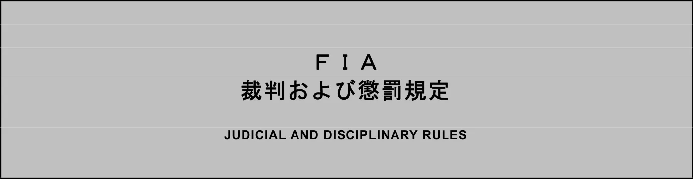

FIA国際モータースポーツ競技規則 / 裁判および懲罰規定_日本語版_20260101(PDF:1,010.5 KB)
JAF の公式サイトではありません。JAF が公開する PDF を自動変換した非公式の検索用アーカイブです。記載内容は必ず JAF の原本 PDF で出典をご確認ください。 検索と AI 質問つきのビューアで開く
P.12026 FEDERATION INTERNATIONALE
DE L'AUTOMOBILE
International Sporting Code／
JUDICIAL AND DISCIPLINARY RULES
国際モータースポーツ競技規則／
裁判および懲罰規定
一般社団法人 日本自動車連盟
P.2目 次
第１条 総 則 ··········································· 12
第1 条1 項 自動車競技の国際規則 ······························· 12
第1 条2 項 国際モータースポーツ競技規則（International Sporting Code） 12
第1 条3 項 規則についての熟知およびその遵守 ··················· 12
第1 条4 項 自動車競技の国内的統轄 ····························· 13
第1 条5 項 国家領域内におけるスポーツ権能の行使 ··············· 13
第1 条6 項 スポーツ権能の委任 ································· 13
第1 条7 項 委任の取消 ········································· 13
第1 条8 項 国内競技規則 ······································· 13
第２条 競技－総則 ······································· 14
第2 条1 項 基本原則 ··········································· 14
第2 条2 項 国際競技 ··········································· 15
第2 条3 項 国内競技 ··········································· 17
第2 条4 項 選手権、カップ、トロフィー、チャレンジ、およびシリーズ ······························································· 18
第2 条5 項 車両保管場所（パークフェルメ：Parc fermé） ········· 22
第2 条6 項 競技許可証 ········································· 22
第2 条7 項 特定条件 ··········································· 26
第３条 競技－組織細目 ··································· 29
第3 条1 項 必要な組織許可 ····································· 29
第3 条2 項 組織許可の申請 ····································· 29
第3 条3 項 組織許可証の発給 ··································· 29
第3 条4 項 法律および規則の遵守 ······························· 29
第3 条5 項 特別規則書に記載すべき主要情報 ····················· 29
第3 条6 項 特別規則書の変更 ··································· 30
第3 条7 項 公式プログラムに記載すべき主要事項 ················· 30
P.3第3 条8 項 参加登録 ··········································· 31
第3 条9 項 参加申込の受付 ····································· 31
第3 条10 項 参加登録の遵守 ···································· 32
第3 条11 項 参加申込の締切 ···································· 32
第3 条12 項 電子的方法による参加申込 ·························· 32
第3 条13 項 虚偽の申告による参加申込 ·························· 32
第3 条14 項 参加申込の拒否 ···································· 32
第3 条15 項 条件付参加登録 ···································· 32
第3 条16 項 参加申込の公表 ···································· 33
第3 条17 項 競技参加者の選定 ·································· 33
第3 条18 項 補欠者の指名 ······································ 33
第3 条19 項 自動車の参加登録申込 ······························ 33
第3 条20 項 競技参加者の公式名簿 ······························ 33
第3 条21 項 指定エリア ········································ 33
第４条 ツーリング集会 ··································· 34
第4 条1 項 アイテナリー ······································· 34
第4 条2 項 一般条件 ··········································· 34
第５条 パレード ········································· 35
第5 条1 項 条件 ··············································· 35
第5 条2 項 認可 ··············································· 35
第６条 デモンストレーション ····························· 36
第6 条1 項 条件 ··············································· 36
第6 条2 項 認可 ··············································· 36
第７条 コースおよびサーキット ··························· 37
第7 条1 項 国際コース ········································· 37
第7 条2 項 コースの承認 ······································· 37
第7 条3 項 距離の測定 ········································· 37
第7 条4 項 サーキットまたはコースに対する国際許可証 ··········· 37
P.4第7 条5 項 サーキットまたはコースに対する国内許可証 ··········· 38
第7 条6 項 常設または臨時のコースおよびサーキットが充足すべき条件 ······························································· 38
第7 条7 項 サーキット許可証の掲示 ····························· 38
第８条 スタートおよびヒ－ト ····························· 39
第8 条1 項 スタート ··········································· 39
第8 条2 項 スタートライン ····································· 39
第8 条3 項 ローリングスタート ································· 39
第8 条4 項 スタンディングスタート ····························· 40
第8 条5 項 スタート合図員 ····································· 41
第8 条6 項 反則スタート ······································· 41
第8 条7 項 ヒート（分割競技） ································· 41
第8 条8 項 同着 ··············································· 41
第９条 競技参加者および競技運転者 ······················· 42
第9 条1 項 競技参加者および競技運転者の登録 ··················· 42
第9 条2 項 許可証の発給 ······································· 42
第9 条3 項 許可証の発給権 ····································· 42
第9 条4 項 競技参加者または競技運転者の国籍 ··················· 43
第9 条5 項 許可証の発給拒否 ··································· 44
第9 条6 項 許可証の有効期限 ··································· 44
第9 条7 項 許可証に対し徴収する料金 ··························· 44
第9 条8 項 許可証の効力 ······································· 44
第9 条9 項 許可証の提示 ······································· 44
第9 条10 項 認識されていない競技への参加 ······················ 44
第9 条11 項 国際健康証明書 ···································· 45
第9 条12 項 仮名 ·············································· 45
第9 条13 項 参加競技運転者の変更 ······························ 45
第9 条14 項 識別番号 ·········································· 45
P.5第9 条15 項 競技参加者の責任 ·································· 45
第9 条16 項 1 競技より他の競技に参加変更することの禁止 ········ 46
第9 条17 項 FIA 会長およびスポーツ担当会長代行の任期終了後の制限について · 46
第9 条18 項 適格性および適正審査 ······························ 46
第10 条 自動車 ·········································· 47
第10 条1 項 車両の分類 ········································ 47
第10 条2 項 危険な構造 ········································ 47
第10 条3 項 車両の公認 ········································ 47
第10 条4 項 特定の自動車の出場停止（失格）、資格停止または資格取消 ······························································· 47
第10 条5 項 自動車銘柄の資格停止または資格取消 ················ 48
第10 条6 項 車両につける広告 ·································· 48
第10 条7 項 虚偽の広告 ········································ 48
第11 条 競技役員 ········································ 50
第11 条1 項 競技役員の一覧 ···································· 50
第11 条2 項 監督権 ············································ 50
第11 条3 項 イベントの競技役員の組織 ·························· 50
第11 条4 項 イベントの競技役員の任命 ·························· 51
第11 条5 項 競技外部審査委員会 ································ 52
第11 条6 項 審査委員会の義務 ·································· 53
第11 条7 項 審査委員会の権限および権能 ························ 53
第11 条8 項 利益相反 ·········································· 56
第11 条9 項 競技役員の報酬 ···································· 57
第11 条10 項 レースディレクターの任務 ························· 57
第11 条11 項 競技長の任務 ····································· 57
第11 条12 項 イベント事務局長の任務 ··························· 58
第11 条13 項 計時委員の任務 ··································· 58
第11 条14 項 車両検査委員の任務 ······························· 59
P.6第11 条15 項 トラックまたはコース委員およびフラッグマーシャルの任務 ····························································· 59
第11 条16 項 審判員（JUDGES OF FACT）の任務 ··················· 60
第12 条 違反行為または侵害行為およびペナルティ ·········· 61
第12 条1 項 一般規定 ·········································· 61
第12 条2 項 規則違反 ·········································· 61
第12 条3 項 ペナルティ ········································ 62
第12 条4 項 ペナルティの区分 ·································· 64
第12 条5 項 罰金 ·············································· 65
第12 条6 項 競技審査委員会が科すことのできる最高罰金額 ········ 65
第12 条7 項 罰金支払の責任 ···································· 65
第12 条8 項 罰金の支払い ······································ 65
第12 条9 項 出場停止（失格） ·································· 66
第12 条10 項 資格停止 ········································· 66
第12 条11 項 暫定資格停止 ····································· 66
第12 条12 項 許可証の回収 ····································· 67
第12 条13 項 資格停止の効力 ··································· 67
第12 条14 項 資格取消 ········································· 67
第12 条15 項 国際スポーツ連盟に対するペナルティ処分の通知 ····· 68
第12 条16 項 資格停止事由および資格取消事由に関する通知 ······· 68
第12 条17 項 自動車の資格停止または資格取消 ··················· 68
第12 条18 項 賞典の喪失 ······································· 68
第12 条19 項 順位および賞典に対する変更 ······················· 68
第12 条20 項 処罰の公表 ······································· 68
第12 条21 項 ペナルティの減免 ································· 68
第13 条 抗 議 ·········································· 69
第13 条1 項 抗議権 ············································ 69
第13 条2 項 抗議の対象 ········································ 69
P.7第13 条3 項 抗議の時間制限 ···································· 69
第13 条4 項 抗議の提出 ········································ 69
第13 条5 項 抗議の提出先 ······································ 71
第13 条6 項 審問 ·············································· 71
第13 条7 項 受け付けられない抗議 ······························ 72
第13 条8 項 賞典の発表および賞の授与 ·························· 72
第13 条9 項 裁 定 ············································ 72
第13 条10 項 抗議保証金の取扱い ······························· 72
第14 条 再審の権利 ······································ 73
第15 条 控 訴 ·········································· 75
第15 条1 項 権限の範囲 ········································ 75
第15 条2 項 国際控訴審判所 ···································· 75
第15 条3 項 国内控訴機関 ······································ 75
第15 条4 項 国内控訴審判所の控訴手続 ·························· 75
第15 条5 項 国内控訴審判所への控訴の方式 ······················ 76
第15 条6 項 国内控訴審判所の裁定 ······························ 77
第15 条7 項 費 用 ············································ 77
第15 条8 項 裁定の公表 ········································ 77
第15 条9 項 ···················································· 77
第15 条10 項 スポーツ仲裁裁判所 ······························· 77
第15 条11 項 世界アンチドーピングプログラムの遵守 ············· 78
第16 条 車両に付ける競技番号と広告に関する規定 ·········· 79
第16 条1 項 ···················································· 79
第16 条2 項 ···················································· 79
第16 条3 項 ···················································· 79
第16 条4 項 ···················································· 79
第16 条5 項 ···················································· 79
第16 条6 項 ···················································· 80
P.8第16 条7 項 ···················································· 80
第16 条8 項 ···················································· 80
第17 条 モータースポーツにかかわる商業問題 ·············· 81
第17 条1 項 ···················································· 81
第17 条2 項 ···················································· 81
第18 条 ＦＩＡ決定事項の安定 ···························· 82
第18 条1 項 ＦＩＡ選手権、カップ、トロフィー、チャレンジ、またはシリーズのカレンダーの発表： ··································· 82
第18 条2 項 規則の改正 ········································ 82
第18 条3 項 ···················································· 83
第19 条 国際モータースポーツ競技規則の施行 ·············· 84
第19 条1 項 規則の国内解釈 ···································· 84
第19 条2 項 国際モータースポーツ競技規則の変更 ················ 84
第19 条3 項 通告 ·············································· 84
第19 条4 項 国際モータースポーツ競技規則の国際的解釈 ·········· 84
第19 条5 項 国際競技規則と適用法の相互関係 ···················· 84
第20 条 定 義 ·········································· 85
絶対世界記録(Absolute World Record)： ·························· 85
付則(Appendix)： ··············································· 85
適用法(Applicable Laws)： ······································ 85
ＡＳＮ（国内スポーツ権能者）： ·································· 85
自動車(Automobile)： ··········································· 85
バハクロスカントリーラリー(Baja Cross‐Country Rally)： ········ 85
出場禁止(Ban)： ················································ 85
ＦＩＡ世界選手権に参加する競技参加者の人員についての登録証明(Certificate of registration for the personnel of Competitors entered in the FIA World Championships)： ······················ 86
選手権(Championship)： ········································· 86
サーキット(Circuit)： ·········································· 86
P.9サーキットレース(Circuit Race)： ······························· 86
クラス区分(Classification)： ··································· 86
クローズド競技(Closed Competition)： ··························· 86
国際競技規則(code)： ··········································· 86
競技(Competition)： ············································ 86
競技参加者(Competitor)： ······································· 87
コントロールライン(Control Line)： ····························· 87
コース(Course)： ··············································· 87
クロスカントリーラリー(Cross‐Country Rally)： ················· 87
気筒容積(Cylinder capacity)： ·································· 87
デモンストレーション(Demonstration)： ·························· 87
出場停止（失格）(Disqualification)： ··························· 87
ドラッグレース(Drag race)： ···································· 88
ドリフト(Drifting)： ··········································· 88
競技運転者(Driver)： ··········································· 88
参加登録(Entry)： ·············································· 88
EU プロフェッショナル競技参加者(EU Professional Competitor)： ·· 88
EU プロフェッショナル競技運転者(EU Professional Driver)： ······ 88
イベント(Event)： ·············································· 89
資格取消(Exclusion)： ·········································· 89
ＦＩＡ： ······················································· 89
ＦＩＡフォーミュラ1 財務規則(FIA Formula One Financial Regulations)： ················································· 89
最終順位認定(Final Classification)： ··························· 89
フィニッシュライン(Finish Line)： ······························ 89
不可抗力(Force Majeure)： ······································ 89
ハンディキャップ(Handicap)： ··································· 89
ヒルクライム(Hill Climb)： ····································· 89
P.10国際選手権(International Championship)： ······················· 89
国際競技(International Competition)： ·························· 90
国際許可証(International Licence)： ···························· 90
周回記録(Lap Record)： ········································· 90
許可証(Licence)： ·············································· 90
許可証所持者の登録簿(Licence‐Holders' Register)： ············· 90
許可証番号(Licence Number)： ··································· 90
マラソンクロスカントリーラリー(Marathon Cross‐Country Rally)： 90
マイルおよびキロメートル(Mile and Kilometre)： ················· 90
不正行為(Misconduct)： ········································· 90
国内選手権(National Championship)： ···························· 91
国内競技(National Competition)： ······························· 91
国内記録(National Record)： ···································· 91
公式プログラム(Official Programme)： ··························· 91
競技外部審査委員会(Out-of-Competition Stewards Panel)： ········ 91
オーガナイザー(Organiser)： ···································· 91
組織委員会(Organising Committee)： ····························· 91
組織許可証(Organising Permit)： ································ 91
完全世界記録(Outright World Record)： ·························· 91
パレード(Parade)： ············································· 91
車両保管場所(パークフェルメ：Parc fermé)： ····················· 91
母国ＡＳＮ(Parent ASN)：（許可証所持者に関して） ················ 91
母国ＡＳＮ(Parent ASN)：（国際シリーズに関して） ················ 92
競技関係者(Participant)： ······································ 92
競技同乗者(Passenger)： ········································ 92
暫定順位認定(Provisional Classification)： ····················· 92
火工製品(Pyrotechnics Product)： ······························· 92
ラリー(Rally)： ················································ 92
P.11記録（また、陸上速度記録）(Record（also Land Speed Record）)： · 93
記録挑戦(Record Attempt)： ····································· 93
指定エリア(Reserved Areas)： ··································· 93
特殊自動車(Special Automobiles)： ······························ 93
スラローム(Slalom)（ジムカーナ、モトカーナとも呼ばれ、あるいは同様の意味）： ······················································ 93
スピードウェイ(Speedway)： ····································· 93
スタート(Start)： ·············································· 93
スタートライン(Start Line)： ··································· 94
ス－パーライセンス(Super Licence)： ···························· 94
特別規則書(Supplementary Regulations)： ························ 94
資格停止(Suspension)： ········································· 94
テスト(Test)： ················································· 94
ツーリング集会(Touring Assembly)： ····························· 94
トライアル(Trial)： ············································ 94
世界記録(World Record)： ······································· 94
付 則
FIA 裁判および懲罰規定 ········································· 95
P.12２０２６年
国際モータースポーツ競技規則
ＦＩＡの正式な規定の諸国語での訳文に用いられる用語に関して解釈の相違
がある場合は、仏文の条文が正式なものとみなされる。
本年のＦＩＡイヤーブックで公示された各種規定の条文（国際モータースポ
ーツ競技規則およびその付則ならびにＦＩＡ国際選手権の規定）は、ＦＩＡによ
って起案され、２０２６年１月１日施行されたものである。
上記日付以降のすべての改正はＦＩＡ公式ブルテンで公示される。
本訳文は、国際自動車連盟（ＦＩＡ）制定の国際モータースポーツ競技
規則最新版を日本自動車連盟（ＪＡＦ）が訳定したものです。
本訳定で疑問箇所がある場合は、本書の原文である２０２６年ＦＩＡ
イヤーブック・国際モータースポーツ競技規則およびＦＩＡ公式ブルテンをご参照ください。
なお、ＦＩＡホームページにも掲載されています。
http://www.fia.com/
P.132025 年12 月12 日の総会において採択された。
本国際モータースポーツ競技規則では、個人を指す用語は、性別に関係なく適用される。
第１条 総 則
第1 条1 項 自動車競技の国際規則
1.1.1 ＦＩＡ（国際自動車連盟）は、自動車競技および自動車Ｅスポーツ競技を振興し、それらを統轄するための安全でスポーツの公正さの基本原則に基づく規則を制定し、かつ、実施する権能を有し、ＦＩＡ国際選手権およびＦＩＡ国際Ｅスポーツ選手権を組織する唯一の国際的スポーツ権能である。
1.1.2 ＦＩＡは、それらの実施に当たって生ずる紛争を裁定する最終審の国際裁定機関であり、１輪、２輪および３輪の車両に関しては国際モーターサイクリスト連盟（Fédération Internationale Motocycliste）が、上記と同一の権能を行使することを容認するものである。
1.1.3適用される法律で許可される最大限の範囲で、ＦＩＡまたはその役員、代理人、従業員、ディレクター、または職員は、ＦＩＡおよび/またはその役員、代理人、従業員、ディレクター、または職員の職務に関連する、いずれの行為、決定または不作為から生じる請求、費用、損害または損失についても、故意の不正行為または詐欺を除き、他の当事者に対して責任を負わないものとする。
第1 条2 項 国際モータースポーツ競技規則（International Sporting Code）
1.2.1 ＦＩＡは、前条の権能を正当かつ公平な方法で行使するため、そのすべての付則を含む、国際競技規則（the Code）を制定するものである。
1.2.2国際競技規則が目的とするところは、モータースポーツを統制し、振興および発展させることである。
1.2.3国際競技規則は、モータースポーツが安全、公正かつ秩序正しく行われるために、ＦＩＡが必要であると判断する場合を除いて、競技または競技者の参加を妨げたり、妨害する目的により施行されるものでは決してない。
第1 条3 項 規則についての熟知およびその遵守
1.3.1競技を開催し、あるいは促進し、または、それに参加する者もしくは団体は、いずれも次のとおりと見なされる。
1.3.1.a ＦＩＡの定款および規則、ならびに国内競技規則について熟知していること。
1.3.1.b 上述の事項およびスポーツ権能者の決定、およびそれ等から生ずる結果に対し
P.14無条件で従うことを約束していること。
1.3.2これらの規定が遵守されない場合には、競技を開催し、または競技に参加する者または団体については、その者に対し発行された許可証は取り消され、製造者についてはＦＩＡ選手権から、一時的または恒久的に排除される場合がある。その場合、ＦＩＡおよび／またはＡＳＮはその決定の理由を明らかにする。
1.3.3自動車が適用される技術規定に従っていないことが発覚した場合に違反部分によって何ら性能の向上はなかったと主張することによる弁明はできない。
第1 条4 項 自動車競技の国内的統轄
1.4.1 ＦＩＡは、一国につき１つのＡＳＮが、自国の権限下にある地域の全域において、国際競技規則を施行し、かつ、自動車競技を統轄する資格を有する唯一のスポーツ権能者であることを認める。
1.4.2各ＡＳＮは、国際競技規則によって規制されるものと見なされる。
第1 条5 項 国家領域内におけるスポーツ権能の行使
各国に属する非自治地域は、ＦＩＡにおいて当該国を代表するＡＳＮによって
行使されるスポーツ権能に服するものとする。
第1 条6 項 スポーツ権能の委任
それぞれのＡＳＮは、ＦＩＡの事前承認がある場合に限り、国際競技規則によ
り付与せられたスポーツ権能の全部もしくは一部を、自国の他のクラブに委任することができる。
第1 条7 項 委任の取消
ＡＳＮは、ＦＩＡに通告することを条件として、その委任を取消すことができ
る。
第1 条8 項 国内競技規則
いずれのＡＳＮも、その国内競技規則を制定することができるが、その規則を、
ＦＩＡに提出することが義務づけられる。
P.15第２条 競技－総則
第2 条1 項 基本原則
2.1.1国際競技規則適用の一般的条件
2.1.1.a ＦＩＡの加盟国において開催される競技はすべて、国際競技規則により統轄されるものとする。
2.1.1.b しかしながら、クローズド競技は国内競技規則によって統轄される。また、国内競技規則が公布されていない国においては、国際競技規則が適用されるものとする。
2.1.2競技の組織
いずれの国においても競技は次の者によって開催することができる。
2.1.2.a ＡＳＮによる；
2.1.2.b 自動車クラブまたは例外的にその他有資格スポーツ団体。ただし、そのクラブあるいは団体が組織許可証を所持していることを条件とする。
2.1.3公式文書
2.1.3.a 特定のＦＩＡ規則に規定されていない限り、記録挑戦を除く、いかなる競技は、公式文書を作成する必要があり、特に、特別規則書、参加申込書および公式プログラムは、必ず含めなければならない。さらに、暫定および最終の認定順位は、フリー走行、予選、ヒート（最終認定順位の代わりに特定の順位の公表が適用される競技規則で定められている場合は除く）、および決勝ごとに公表されなければならない。
2.1.3.b これらの公式文書中に国際競技規則に相反する条項がある場合には、その条項は無効とする。
2.1.4競技関係文書に必ず記載する文言
2.1.4.a 競技に関する特別規則書、公式プログラム、および参加登録申込書にはいずれも、「付則を含むＦＩＡ国際モータースポーツ競技規則ならびに（当該ＡＳＮもしくはＡＳＮが認めた代表者の名称）の国内競技規則に基づき開催」という文言を明瞭に記載しなければならない。
2.1.4.b 国内競技規則が存在しない国においては、その文言は「付則を含むＦＩＡ国際モータースポーツ競技規則に基づき開催」と短縮する。
2.1.5承認されていない競技
2.1.5.a 国際競技規則または関係ＡＳＮの国内競技規則に基づいて開催されない競技または提案された競技は、承認されていないものと見なされる。
2.1.5.b 組織許可証が発行されているイベントの中に上記のような競技が含まれている場合には、当該組織許可証は無効とする｡
P.162.1.5.c そのような競技は、ＡＳＮあるいは国際スポーツカレンダーに有効に登録された、選手権、カップ、トロフィー、チャレンジ、またはシリーズに参加する資格を競技参加者に与えるのに決して活用することはできない。
2.1.6競技の延期または中止
2.1.6.a 競技は、適用される特別規則書に規定されている場合、もしくは不可抗力または安全上の理由により、延期もしくは中止することができる。
2.1.6.b ２４時間以上の延期または中止の場合には、参加料は返還されなければならない。
2.1.7 競技の開始と終了
2.1.7.a 競技は、書類検査および／あるいは車検の開始予定時刻から開始されるものとみなされる。
2.1.7.b 競技は、次に掲げた制限時間のうち最も遅い方が終了した時点をもって競技終了とする。
2.1.7.b.ⅰ抗議、または控訴申し立ての制限時間、または審問の終了；
2.1.7.b.ⅱ国際競技規則に従って行事後に実施される車検の終了。
2.1.8競技の全部または一部が、国際選手権、カップ、トロフィー、チャレンジ、またはシリーズと称する競技であっても、ＦＩＡが承認しない競技はいかなるものも国際スポーツカレンダーに登録することはできない。
2.1.9国際競技規則およびその付則中に定義されているＦＩＡフォーミュラおよびカテゴリーまたはグループに属する自動車が参加できるあらゆる競技において、その競技が国際格式であろうと国内格式であろうと、それに参加するすべての自動車は、すべての面において、ＦＩＡの技術規則またはＦＩＡによるそれらの正式な解説および解釈に適合していなければならない。ＡＳＮはＦＩＡから書面による個別許可を入手していない限り、これらのＦＩＡの技術規則を変更することはできない。
第2 条2 項 国際競技
2.2.1国際スピード競技
国際格式の公認申請を行なうためには、スピード競技は次の条件すべてを満たしていなければならない。
2.2.1.a 国際サーキット競技については、当該サーキットは、ＦＩＡが発行する競技車両に適した格式の公認サーキット許可証を所持しなければならない。また、すべての常設サーキットは、ＦＩＡが発行する適切なレベルの環境認定証明書、またはＦＩＡがそれと同等とみなす証明書（付則Ｏ項を参照のこと）を保有していなければならない。
2.2.1.b 国際ラリーおよびクロスカントリーラリーについては、関連した条項のすべて
P.17が適用されなければならない。
2.2.1.c 参加を認められた競技参加者と競技運転者は、適切な国際許可証を所持していなければならない。
2.2.1.d 記録挑戦以外の競技は、国際スポーツカレンダーに登録記載されなければならない。
2.2.2国際限定スピード競技
国際格式の公認申請を行うためには、国際限定スピード競技は以下の条件をすべて満たさなければならない：
2.2.2.a 競技のコース（サーキットまたは道路）は、該当する場合、主催のＡＳＮによって承認されなければならない。
2.2.2.b 参加を認められた競技参加者および競技運転者は、適切な国際ライセンスまたは同等の国内ライセンスを所持していなければならない。
2.2.2.c 通常の交通が可能な公道で実施される競技に参加することを認められた競技運転者は、さらに、競技が実施される国で有効な運転免許証を所持していなければならない。
2.2.2.d 競技の平均速度が最高５０km/h であること、および／または競技が第３条４項２に従って通常の交通に開放されている公道で行われること。
2.2.2.e 競技は、国際スポーツカレンダーに掲載されていなければならない。
2.2.3国際スポーツカレンダーへの登録はＦＩＡの裁量で行われ、競技が開催される国のＡＳＮによって申請されなければならない。ＦＩＡが登録を却下する場合にはその理由が明らかにされる。
2.2.4国際競技のみが、国際選手権、カップ、トロフィー、チャレンジ、またはシリーズを構成することができる。
2.2.5国際競技は、ＦＩＡの名称が付された国際選手権、カップ、トロフィー、チャレンジ、またはシリーズの一戦として認定された場合、ＦＩＡの監督下に置かれる。
2.2.6その他全ての国際競技については、当該ＡＳＮの規則および競技に適用される規則と共に、国際競技規則により制定された国際規則の適用について、その国のＡＳＮが責任を負う。
2.2.7いかなる競技運転者、競技参加者またはその他の許可証所持者も、ＦＩＡカレンダーに登録されていない、またはＦＩＡあるいはそのＡＳＮによって管理統括されていない国際競技、あるいは国際選手権、カップ、トロフィー、チャレンジ、またはシリーズに参加することはできない。
2.2.8国際競技で、それに参加するために競技参加者もしくは運転者が上記の規定以外の特別な条件を満たさなければならない場合には、その競技は「制限付」と
P.18称することができる。招待参加による競技は制限付競技である。その特殊性のため付則Ｏ項の適用が免除されて開催することができる制限付競技については、ＦＩＡは、特定の例外的状況において、ＡＳＮの申請によりそれらを国際スポーツカレンダーに登録する許可を与えることができる。
第2 条3 項 国内競技
2.3.1国内競技は、国際競技規則適用の一般条件を遵守したうえで自らの規則および組織（その国内競技規則を通して含み）の権能を行使するＡＳＮの単独の監督下に置かれる。
2.3.2下記に示される場合を除いて、国内競技は、競技が開催される国のＡＳＮによって発給された許可証を所持する競技参加者および競技運転者のみが参加可能である。
2.3.3国内競技は、国際選手権、カップ、トロフィー、チャレンジ、またはシリーズとして認定することはできず、複数の国際競技後の総合順位作成の際に考慮されることもない。
2.3.4国内競技は、公認するＡＳＮの裁量において、他のＡＳＮ許可証所持者の参加を受付けることができる。
2.3.5すべての国内競技は公認するＡＳＮの国内カレンダーに掲載されなければならない。
2.3.6外国人の許可証所持者に開かれている国内選手権、カップ、トロフィー、チャレンジ、またはシリーズ。
2.3.6.a.i もし、この国内競技が国内選手権、カップ、トロフィー、チャレンジ、またはシリーズの一戦として構成されている場合、外国の許可証所持者である競技参加者および競技運転者は、関係ＡＳＮの単独の裁量にて、当該選手権、カップ、トロフィー、チャレンジ、またはシリーズの順位のポイントを獲得する資格があるものとする場合がある。そのような選手権、カップ、トロフィー、チャレンジ、またはシリーズのランキングのポイント配分は、外国の許可証を所有する競技参加者および競技運転者を考慮して行うことができる。
2.3.6.a.ii ＦＩＡゾーン選手権の一部を構成する国内競技には、付則Ｚ項第７条２項および第７条３項が適用される。
2.3.6.a.iii ＦＩＡにより認可されるＦ４選手権の対象となる競技には、上記第
2.3.6.a.i 項が適用される。
2.3.6.b 他のＡＳＮの許可証所持者の参加を受け入れている競技を認可しているＡＳ Ｎは、ＦＩＡと競技参加者とドライバーに対して、少なくとも以下のことがすべての公式書類上（特に参加申込書）で明らかにされていることを監視する義務がある。
P.192.3.6.b.i サーキットがＦＩＡにより国際公認されているか関連するＡＳＮにより国内公認が発行されていて、競技に参加できる競技車両カテゴリーに相応しいか明確な情報
2.3.6.b.ii サーキットの公認に従った、参加が許可された自動車の種類の情報
2.3.6.b.iii 競技参加のために要求されたドライバーの許可証の等級の情報
2.3.7海外で開催される国内競技会に参加を希望する競技参加者および競技運転者は、管轄のＡＳＮの承認をもってのみ、参加することができる。
2.3.7.a この承認は、当該ＡＳＮが適当と認める形式により行うものとする。
2.3.7.b 外国籍の競技参加者および／または競技運転者で、その許可証発給元のＡＳＮから事前の許可得ていない競技参加者および／または競技運転者の参加申し込みを受け入れたオーガナイザーは違反行為を犯したこととなり、当該国内競技を認可するＡＳＮに通知された場合、当該国内競技を認可するＡＳＮの裁量による罰金またはその他のペナルティが科されるものとする。
2.3.7.c ＡＳＮが、その許可証所持者に対して与える承認は、当該ＡＳＮの国内カレンダーに登録された競技に限られることに注意すること。
2.3.8国内競技で、それに参加するために競技参加者もしくは運転者が上記の規定以外の特別な条件を満たさなければならない場合には、その競技は「制限付」と称することができる。招待参加による競技は制限付競技である。
2.3.9クローズド競技はＡＳＮによって公認されることを要するが、ＡＳＮは例外として、その競技の開催を複数のクラブが共同して行うことを認可することができる。
第2 条4 項 選手権、カップ、トロフィー、チャレンジ、およびシリーズ
2.4.1国際選手権
2.4.1.a 国際選手権を認可できるのはＦＩＡのみである。
2.4.1.b 国際選手権はＦＩＡ、またはＦＩＡと書面によって合意したその他の団体のみが開催することができる。この場合、選手権のオーガナイザーは、競技のオーガナイザーと同一の権利と義務を有する。
2.4.1.c ＦＩＡの名称が冠されている世界選手権はＦＩＡに所有権があり、それらに適用される規則で最低限、国際競技規則第2.4.3 項の要件を満たし、追加要件としてシーズン中、平均して少なくとも４つの自動車製造者の参加者が含まれていれば「ワールド」（世界）という文言（または、いかなる言語においても「ワールド」を意味するか、または「ワールド」から由来した文言）を唯一タイトルに付記できる。
2.4.2国際カップ、トロフィー、チャレンジ、およびシリーズ
2.4.2.a ひとつの国際カップ、トロフィー、チャレンジ、またはシリーズは、同一の規
P.20則によって統轄された複数の国際競技から成るものであってもよいし、単独の国際競技であってもよい。
2.4.2.b 国際競技のみ国際カップ、トロフィー、チャレンジ、またはシリーズを構成することができる。
2.4.2.c カップ、トロフィー、チャレンジ、またはシリーズを提案するＡＳＮが、下記事項に関することを含めて、ＦＩＡから書面による事前承認を得ていない限りは、いかなる国際カップ、トロフィー、チャレンジ、またはシリーズも開催することはできない。
2.4.2.c.i 当該シリーズの競技規則および技術規則の承認。特に安全に関する規則の承認。
2.4.2.c.ii 当該シリーズのカレンダーの承認。
2.4.2.c.iii 当該カップ、トロフィー、チャレンジ、またはシリーズのうちの１戦または数戦を開催することとなる領域のすべてのＡＳＮからの、その候補の日程を含む、事前承認。
2.4.2.c.iv 各サーキットの公認規格が参加を認められる競技車両のカテゴリーに対して適切であること、および、すべての競技に対して、安全と医療に関するＦＩＡのあらゆる規則が遵守されていることの、サーキットレースのための確認。
2.4.2.c.v 当該カップ、トロフィー、チャレンジ、またはシリーズのタイトルが地理的範囲と技術的かつ競技的基準に合致している証明。
2.4.2.d ＦＩＡの名称が冠されている国際カップ、トロフィー、チャレンジ、またはシリーズは、ＦＩＡに所有権があり、ＦＩＡまたはＦＩＡから書面による承認を得ている他の団体のみによってのみ開催することができる。この場合、カップ、トロフィー、チャレンジ、またはシリーズのオーガナイザーは、競技のオーガナイザーと同一の権利と義務を有する。
2.4.3「ワールド」（世界）名称の使用
2.4.3.a ＦＩＡの名称が冠されている国際カップ、トロフィー、チャレンジ、またはシリーズ、およびそれらの競技は、それらに適用される規則で最低限、以下の要件を満たし、追加要件としてシーズン中、平均して少なくとも４つの自動車製造者の参加者が含まれていれば「ワールド」（世界）という文言（または、いかなる言語においても「ワールド」を意味するか、または「ワールド」から由来した文言）を唯一タイトルに付記できる。
2.4.3.b 国際カップ、トロフィー、チャレンジ、またはシリーズ、およびそれらの競技は、ＦＩＡの承認なしに「ワールド」という文言（または、いかなる言語においても「ワールド」を意味するか、または「ワールド」から由来した文言）を
P.21タイトルに含めることはできない。一般的に、ＦＩＡは以下の要件に適合し、そうすることによってスポーツのためになるとＦＩＡが考える場合においてこの許可を与える。ＦＩＡはこれらの要件を満たしていないイベントの承認を取り消すことができる。
2.4.3.b.i カップ、トロフィー、チャレンジ、またはシリーズのカレンダーに含まれるイベントは同一シーズン中に、３つ以上の異なる大陸を開催場所としなければならない。
2.4.3.b.ii 単独の競技に参加するための競技参加者資格で参加可能な、１戦のみの競技、複数のヒート、複数の競技、その他のシリーズで構成されるカップ、トロフィー、チャレンジ、またはシリーズにおいては、３つ以上の異なる大陸を開催場所としなければならず、国際カレンダーに正当に登録された競技でなければならない。
2.4.3.b.iii 主催者は、国際競技規則や他の規則に記載された全ての権利、権能を同意し、承認しなくてはならないとともに、国際競技規則と適用される諸規則を十分に遵守されている証として「ワールド」のタイトルを使用、または使用を申請している全てのカップ、トロフィー、チャレンジ、またはシリーズの競技の査察を実施する権利をＦＩＡが留保することについて同意し、承認しなくてはならない。オーガナイザーは、ＦＩＡがこの目的のためにサーキット全体へ立ち入ったり、すべての関係書類を利用することを認めることで査察を円滑に進行させるものとする。
2.4.3.c ＦＩＡは、「ワールド」という文言を伝統的に使用していることの証明が可能であるカップ、トロフィー、チャレンジ、またはシリーズについては例外的に本規則の適用免除を容認することがある。
2.4.4. 国内選手権
2.4.4.a 権限を有するＡＳＮのみが国内選手権を認可することができる。
2.4.4.b 国内選手権はＡＳＮ、またはかかるＡＳＮから書面による承認を得ているその他の団体によってのみ開催することができる。
2.4.4.c 国内選手権の競技は以下を例外としてその国の領域外で行うことはできない：
2.4.4.c.i ＡＳＮは国内選手権の最大１戦までを、その国内選手権を開催する国と国境を共有する国および／あるいは適切な地理的関係がある国（ＦＩＡ世界モータースポーツ評議会の承認による）であることを条件に、その国の領域外で行うことができる。
2.4.4.c.ii ゾーンの一部ではないＡＳＮは、以下の条件を遵守することを条件とし、国内の領域外で国内選手権の競技を開催することができる：
－ それらが、その国内選手権を組織している国と共通の国境を有する国およ
P.22び／あるいは適切な地理的関係にある国（ＦＩＡ世界モータースポーツ評議会の承認による）で実施されること。
－ 当該国内選手権が以下の性能レベルに匹敵する（i)車両を対象とする競技だけで構成されていること：
・サーキットで行われる競技では３kg/hp を超える。
・閉鎖道路で行われる競技では４kg/hp を超える。
あるいはＦＩＡ世界モータースポーツ評議会の決定によって（ii）に匹敵する車両。
2.4.4.c.iii 2.5～3.8kg/hp の性能レベルのシングルシーター車両を使用する国内選手権のサーキット競技については：
－ 第2.4.4.c.i 項は、主催するＡＳＮが、ＦＩＡ公認のグレード４以上のサーキットを少なくとも２つ保有している場合に適用される。
－ 第2.4.4.c.i 項および第2.4.4.c.ii 項は、主催するＡＳＮがＦＩＡ公認を受けたグレード４以上のサーキットを最大１つしか保有していない場合には適用されない。ただし、第2.4.4.c 項の例外として、ＡＳＮは、その国内選手権を開催している国と国境を共有する国および/または適切な地理的関係にある国 (ＦＩＡ世界モータースポーツ評議会の承認による)で実施されることを条件に、その国の領域外でそのような国内選手権のサーキット競技を最大２回まで開催できる。上記にかかわらず、ＦＩＡは、その独自の裁量により、例外的に、第2.4.4.c.ii項に基づき、2.5～3.8kg/hp 性能レベルのシングルシーター車両を使用し、サーキットで行われる競技について、国内選手権の開催を許可することができる。
2.4.4.c.iv 2.5kg/hp を超える性能レベルのシングルシーター車両ならびにこれと同等の設計、仕様または改造派生車両は、国際競技では認められない。例外として認められるのは、以下に限定される。a) ２０２５年６月３０日より以前にＦＩＡによって承認され、かつ現在も開催されている国際競技b) ＦＩＡが明確に承認したその他の国際競技
2.4.4.d また、ＦＩＡは、その裁量権限により、クローズド競技の、単独で構成される国内選手権が、そのクラブの母体となるＡＳＮの領域外で開催されることを認めることがある。
2.4.5国内カップ、トロフィー、チャレンジ、およびシリーズ
2.4.5.a 権限を有するＡＳＮのみが国内カップ、トロフィー、チャレンジ、およびシリーズを認可することができる。
2.4.5.b ひとつの国内カップ、トロフィー、チャレンジ、またはシリーズは、同一の規
P.23則によって統轄された複数の競技から成るものであってもよいし、単独の競技であってもよい。
第2 条5 項 車両保管場所（パークフェルメ：Parc fermé）
2.5.1車両保管場所の内部へ立ち入りを許されるのは、競技役員のみである。同競技役員あるいは適用される規則による許可がない限り、いかなる作業、検査、調整、または修理を行ってはならない。
2.5.2車両検査が行われる競技においては車両保管場所を設けることが義務づけられる。
2.5.3適用される競技規則書において、車両保管場所（含複数）の位置を明記すること。
2.5.4閉鎖されたコースでの競技においては、車両保管場所の位置は、フィニッシュライン（または、用意されているならば、スタートライン）のすぐそばでなければならない。
2.5.5特定の競技の終了地点では、フィニッシュラインと車両保管場所の入口との間のエリアに対して車両保管場所の規定が適用される。
2.5.6車両保管場所には充分な広さがあり、車両が構内にある間に侵入者の無きよう充分な防御が施されること。
2.5.7監視はオーガナイザーによって任命された競技役員によって実行されることとし、これらの競技役員は車両保管場所の運営について責任を負い、かかる競技役員のみが競技参加者に命令を下す権限を有する。
2.5.8ラリーおよびクロスカントリーラリーにおいて、コントロールエリアおよびリグループエリアは車両保管場所とみなされる。コントロールエリア内では、適用される規則にて特に明記されない限り、修理または支援行為を行うことはできない。
第2 条6 項 競技許可証
2.6.1基本原則
2.6.1.a 競技許可証所持者は国際競技規則を熟知しているものとみなされ、かつ、その規定を遵守しなければならない。
2.6.1.b すべての場合において、国際競技規則、および適用される競技規則および技術規則の範囲内で、競技許可証を得る資格を有する競技許可証申請者はすべて、かかる競技許可証の発給を受ける権利があるという原則が適用される。
2.6.1.c 所属するＡＳＮが発給する競技許可証を所持していない場合、あるいは第９条３項２に従い所属のＡＳＮ以外のＡＳＮが発給する競技許可証を所持していない場合は、いかなる者も競技に参加することはできない。
2.6.1.d 付則Ｌ項に別段の定めがない限り、国際競技許可証は毎年１月１日を始期とし、
P.24１年ごとに更新されなくてはならない。
2.6.1.e それぞれのＡＳＮは、ＦＩＡの規則に従って競技許可証を発給するものとする。
2.6.1.f 競技許可証は仮名に対しても発給することができるが、いかなる者も２個の仮名を使用することはできない。
2.6.1.g 競技許可証の発給または更新に対して、料金を請求することができる。
2.6.1.h 各ＡＳＮは、ＦＩＡへの加盟が承認された時点で、こうして発給された競技許可証を承認し登録しておくことを保証しなければならない。
2.6.2スーパーライセンス
2.6.2.a スーパーライセンスの取得志望者は、専用の書式に記入・署名し発給申請（一年毎に）を行わなければならず、付則Ｌ項に定めるすべての要件を遵守しなければならない。
2.6.2.b ＦＩＡは特に取得志望者が、第12.2 項の違反を犯した場合に、スーパーライセンスの発給を拒否する権利を有し、拒否する場合は理由を明示する。
2.6.2.c スーパーライセンスの所有権はその発給者たるＦＩＡにある。
2.6.2.d 懲罰によってスーパーライセンスの停止や失効が生じた場合には、かかる停止または失効の期間中、その所持者はＦＩＡ選手権から排除される。
2.6.2.e 公式に国内警察当局によって確立された道路交通法違反を犯すことは、この違反が重罪であるか、他者を危険にさらしたか、モータースポーツのイメージを損なったか、ＦＩＡによって擁護される価値があるかで、国際競技規則の違反と見なされる。
2.6.2.f その様な道路交通違反を犯したスーパーライセンス所持者は：
2.6.2.f.i ＦＩＡによって警告が与えられ、
2.6.2.f.ii モータースポーツの発展のために何らかの活動を行う義務を課せられるか、国際法廷（International Tribunal）によってスーパーライセンスを一時停止もしくは恒久的に剥奪される。
2.6.3 ＥＵプロフェッショナル競技参加者または運転者
2.6.3.a ＥＵプロフェッショナル競技参加者または運転者はすべて、ＥＵ加盟国またはＦＩＡがＥＵ加盟国に準ずると決定した国で開催されるゾーン競技に付則Ｚ項第７条３項に従い、参加することができる。
2.6.3.b このような競技許可証にはＥＵ旗が表示されるものとする。
2.6.3.c ＥＵ加盟国のＡＳＮあるいはＦＩＡの決定によってＥＵ加盟国に準ずると認められた国のＡＳＮは、保険について、本規則を考慮して手配することを保証するものとする。
2.6.3.d ＥＵプロフェッショナル競技者または競技運転者はすべて、各自が参加する競技の開催国のＡＳＮおよび所持する競技許可証を発給したＡＳＮの両者によ
P.25って管轄されることとなる。
2.6.3.e かかる競技許可証の資格停止の決定はすべて、ＦＩＡウエブサイトwww.fia.comにて発表される。
2.6.4 ＦＩＡ世界選手権に参加する競技参加者の人員登録証明書
2.6.4.a ＦＩＡフォーミュラ１世界選手権において、競技参加者を代表し、以下の役割をすべてあるいは部分的に実行する者すべては、ＦＩＡに正式に登録されなければならない。：
2.6.4.a.ⅰ 最高経営責任者： 競技参加者にとって最も重要な経営上の意思決定を行う責任者；
2.6.4.a.ⅱ 最高財務責任者： 競技参加者が世界選手権の財務規定を遵守することを保証する責任を負う者。
2.6.4.a.ⅲ チーム代表者： 競技参加者の最も重要な決定を下す立場の者；
2.6.4.a.ⅳ スポーティングディレクター： 競技参加者が、世界選手権競技規則を遵守していることを確実にする責務を負う者；
2.6.4.a.ⅴ テクニカルディレクター： 競技参加者が、世界選手権技術規則を遵守していることを確実にする責務を負う者；
2.6.4.a.ⅵ チームマネージャー： 競技参加者の競技における参加活動運営上の責務を負う者；
2.6.4.a.ⅶ レースエンジニアあるいはそれと同等の職務者（競技参加者ごとに２名）：競技参加者の車両の１台について責務を負う者。
2.6.4.a.ⅷ 上記以外の役割を実行する、競技参加者人員の追加メンバーは、ＦＩＡに正式に登録されなければならないということを、適用規定に定めることができる。
2.6.4.b.i ＦＩＡフォーミュラ１世界選手権では、競技参加者を代表し、上記第
2.6.4.a.i 項から第2.6.4.a.vi 項に一覧の役割をすべてあるいは部分的に実行する者はすべて、ＦＩＡに正式に登録されなければならない。
2.6.4.b.ⅱ その他のＦＩＡ世界選手権を担当するＦＩＡ競技委員会は、役割の数について、各選手権の特性に応じてその数を適応させることができる。
2.6.4.c 正式に登録された競技参加者人員メンバーすべては、競技関係者であると見なされる。
2.6.4.d ＦＩＡ世界選手権のエントリー申請の際に、競技参加者は当該競技参加者人員として登録される予定の人員メンバーの一覧を、この登録目的だけのために作成された書式に書名することによって、ＦＩＡに連絡しなければならない。
2.6.4.e 正式に登録された各競技参加者人員メンバーには、競技参加者を通じて、ＦＩ Ａ登録証明書が与えられる。その証明書はＦＩＡによって作成発行される書類
P.26であり、その所有権はＦＩＡにある。
2.6.4.f 登録は毎年１月１日から年１回更新されなければならない。
2.6.4.g ＦＩＡは、第12.2 項の違反を犯した一切の者の登録を、保留および取り消す権利を留保する。その場合の決定理由は、すべてについて明示されなければならない。
2.6.4.h ＦＩＡは、いかなるＦＩＡ世界選手権の一部分を構成する競技においても、正式に登録された競技参加者人員メンバーすべてが指定エリアに立ち入る権利を、一時的にあるいは最終的に拒否する権利を留保する。
2.6.4.i 競技参加者の組織上の変更により、ＦＩＡに登録が義務付けられる人員メンバーの一覧に変更がある場合、当該競技参加者は職務遂行を終了した人員メンバーの登録証明書をＦＩＡに返すと同時に、かかる変更の後７日以内にそれをＦ ＩＡに通知し、同一の締め切りをもって最新の一覧を提出しなければならない。
2.6.5 ＦＩＡ世界選手権に出場する競技参加者にフォーミュラ１パワーユニットおよびフォーミュラＥ車両を供給するために登録された製造者の人員登録証明書
2.6.5.a ＦＩＡフォーミュラ１世界選手権において、競技参加者にフォーミュラ１パワーユニットを供給するために登録された製造者人員メンバーは、ＦＩＡに正式に登録しなければならないと適用規定に定めることができる。
2.6.5.b ＦＩＡフォーミュラＥ世界選手権において、競技参加者にフォーミュラＥ車両を供給するために登録された製造者人員メンバーは、ＦＩＡに正式に登録されていなければならないと適用規定に定めることができる。
2.6.5.c 正式に登録された製造者人員メンバーは、すべて競技関係者であるとみなされる。
2.6.5.d ＦＩＡ世界選手権に出場する競技参加者にフォーミュラ１パワーユニットまたはフォーミュラＥ車両を供給するために登録する場合、これらの製造者は、そのために特別に作成された書式に署名することにより、登録するスタッフのメンバーのリストをＦＩＡに伝えなければならない。
2.6.5.e 前述のいずれかの製造者人員として正規に登録された各メンバーには、当該製造者を通じて、ＦＩＡの登録証明書（ＦＩＡが作成・発行し、ＦＩＡの所有物となる文書）が渡されるものとする。
2.6.5.f 登録は、ＦＩＡフォーミュラ１世界選手権のパワーユニット製造者およびＦＩ ＡフォーミュラＥ世界選手権の自動車製造者のＦＩＡ登録手続きでそれぞれ定められたサイクルの期間中に有効であるものとする。
2.6.5.g ＦＩＡは、第１２条２項の違反を犯した者の登録を保留し、取り消す権利を有する。そのような場合の決定理由は、すべてについて明示されなければならない。
P.272.6.5.h ＦＩＡは、いかなるＦＩＡ世界選手権の一部分を構成する競技においても、正式に登録された前述の一切の製造者人員メンバーいずれについても指定エリアに立ち入る権利を、一時的にあるいは断定的に拒否する権利を留保する。
2.6.5.i 上述の製造者の組織上の変更により、ＦＩＡに登録が義務付けられる人員メンバーの一覧に変更がある場合、当該製造者は職務遂行を終了した人員メンバーの登録証明書をＦＩＡに返すと同時に、かかる変更の後７日以内にそれをＦＩ Ａに通知し、同一の締め切りをもって最新の一覧を提出しなければならない。
第2 条7 項 特定条件
ＦＩＡ選手権、カップ、チャレンジあるいはトロフィーにおいて、適用されるＦＩ Ａ規定にその他の定めがない限り、下記第2.7.1 項～第2.7.3 項が適用される。
2.7.1国際格式のラリーに認められる車両
2.7.1.a ＦＩＡ世界ラリー選手権を除くすべての国際格式のラリーにおいて、すべての車両の出力は、最少パワーウェイトレシオで3.4kg/hp（4.6kg/kw）に制限される。ＦＩＡは常に、かつすべての状況において、この出力制限を遵守させるに必要なすべての対策をとる。
2.7.1.b 国際格式のラリーには、下記の車両のみが出場できる：
2.7.1.b.i ツーリングカー（グループＡ）、ただし、当該車両の公認書式中に、ラリーから除外される特定のエボリューションである旨の注記がある場合を除く。
2.7.1.b.ii プロダクションカー（グループＮ、Ｒ、ラリーおよびＲＧＴ）
2.7.1.c 当該車両の公認書式中に、ラリーから除外される特定のエボリューションである旨の注記がある場合を除き、グループＡ、Ｎ、ＲおよびＲＧＴ車両は、以下の条件を満たすことにより、当該公認の失効後さらに８年間にわたって世界ラリー選手権以外の国際格式のラリーに参加することが認められる。
2.7.1.c.i 書類審査および車両検査の際に当該ＦＩＡ公認書類が提出されていること。
2.7.1.c.ii 当該車両が、当該公認期限の最終日において有効な車両規則（付則Ｊ項）に適合しており、かつ競技に参加するに十分に良好な状態であると車両検査委員によって判断されること。
2.7.1.d これらの車両に使用されるターボリストリクターの寸法および最低車両重量は現在有効な数値となっていなければならない。
2.7.2クロスカントリーラリーおよびバハクロスカントリーラリー
ＦＩＡクロスカントリーラリー競技規則により規定された通りのクロスカントリー車両のみの参加が認められる。
2.7.3マラソンクロスカントリーラリー
2.7.3.a すべてのマラソンクロスカントリーラリーは、国際スポーツカレンダーに登録されていなければならない。
P.282.7.3.b ＦＩＡによって特別措置が認められない限り、１年について、大陸毎に１戦のみのマラソンクロスカントリーラリーしか開催することはできない。
2.7.3.c 競技は２１日間を超えてはならない（車両検査とスーパースペシャルステージを含む）。
2.7.3.d ＦＩＡクロスカントリーラリー競技規則により規定された通りのクロスカントリー車両のみの参加が認められる。
2.7.4記録挑戦
2.7.4.a 記録保持者
2.7.4.a.i 個々の挑戦において樹立された記録に関しては、その挑戦を行う許可の正式な申請をした者でその許可が与えられた者をもって記録保持者とする。
2.7.4.a.ii イベントにおいて樹立された記録に関しては、当該成績を樹立した自動車を参加登録した競技参加者をもって記録保持者とする。
2.7.4.b 管轄権
2.7.4.b.i それぞれのＡＳＮは、その管轄領域で達成された記録の公認申請について判定を行うものとする。
2.7.4.b.ii 世界記録の公認申請は所管のＡＳＮによってＦＩＡに対し提出され、その判定はＦＩＡが行うものとする。
2.7.4.c 記録樹立の資格を有する自動車
それぞれの記録は､自動車によってのみ樹立することができる。
2.7.4.d 公認記録
2.7.4.d.i 公認記録とは、国内記録、世界記録、絶対世界記録のみをいう。
2.7.4.d.ii 同じ記録が上記の分類により数種類の公認を受けることがあり得る。
2.7.4.e 車両クラス別に制限される自動車記録
そのクラスにおける世界記録を樹立または更新した自動車は、それによって該当する絶対世界記録を更新することとはなるが、上位のクラスにおける同じ記録を破ったこととはならない。
2.7.4.f 公認タイムおよび距離
付則Ｄ項に記載されているとおりのタイムおよび距離のみが、国内記録および
世界記録として公認される。
2.7.4.g レース中に樹立された記録
レース中に樹立されたタイムまたは距離記録は認められないものとする。周回記録はレース中にのみ樹立することができる。
2.7.4.h 記録挑戦
記録挑戦を行うことができる条件は付則Ｄ項において細目について説明する。
2.7.4.i 世界記録の公認条件
P.292.7.4.i.i 世界記録は、その記録挑戦が、ＦＩＡ加盟国内で行われたものでなければ公認されない。ただし、例外の場合として、加盟国ではないがＦＩＡによって発行された組織許可を得ている場合には､その限りではない。
2.7.4.i.ii いかなる場合においても、世界記録は、記録挑戦がＦＩＡによって公認されているコースにおいて行われたものでなければ公認されない。
2.7.4.j 記録の登録
2.7.4.j.i いずれのＡＳＮもその領域内において樹立、または更新された記録の台帳を保持し、かつ、要求に応じて、国内または地区記録の証明書を発行することができる。
2.7.4.j.ii ＦＩＡはクラス別世界記録の台帳を保持し、かつ、要求に応じて、その記録の証明書を発行する。
2.7.4.k 記録の発表
2.7.4.k.i 記録の公認申請に対して正式な公認が行われるまでは、読みやすい書体をもって「公認申請中」と明記しない限り、いかなる挑戦結果の商業的広告も行うことはできない。
2.7.4.k.ii この規定に違反した場合は、当該記録の公認申請は自動的に却下され、そのうえで所管ＡＳＮによってペナルティが科せられることがある。
2.7.4.l 記録挑戦料
2.7.4.l.i 管轄権を持つＡＳＮは、国内記録挑戦の監視と管理のため料金を設定できる。そのような料金は、毎年決定されて、ＡＳＮに支払われるものとする。
2.7.4.l.ii ＦＩＡは、世界記録挑戦の監視と管理のため料金を設定できる。そのような料金は、毎年決定されて、ＦＩＡに支払われるものとする。
P.30第３条 競技－組織細目
第3 条1 項 必要な組織許可
競技は、その国の所管のＡＳＮ、またはＦＩＡ加盟国でない場合はＦＩＡによって発給される組織許可がなければならない。
第3 条2 項 組織許可の申請
3.2.1組織許可の申請書は、適用される期日までに次の情報を添え､ＡＳＮに提出されなければならない：記録挑戦を除き、イベントの各競技の特別規則書草案。
3.2.2 ＡＳＮが組織許可証の発給に対する料金をあらかじめ定めている場合には、申請書にはその料金を添付しなければならない。その料金は、許可証が交付されない場合には返還されるものとする。
第3 条3 項 組織許可証の発給
3.3.1 ＡＳＮのある各々の国においては、自ら選択したフォーマットにて組織許可証を発行する権利がある。
3.3.2いかなる場合にも、組織許可証の申請を行うオーガナイザーは、その者が国際競技規則ならびにＦＩＡまたは該当する場合は関係するＡＳＮの適用される競技規則および技術規則に定められた規準に適合している限り、組織許可証を得る資格を有する。
第3 条4 項 法律および規則の遵守
3.4.1いかなる場所にて競技が開催されようとも（道路、サーキットあるいはその他一切の占有エリア）、組織委員会が所定の地方行政上の認可を取得すること、あるいは取得することを保証しなければ、組織許可証はＡＳＮによって発給されない。
3.4.2一般交通に公開されている道路上で行われる競技のそれらの部分は、開催国内で施行されている交通法規に基づいて実施されなければならない。
3.4.3スピードウェイにおいて開催される競技は、国際競技規則のすべての規定に従うものとするが、さらに、当該スピードウェイにおける競技車両の運転を規制し、かつ、その目的のために定められている特別規則に従わなければならない。
3.4.4すべての競技は、環境保護に関する適用法、ならびにＡＳＮおよび／またはＦ ＩＡが定める環境保護に関する規制および／または要件を遵守しなければならない。
3.4.5規則書の公表：各種ＦＩＡ選手権競技の規則書は、適用される競技規則に従って、ＦＩＡ事務局に到着しなければならない。
第3条5項 特別規則書に記載すべき主要情報（FIAフォーミュラ1世界選手権には適用されない）
P.313.5.1オーガナイザー（含複数）の名称。
3.5.2計画されている競技(含複数)の名称、種目および格式。
3.5.3そのイベントが国際競技規則および国内競技規則が存在する場合にはその規則に基づいて行われることを示す文言。
3.5.4組織委員の名前を含む組織委員会の構成、および同委員会の所在地。
3.5.5イベントの場所および日時。
3.5.6計画されている競技の細目（コースの長さおよび走行方向、参加を許される車両のクラスおよびカテゴリー、燃料、参加申込の数に制限がある場合にはその制限、および／または、付則Ｏ項に従ってスタートを許された車両の数等）。
3.5.7参加登録に関する有用なすべての情報：参加申込書の送付先、受付開始および締め切り日時､必要な参加料が定められている場合にはその金額。
3.5.8保険に関する有用なすべての情報。
3.5.9火工製品の所持または使用に関するすべての関連情報。
3.5.10 スタートの日時および方法ならびにハンディキャップが定められている場合にはその明示。
3.5.11 必要とされる許可証、信号（付則Ｈ項参照）に関する国際競技規則の条項についての注意喚起。
3.5.12 順位認定の方法。
3.5.13 暫定および最終の認定順位の公示の場所と時間。オーガナイザーがその宣言した通りに順位認定を、決められた場所と時間に、発表することができない場合、順位認定に関して取ろうとしている措置に関する正確な詳細を発表すること。
3.5.14 賞典の細目。
3.5.15 抗議に関する国際競技規則の条項についての注意喚起。
3.5.16 審査委員およびその他競技役員の氏名。
3.5.17 公式通知掲示板あるいはデジタル通知掲示板の場所。
3.5.18 適用できれば、競技の延期またはキャンセルの規定。
第3 条6 項 特別規則書の変更
競技への参加登録申込の受付開始後においては、既に参加登録を行った競技参加者の全員がその変更に異議無く同意した場合、または競技審査委員会が決定した場合を除き、特別規則書に対してはいかなる変更も加えることはできない。ＡＳＮおよび／またはＦＩＡの事前の合意を条件とし、イベントの安全と秩序だった指揮のために制限される修正は、オーガナイザーが当該競技の開始までに（国際競技規則第2.1.7 項に定義されているように）行うことができる。
第3 条7 項 公式プログラムに記載すべき主要事項
3.7.1そのイベントが国際競技規則、および国内競技規則が存在する場合にはその規
P.32則に従って開催されることを明示する文言。
3.7.2そのイベントの場所および日時。
3.7.3計画されている競技についてのタイムテーブルおよび簡単な説明文。
3.7.4競技参加者および運転者の氏名ならびに各競技車両に付けられる識別番号。
3.7.5ハンディキャップを設ける場合はその規定。
3.7.6賞典の細目。
3.7.7審査委員およびその他競技役員の氏名。
第3 条8 項 参加登録
3.8.1参加登録によって競技参加者は正当に証明された不可抗力による場合を除き、自己が登録した競技に参加することが義務づけられる。
3.8.2また、オーガナイザーは、競技参加者がその競技に確実に参加するためにあらゆる努力をはらわなければならないことを条件として、その競技参加者に対して参加登録の条件すべてを履行することを義務づける。
第3 条9 項 参加申込の受付
3.9.1一旦、ＡＳＮがイベントに対し組織許可証を発給した以後に、組織委員会は参加申込を受理することができる。
3.9.2参加申込書
最終的な参加登録の申込は組織委員会が要求する書式に記載することよって行わなければならず、それには競技参加者の氏名および住所、および指名した競技運転者ならびに、必要とされる場合にはそれらの競技参加者および競技運転者の許可証番号を記載しなければならない。ただし、競技運転者を指名するための猶予期間を特別規則書によって定めることができる。
3.9.3参加料の支払い
参加料が特別規則書に定められている場合には、参加申込はその参加料を添えて提出されなければ無効となる。
3.9.4国外で開催される国際競技に参加するためのＡＳＮによる許可証
3.9.4.a 国外で開催される国際競技に参加しようとする競技参加者および競技運転者は、あらかじめ自国のＡＳＮの事前承認を得なければその競技に参加することはできない。
3.9.4.b この承認は、当該ＡＳＮが適当と認める形式により行うものとする。
3.9.4.c 許可証（含複数）を発給したＡＳＮから事前許可を得ていない外国の競技参加者および／または競技運転者からの参加申込をオーガナイザーが受理することは違反行為であり、ＦＩＡの知るところとなった場合には、ＦＩＡの裁量による罰金を課せられる。
3.9.4.d ＡＳＮが、その許可証所持者に対して与える承認は、ＦＩＡ国際カレンダーに
P.33正式に登録された競技に限られる。
第3 条10 項 参加登録の遵守
3.10.1 参加登録に関し、競技参加者とオーガナイザーとの間に生ずる紛争はすべて､当該組織委員会を承認したＡＳＮによって裁定されるものとする。
3.10.2 紛争が当該競技の開催日までに解決できない場合には、参加登録を行っていながら参加しない競技参加者、またはその競技で運転することを受諾していながら参加しない運転者は、それぞれの国においてＡＳＮによって定められている金額の保証金を支払わない限り、直ちに国際的に資格が停止されるものとする(許可証の一時的取消)。
3.10.3 この保証金を支払うことによって、その競技参加者または運転者がその競技を他の競技に振替えることができることを意味するものではない。
第3 条11 項 参加申込の締切
3.11.1 参加申込の締め切りの日時は必ず特別規則書に記載されなければならない。
3.11.2 参加申込の締め切りは、国際競技の場合には少なくともイベント開催日よりも７日以前でなければならない。その他の競技については、当該ＡＳＮまたはＦ ＩＡの判断により、この猶予期間は短縮することができる。
第3 条12 項 電子的方法による参加申込
3.12.1 参加登録の申込は、いかなる電子的通信手段によっても行うことができるが、その場合は、それが申込受付締め切り時刻前に発せられ、必要であれば、規定の参加料が同時に提出されること。
3.12.2 当該電子的通信手段（Ｅメールなど）に記載された発信の時刻をもって、参加申込の日時の証拠とする。
第3 条13 項 虚偽の申告による参加申込
3.13.1 虚偽の申告を記載した参加申込はすべて、無効とみなされる。
3.13.2 そのような参加申込の提出は、国際競技規則の違反とみなされ、さらに参加料は没収することができる。
第3 条14 項 参加申込の拒否
3.14.1 組織委員会が国際競技への参加申込を拒否したときは、遅くとも参加申込期限日の２日後までに、また、遅くとも競技開催日の５日以前までに、拒否の理由を明らかにした上でその旨を申込者に通告しなければならない。
3.14.2 国際競技以外の競技については、国内規則に参加申込の拒否の通告について、別の猶予期間を定めることができる。
第3 条15 項 条件付参加登録
3.15.1 特別規則に定めることによって明確な条件付で参加申込を受理することができる。例えば、出走者の数が制限されている競技において、参加登録者の中に
P.34出場取消しが発生した場合などである。
3.15.2 条件付の参加申込の受理は、遅くともその申込受付締切日の翌日までに書簡または電子的通信手段の発送によって関係者に通知されなければならない。ただし、条件付の参加申込を認められた競技者は、無断で別の１競技に代替えを行うことに関する規定の適用を受けない。
第3 条16 項 参加申込の公表
3.16.1 オーガナイザーが規定の参加料を伴う完全な参加申込書を受け取っていない場合、その参加申込は発表されない。
3.16.2 条件付の参加登録を認められた競技者は、参加申込の公表を行う際には､その旨公示されなければならない。
第3 条17 項 競技参加者の選定
3.17.1 参加申込数の制限および／または、スタートを許された車両について適用される規則が提示されなければならず、受け入れられる参加申込の選定についての手順が明記されなければならない。
3.17.2 上記でない場合、選定は、抽選によるか、またはＡＳＮによって決定される方法によって行われなければならない。
第3 条18 項 補欠者の指名
参加申込が第3 条17 項に定められた条件によって除外された場合には､その者は組織委員会に補欠者として認められる場合がある。
第3 条19 項 自動車の参加登録申込
3.19.1 同一の自動車は、同一の競技に１度だけしか参加登録申込を行うことができない。
3.19.2 ただし、例外的な場合においては、ＡＳＮはその管轄領域内において、その自動車が同一の運転者によって１度だけ運転されることを条件として、同一の競技に同一の自動車が２度以上の参加申込を行うことを許可することができる。
第3 条20 項 競技参加者の公式名簿
組織委員会は遅くともイベントの開始の４８時間前までに､その競技に参加が許可された者の公式名簿を必ずＡＳＮに提出し、かつ、各競技参加者に公開しなければならない。ただし、この時間後に参加申込締切となる場合を除く。その場合は、競技の開始前に各競技参加者に公開しなければならない。
第3 条21 項 指定エリア
指定エリアに立ち入るためには、特定の許可証あるいはパスを所持していなければならない。
P.35第４条 ツーリング集会
第4 条1 項 アイテナリー
ツーリング集会のアイテナリー（含複数）は、それを走行することを義務付けすることができるが、単純なパッセージコントロールのみとし、走行中は競技関係者に対し平均速度の制限を課すことはできない。
第4 条2 項 一般条件
4.2.1ツーリング集会のプログラムの中には、スピード行事を除き１つまたは複数の付帯モータースポーツ活動を入れることができるが、付帯モータースポーツ活動は到着地点においてのみ行うことができる。
4.2.2ツーリング集会を賞金授与の対象とすることはできない。
4.2.3ツーリング集会は、競技関係者が種々異なる国籍のものであっても、国際スポーツカレンダーへの記載を免除されるが、その規則書がＡＳＮによって承認されない限り、その国において組織することはできない。
4.2.4組織の詳細に関して、規則書は国際競技規則で競技に定められた規則と同一の精神で作成されなければならない。
4.2.5ツーリング集会のルート（含複数）が、単一のＡＳＮの領域内のみにある場合には、上述のツーリング集会の競技関係者は許可証を所持している必要はない。
4.2.6ただし、そうでない場合にはそのツーリング集会は国際コースの規定に従うものとし､かつ､その競技関係者は許可証を所持していなければならない。
P.36第５条 パレード
第5 条1 項 条件
以下の条件に従わなければならない：
5.1.1オフィシャルカーの先導によりパレードが始まり、もう１台のオフィシャルカーによって終了する。
5.1.2これらの２台のオフィシャルカーは、競技長の監督の下で経験豊かなドライバーが運転する。
5.1.3追い越しは厳禁とされる。
5.1.4計時は禁止される。
5.1.5イベントの枠組み内でのパレードはすべて、特別規則書に記載がなければならず、参加車両はイベントの公式プログラムに記載がなければならない。
第5 条2 項 認可
パレードは、組織される国のＡＳＮから、明確な認可なしで組織することはできない。
P.37第６条 デモンストレーション
第6 条1 項 条件
以下の条件に従わなければならない：
6.1.1デモンストレーションは競技長によって常に管理される。
6.1.2 ５台を超える車両のデモンストレーションは常にセーフティカーによって管理される。セーフティカーは、車両隊列を率いて競技長の監督の下で経験豊かなドライバーによって運転される。
6.1.3すべてのマーシャルは担当のポスト（イベントの枠組み内で）に配置されなければならず、救出ならびに信号合図の役務は必須となる。
6.1.4観客の安全が適切に準備されていることを確実にすること。
6.1.5ドライバーは適切な安全衣類（ＦＩＡによって承認された衣類およびヘルメットが強く推奨される）を着用していなければならない。オーガナイザーは衣類の最低仕様を指定することができる。
6.1.6車両は安全面で車両検査に合格していなければならない。
6.1.7車検終了後に正式エントリーリストが発表されなければならない。
6.1.8車両が原型デザインであり、ドライバーと同じ安全要件で同乗走行の装備がされ、かつ適切な安全衣類（ＦＩＡによって承認された衣類およびヘルメットが強く推奨される）を着用していなければ、同乗者は認められない。オーガナイザーは衣類の最低仕様を指定することができる。
6.1.9マーシャルが青旗を掲出して指示しない限り、追い越しは厳禁とされる。
6.1.10 計時は禁止される。
6.1.11 イベントの枠組み内でのデモンストレーションはすべて、特別規則書に記載がなければならず、参加車両はイベントの公式プログラムに記載がなければならない。
第6 条2 項 認可
デモンストレーションは、組織される国のＡＳＮから、明確な認可なしで組織することはできない。
P.38第７条 コースおよびサーキット
第7 条1 項 国際コース
7.1.1競技コースが複数の国の領土を使用する場合には、その競技のオーガナイザーの自国ＡＳＮは、国際スポーツカレンダーへの登録要請に先立ち、まず通過する各国のＡＳＮ、およびそれらの国がＦＩＡへの代表がない場合はＦＩＡの事前承認を得なければならない。
7.1.2競技コースとして通過される国のＡＳＮは、各々の管轄領にあるコースの全体につきスポーツ統轄権を保有するが、競技結果の最終的公認はオーガナイザーが所属するＡＳＮによって与えられることを了解するものとする。
第7 条2 項 コースの承認
いかなるコースの選択は、ＡＳＮによって承認されなければならない。その承認申請書は走路距離を正確に示すコースの詳細なアイテナリーを添えて提出しなければならない。
第7 条3 項 距離の測定
記録挑戦以外の競技については、１０キロメートル以内の距離は公認測量士によって道路の中央線に沿って直接計測されるものとし、１０キロメートルを超える場合には、公式道路標によって決定されるか、あるいは、縮尺２５万分の1 以上の公定地図によって測定されるものとする。
第7 条4 項 サーキットまたはコースに対する国際許可証
7.4.1レースまたは記録挑戦を実施するため、常設または臨時のサーキットまたはコースに対する国際許可証を取得するには、ＡＳＮがＦＩＡに対し申請を行わなければならない。
7.4.2 ＦＩＡは自動車レースのためのサーキット、または記録挑戦のためのコースに対し許可証を発給することができ、ＦＩＡは、サーキットまたはコースが必須要件に合致していることを確実にするよう、査察員を任命する。
7.4.3 ＦＩＡは所轄のＡＳＮと協議のうえ、適当と判定した場合には許可証の発給拒否または取消をすることができるが、拒否や取消の理由は明らかにされる。
7.4.4コースまたはサーキット許可証に記載される事項
7.4.4.a ＦＩＡによって発給されるコースまたはサーキット許可証には、コースまたはサーキットの距離および、レースサーキットの場合には、許可される競技車両カテゴリーを表す格式も記載する。（付則Ｏ項参照）。
7.4.4.b 適切な場合には、そのコースまたはサーキットが世界記録の挑戦のために認可されているか否かについて明記する。
P.39第7 条5 項 サーキットまたはコースに対する国内許可証
ＡＳＮは国際競技規則第7.5.1 項、第7.5.2 項に規定される条件によってサーキットまたはコースに対する国内許可証を発給することができる。
7.5.1 ＡＳＮによって発給されるコースまたはサーキット許可証には、コースまたはサーキットの距離およびそのコースまたはサーキットが国内記録のために認可されているか否かを明記する。
7.5.2当該コースまたはサーキットに関する特別の規定も記載され、競技運転者はその規則を周知しているものとみなされ、かつ、遵守しなければならない。
第7 条6 項 常設または臨時のコースおよびサーキットが充足すべき条件
常設また臨時のコースおよびサーキットが充足すべき条件はＦＩＡによって、定期的に決定されるものとする。
第7 条7 項 サーキット許可証の掲示
サーキット許可証は、その有効期間中サーキットで人目につく場所に掲示しておかなければならない。
P.40第８条 スタートおよびヒ－ト
第8 条1 項 スタート
8.1.1スタートには２つの方法がある。
8.1.1.a ローリングスタート
8.1.1.b スタンディングスタート
8.1.2車両は、どちらかの方法によっても、スタート合図の瞬間にスタートしたものとみなされる。いかなる場合おいてもスタートの合図は繰り返して行ってはならない。
8.1.3記録挑戦以外の競技すべてについて、そのスタート方法を関連する競技規則または特別規則書に明記しなければならない。
8.1.4計時を行う場合には、スタートをもって開始する。
第8 条2 項 スタートライン
8.2.1ローリングスタートによるすべての競技について、そのスタートラインは、車両（含複数）がそれを通過することをもって計時が開始される基準線をいう。
8.2.2スタンディングスタートによる競技について、グリッドがある場合、そのスタートラインは、各車両のそれぞれのグリッド位置の前方の線をいう。
8.2.3スタンディングスタートによる競技について、グリッドがない場合、そのスタートラインは、スタート前に各車両（および、必要な場合には各競技運転者）が定置しなければならない場所によって決められる基準線をいう。
8.2.4適用される競技または特別規則書には、スタート前のすべての車両の各々の位置ならびにその位置を決定するために用いられる方法を明示しなければならない。
第8 条3 項 ローリングスタート
8.3.1ローリングスタートとは、計時が開始される瞬間において車両が既に走行状態にある場合をいう。
8.3.2適用される競技または特別規則書に別途規定されていない限り、車両は、グリッドの順番を保ったままオフィシャルカーによりスターティンググリッドから先導される。それは適用される競技または特別規則書で明記される一列縦隊または並列縦隊のどちらかで、また、車両が割り当てられた位置でスタートすることができない時の手順も規定しなければならない。
8.3.3オフィシャルカーが走路から退去した後も、全競技者は先頭車両後方の順番を維持する。スタート合図が出されるが、適用される競技または特別規則書で明記されていない限り、スタートラインを車両が過ぎるまでレースはスタートしたものとみなされず、先頭車両がコントロールラインを過ぎると計時が開始さ
P.41れる。
第8 条4 項 スタンディングスタート
8.4.1スタンディングスタートとはスタート合図が出される瞬間において車両が静止状態にある場合をいう。
8.4.2スタンディングスタートによる記録挑戦については、静止している車両は、スタートラインを通過する瞬間に計時装置を始動させるようになる車両の部分が､そのスタートラインよりも後方１０センチメートル以下となるように、配置されなければならない。その車両のエンジンはスタートに先だって始動されているものとする。
8.4.3スタンディングスタートによるその他すべての競技については、スタート合図が出されるに先だってエンジンを始動しておくか、もしくは停止しておくかに関し、特別規則によって規定しておくこと。
8.4.4単独発走または並列同時発走の車両について
8.4.4.a 自動計時システムによって計時が行われる場合は、その車両（含複数）は、スタンディングスタートによる記録挑戦について前述したのと同様にスタート前の車両の位置を定められるものとする。
8.4.4.b 自動的始動を行わない計時システムまたは時計によって計時が行われる場合には、その車両（含複数）は、スタート前に、その前輪ホイールの接地部分がスタートライン上にあるように車両の位置を定められるものとする。
8.4.5グリッド隊列からスタートする車両について
8.4.5.a スタートラインに対し、車両に割り当てられる位置が適用される競技または特別規則書にどのように規定されていても、計時はスタートの合図が発せられた瞬間に開始されるものとする。
8.4.5.b ただし、その後は、クローズド・サーキットにおける走路の場合には、特別規則書に別の規定がない限り、第１周の終了時点からは各々の車両がコントロールラインを横切る時に計時が行われる。さらに： コントロールラインが、スタートラインまたはピットレーン終了地点の手前にある場合、各車両はコントロールラインを初めて通過した時点で１周したものとみなされる、またはコントロールラインが、スタートラインまたはピットレーン終了地点の後にある場合、各車両はコントロールラインを２回目に通過した時点で１周したものとみなされる。
8.4.6スターティンググリッドの最終発表が行われた後では、スタート不能車両のグリッドは空けたままにしておき、他の車両は発表された自分のグリッドの位置を守らなければならない。
P.42第8 条5 項 スタート合図員
いかなる国際スピード競技についても、そのスタート合図員は競技長または、レースディレクターでなければならない。しかし、競技長またはレースディレクターのどちらかにこの職務遂行を任命された競技役員はこの限りではない。
第8 条6 項 反則スタート
8.6.1車両が反則スタートとなるのは、車両が次の通りにスタートのために位置についていないことをいう：
8.6.1.a サーキットにて：
スタンディングスタートの場合、
- スタート合図時にフロントタイヤのコンタクトパッチがライン（フロントとサイド）の外に出ていない状態で、割り当てられたグリッドボックスで静止していなければならない。ローリングスタートの場合、 急なまたは不均等な加速をしてはならず、スタートの合図があるまで、割り当てられたグリッドの位置を維持しながら、そのラインまたはグリッドボックスの中を移動していかなければならない。
8.6.1.b スタンディングスタートの種目では、競技役員が指定する位置から車両がスタートする： 車両は競技役員の指示した位置で正確に停止しなければならず、その後スタートの合図があるまで前進、後退、またはその位置を外れて移動してはならない。
8.6.1.c 関連する競技規則、特別規則書、レースディレクター（任命されている場合）または競技長は、これらの要件を変更することができる。
8.6.2いかなる反則スタートもこれら規則の違反であると見なされる。
第8 条7 項 ヒート（分割競技）
8.7.1 １つの競技に複数ヒート制のスタートを採用することができるが、その構成は組織委員会が決定し、かつ、公式プログラムに発表されなければならない。
8.7.2ヒート制スタートの構成は、必要な場合には競技審査委員会のみがこれを変更することができる。
第8 条8 項 同着
同着の場合には、同順位の競技参加者はその順位に与えられる賞典と次の順位の賞典を等分割するか、あるいは、関係競技参加者のいずれもが同意する場合には、競技審査委員会は当該競技参加者のみの間で、改めて競技を行うことを許し、かつ、その新たな競技の条件を定めることができる。ただし、いかなる場合にも当初の競技をやり直すことはできない。
P.43第９条 競技参加者および競技運転者
第9 条1 項 競技参加者および競技運転者の登録
9.1.1競技参加者および競技運転者の資格を得ようとする者は、競技許可証の交付を受けるため正式申請を提出しなければならない。
- 個人の場合は、その者が国籍を有する国のＡＳＮに対して行うこと。
- 団体または法人の場合は、最初の正式申請を行う時点において、その登記上の本店所在地がある国のＡＳＮに対して行うこと。
9.1.2参加申込書に競技参加者が記載されない場合、第１競技運転者が競技参加者と見なされる。また、各々に該当する２種類の競技許可証を所持していなければならない。
第9 条2 項 許可証の発給
9.2.1登録証明証は、ＦＩＡが承認した書式に従って記載され、ＡＳＮの名称を付し、かつ付則Ｌ項で定義されるように「競技参加者許可証」、「競技運転者許可証」、または「障がいのある競技関係者のための許可証」と称し、当該ＡＳＮよって発給することができるものとする。
9.2.2 ＦＩＡ国際許可証は次の３種類である。
9.2.2.a 競技参加者許可証
9.2.2.b 競技運転者許可証
9.2.2.c 障がいのある競技関係者のための許可証
9.2.3各々のＡＳＮは上記の許可証を発給する権限を有するものとする。
9.2.4 ＡＳＮは自ら定めた形式の国内許可証を発給することができる。このために、ＡＳＮは国際許可証にそれが当該国のみに有効である旨を付記することによって、または特定の競技にのみ有効である旨を付記することによって、これを国内許可証として使用することができる。
第9 条3 項 許可証の発給権
9.3.1各々のＡＳＮは、自国民に対し許可証を発給する権利を有する。
9.3.2各々のＡＳＮは、ＦＩＡ加盟国である他の国の国民に対し許可証を発給する権利を有する。ただし、次の条件を義務づけることとする。
9.3.2.a 母国ＡＳＮが当該許可証の発給に同意し、特別な場合に１年に１回の発給であること。
9.3.2.b 母国（各自のパスポートの発給国）ＡＳＮに対し、他の国での定住証明を提出できること（申請日に、１８歳未満である者は、他国で全日制の教育を受けていることの証明も提供しなければならない）。
9.3.2.c 各自の母国ＡＳＮが当初発行した許可証を回収していること。
P.449.3.2.d 上記の条件は、限定スピード競技が開催される国のＡＳＮがその限定スピード競技に厳密に限定して参加するために発行した国際ライセンスには適用されない。
9.3.3各自の所属するＡＳＮの許可を得て、その他のＡＳＮの許可証を申請しようとする者は、元のＡＳＮが発給したその年について有効な許可証を所持していてはならない。
9.3.4しかしながら、極めて特別な理由により当該年度中、その許可証の国籍の変更を希望する場合には、その旨の同意を母国ＡＳＮから得て、また、旧許可証をそのＡＳＮに返還した後にのみ、それを行うことができる。
9.3.5 ＡＳＮはＦＩＡ非加盟国に属する外国人に対しても、ＦＩＡの事前の合意を得れば許可証を発給することができる。ＡＳＮはこの種の申請を却下した場合には、その都度ＦＩＡに対し通告すること。
9.3.6例外的に、ＡＳＮが公認する競技運転者学校の生徒は、その学校が組織する国内競技に２つまで参加することができるが、母国ＡＳＮと競技開催国ＡＳＮ双方の合意を必ず得ていることを条件とする。この場合、当初の許可証は競技開催国ＡＳＮに預けられなくてはならず、そのＡＳＮによって当該競技に有効な許可証が発給される。この許可証は競技（含複数）の終了時に当初の許可証と交換される。
9.3.7許可証所持者が団体その他の法人である場合、各ＡＳＮは、以下の要件に従うことを条件として、外国の許可証所持者に対し許可証を発給する権利を有する。a) 母国ＡＳＮが当該発給について事前に同意していること。この発給は、年１回に限り、かつ特別な場合にのみ行うことができる。b) 許可証所持者が、許可証発給を申請するＡＳＮの管轄区域内に、その関連会社の１つが所在していることを証明する書類を、母国ＡＳＮに提出できること。c) 母国ＡＳＮが、当該許可証所持者に対して当初発給した許可証を回収していること。
第9 条4 項 競技参加者または競技運転者の国籍
9.4.1本国際競技規則の適用に関する限り、あるＡＳＮから競技許可証を取得した競技参加者または競技運転者はすべて、その許可証の有効期間の間は、そのＡＳ Ｎの国籍をもって自らの国籍とする。
9.4.2それに対して、あらゆるＦＩＡ世界選手権および／またはＦＩＡモータースポーツゲームに出場するすべての競技運転者は、その競技許可証の国籍に関係なく、一切の公式書類、発表資料、および表彰式においては、各自のパスポートの国籍をもって自らの国籍とする。
P.45第9 条5 項 許可証の発給拒否
9.5.1 ＡＳＮまたはＦＩＡは、申請された許可証に適用される国内あるいは国際規準に申請者が適合していない場合は、許可証の発給を拒否することができる。
9.5.2その場合、拒否の理由が明らかにされる。
第9 条6 項 許可証の有効期限
許可証は、各年の１２月３１日まで効力を有するものとする：
- 国内許可証の場合、当該ＡＳＮの別の決定を除く、または
- 国際許可証の場合は、付則L 項に別途規定される場合は除く。
第9 条7 項 許可証に対し徴収する料金
9.7.1 ＡＳＮは許可証の発給に対して料金を徴収することができるが、その料金は、毎年ＡＳＮによって定められる。
9.7.2 ＦＩＡは国際許可証の発給に対する料金についてＡＳＮから通知を受けなければならない。
第9 条8 項 許可証の効力
9.8.1 ＡＳＮによって発給される競技参加者許可証または競技運転者許可証はすべてのＦＩＡ加盟国において有効であり、かつ、その所持者はその許可証を発給したＡＳＮの統轄のもとに開催されるすべての競技ならびに､ＡＳＮの承認に関する国際競技規則に従うことを条件として国際スポーツカレンダーに掲載されるすべての競技に参加し、または、運転する資格を有するものとする。
9.8.2制限付競技に関しては、許可証所持者は適用される競技規則または特別規則書に規定される特別の条件に従わなければならない。
第9 条9 項 許可証の提示
競技参加者または競技運転者は、イベントにおいて、その競技役員の要求があった場合には、許可証を提示しなければならない。
第9 条10 項 認識されていない競技への参加
9.10.1 認識されていない競技に参加する許可証所持者は、国際競技規則に定められている制裁の対象となる場合がある。
9.10.2 資格停止の場合、認識されていない競技が、その許可証を発給したＡＳＮ以外のＡＳＮに属する領域で行われた、あるいは行われることになっている場合には、その双方のＡＳＮが資格停止の期間について合意を行わなければならない。合意が得られない場合には、その件はＦＩＡに委ねられる。
9.10.3.a 関係ＡＳＮのカレンダーに掲載された国内競技のみが正式に認められる。
9.10.3.b インターネット上のwww.fia.com のサイトの国際スポーツカレンダーに掲載された、記録挑戦を除く国際競技のみが、正式に認められる。
P.46第9 条11 項 国際健康証明書
付則Ｌ項に別途定める場合は例外とし、国際競技に出場しようとするすべての
運転者は、要求があった場合には、付則Ｌ項に従って各自に発行されたメディカルサーティフィケイトを提示しなければならない。
第9 条12 項 仮名
9.12.1 仮名による許可証の発給を求める場合には、当該ＡＳＮ宛てに特別な申請を行わなければならない。
9.12.2 この場合には、それが承認されるならば、仮名によって許可証が発給される。
9.12.3 仮名で登録された許可証の所持者は、仮名で登録されているあいだは、いかなる競技にも他の名前によって参加することはできない。
9.12.4 仮名の変更は、本来の氏名についての手続きと同一の手続きに従うものとする。
9.12.5 仮名によって登録された者は、ＡＳＮから本名による新規の許可証を取得するまでの間は、その本来の氏名を使用することはできない。
第9 条13 項 参加競技運転者の変更
9.13.1 適用されるすべての規則において禁止されていなければ、参加競技運転者の変更は、参加申込締切の前に行うことができる。
9.13.2 参加申込締切後の参加競技運転者の変更は、組織委員会の承認のみで行うことができ、競技参加者の変更を伴わないものとする。
第9 条14 項 識別番号
競技中それぞれの車両は､適用される規則に示されている場合を除いて、国際競技規則の関連する条項に適合する１個もしくは複数個の番号またはマークを、きわめて見やすい場所に表示しなければならない。
第9 条15 項 競技参加者の責任
9.15.1 競技参加者は、当該競技参加者に代わって競技あるいは選手権に、直接的あるいは間接的に、参加あるいは関連のサービスを提供する、特にその従業員、競技運転者、メカニック、コンサルタント、サービス提供者または同乗者を含む者すべて、それに加えて競技参加者が指定エリアに立ち入りを許可した一切の者の行為または不作為に対し責任を有するものとする。
9.15.2 さらに、これらの者はいずれも国際競技規則、適切である場合にはＦＩＡ規則、または関係ＡＳＮの国内規則の違反に対し等しく責任を有するものとする。
9.15.3 ＦＩＡの要求により、競技参加者は、当該競技参加者に代わって競技あるいは選手権に参加または関連のサービスを提供する者の完全な一覧をＦＩＡに提供しなければならない。
9.15.4 さらに、競技参加者は、任命された競技役員からの競技参加者に関するあらゆる連絡を、競技運転者または指定エリアへの立ち入りを許可された関係者に伝
P.47える責任を負う。
第9 条16 項 1 競技を他の競技に代替することの禁止
9.16.1 国際競技または国内競技に参加登録した競技参加者、または、それらの競技で運転することを承諾した競技運転者が、その競技に出場せず、かつ、同日他の場所で開催された他の競技に出場した場合には、後者の競技の開催日より、かつ、関係ＡＳＮが定める期間につき、資格停止（許可証の一時的取消）が適用される。
9.16.2 それら２つの競技がそれぞれ異なる国で開催された場合には、２つの当該ＡＳ Ｎの間において、科すべきペナルティについて合意が成立しなければならない。両ＡＳＮの間に合意が成立しない場合には、その問題はＦＩＡに委ねられるものとし、その裁定をもって最終的なものとする。
第9 条17 項 FIA 会長およびスポーツ担当会長代行の任期終了後の制限について
ＦＩＡ選手権に出場する競技参加者は、元ＦＩＡ会長または元ＦＩＡスポーツ担当会長代行（該当する場合）が会長またはスポーツ担当会長代行の職を退いた日から６ヶ月が経過するまで、（従業員、独立契約者、コンサルタント、その他を問わず）従事させる、あるいはその役務を利用することはできず、いかなる場合も、前述の競技参加者は、期限を定めずに元ＦＩＡ会長または元ＦＩＡスポーツ担当会長代行がその任務中に得た秘密情報の入手、利益を得る、または利用をしてはならないものとする。
第9 条18 項 適格性および適正審査（FIT AND PROPER PERSONS TEST）
ＦＩＡは、当該ＦＩＡ選手権に適用される規則にその旨が規定されている場合、付則Ｆ項に定める適格性および適正審査を当該ＦＩＡ選手権に適用することができる。適格性および適正審査は、当該ＦＩＡ選手権に適用される規則において定められた者に対して適用される。適格性および適正性審査（適用される場合）は、当該ＦＩＡ選手権への参加条件の一部を構成する。適格性および適正審査の目的は、当該ＦＩＡ選手権のイメージ、評判および誠実性を保護することにある。
P.48第10 条 自動車
第10 条1 項 車両の分類
記録挑戦およびそれ以外の競技の両方について、車両は、タイプおよび／または動力源の容量やタイプによって分類され、また、記録挑戦および競技は、関連する規則または記録のクラス区分によって、その制限に適合した車両に制限される。
第10 条2 項 危険な構造
競技審査委員会は、その構造が危険であると認めた車両を競技出場停止（失格）とすることができる。
第10 条3 項 車両の公認
10.3.1 車両は、関連した技術または競技規則に従って公認されることを要求される。
10.3.2 一旦、ＦＩＡまたは関係するＡＳＮによって完了され認められたなら、規則に従って、公認書式が車両の車両検査のため確認される。
10.3.3 車両は、各々の公認書類に合致していなければならない。
ただし、ＦＩＡによって発行された適応証明書を所有する身がいのある競技運転者の場合を除く。その場合、適応証明書に指定された適応に従い車両の改造が承認される。
10.3.4 実車が提出された公認の要件と、どんな誤りあるいは省略であっても、規則に不適合と見なされる。
第10 条4 項 特定の自動車の出場停止（失格）、資格停止または資格取消
10.4.1 ＡＳＮまたはＦＩＡは、競技参加者、競技運転者、自動車の製造者、またはその正式代理者が国際競技規則または国内競技規則に違反した場合には、特定の自動車を、１戦または複数の競技について、出場停止（失格）、資格停止または該当する場合は資格取消とすることができる。
10.4.2 ＡＳＮは競技参加者、競技運転者、自動車の製造者またはその正式代理者が、国際競技規則または国内競技規則に違反した場合には特定の自動車を、資格停止または資格取消とすることができる。
10.4.3 資格停止が国際的に適用される場合、または資格取消の場合にはＡＳＮはその旨をＦＩＡに通知する事を要し、ＦＩＡはその旨を他のすべてのＡＳＮに対し通告する。その通告を受けたすべてのＡＳＮは、当該ペナルティが科せられている期間中、自ら統轄するすべての競技に対して、その特定の自動車が参加する事を拒否しなければならない。
10.4.4 ＡＳＮが他のＡＳＮに所属する自動車に対しペナルティを科した場合、かかるペナルティ適用の決定に対してＦＩＡに控訴が提出される場合があり、ＦＩＡはそれについて最終審としての裁定を下すものとする。
P.49第10 条5 項 自動車銘柄の資格停止または資格取消
10.5.1 自動車の製造者またはその正式の代理者が国際競技規則あるいは国内競技規則に違反した場合、ＡＳＮは自己の管轄する領域について、その銘柄の自動車を資格停止とすることができる。
10.5.2 当該ＡＳＮがこのペナルティを国際的に適用することを望む場合、または、その銘柄を資格取消にすることを望む場合には、当該ＡＳＮはＦＩＡ会長に対し申請を行うことを要し、ＦＩＡ会長は国際法廷（International Tribunal）にその問題を提起するものとする。
10.5.3 国際法廷の裁判員がペナルティの国際的拡大適用に合意した場合には、その裁定は直ちにＦＩＡによってすべてのＡＳＮに対し通告されるものとする。その通告を受けたすべてのＡＳＮは、ペナルティの期間中、自らが統轄するすべての競技に対して、そのペナルティが科せられた銘柄の車両が参加する事を禁止しなければならない。
10.5.4 ペナルティを科せられた銘柄（の自動車の製造者）は、国際競技規則またはＡ ＳＮによって国際的に要求されたペナルティに基づいて、その所属するＡＳＮを通じＦＩＡに対して、国際法廷の裁定に対する控訴を提出することができる。
10.5.5 銘柄の所属するＡＳＮが当該ペナルティの国際的拡大適用の申請を行ったものである場合にも、当該ＡＳＮはそのペナルティを科せられた銘柄によって提出された控訴をＦＩＡに取り次ぐことを拒否することはできない。
第10 条6 項 車両につける広告
10.6.1 車両につける広告は自由とするが、国際競技規則に示される条件に従うこと。
10.6.2 国際競技に参加している競技参加者は、性質的に政治的または宗教的な、またはＦＩＡの利益に反する広告をその車両に貼付することは認められない。
10.6.3.a ＡＳＮは、その統轄のもとに開催される競技に適用される特別の条件を規定しなければならない。
10.6.3.b 競技の特別規則書には、上記の特別の条件を明記するとともに、その競技の開催国で施行されている法律上もしくは行政上の規定を明記しなければならない。
第10 条7 項 虚偽の広告
10.7.1 競技参加者または会社が競技または記録挑戦の成績を広告する場合には、当該成績が達成された正確な条件、競技もしくは記録の種類、車両のカテゴリー、クラス等、および獲得した順位もしくは成績を明示すること。
10.7.2 公衆に疑義を生じさせるような意図した省略や付加を行った広告については、その広告発表の責任者に対しペナルティを科すことができる。
10.7.3 ＦＩＡ選手権、ＦＩＡカップ、ＦＩＡトロフィー、またはＦＩＡチャレンジでの結果に関して、それぞれの最終戦終了以前に広告を行う場合は、「ＦＩＡに
P.50よる競技結果の公式発表を条件として」という文言を記載せねばならない。
10.7.4 この規定はＦＩＡ選手権、ＦＩＡカップ、ＦＩＡトロフィー、またはＦＩＡチャレンジの競技での優勝についても適用される。
10.7.5 広告には当該選手権、カップ、トロフィーまたはチャレンジに特定のＦＩＡのロゴが入っていなくてはならない。
10.7.6 本規定に対する違反があった場合には、競技参加者、車両製造者、競技運転者、ＡＳＮまたは広告を担当した会社に対しＦＩＡはペナルティを科すことができる。
10.7.7 複数の異なる製造者から提供された部品装備を備えた車両の名称についての異議申し立てまたは紛争は、それらの製造者のすべてが同一の国内に所在する場合には、その国のＡＳＮによる判定に、また、それらの製造者が異なる国に所在する場合には、ＦＩＡによる判定に付されることとする。
P.51第11 条 競技役員
第11 条1 項 競技役員の一覧
11.1.1 競技役員とは次の者を指し、補助員によって補佐させることができる。
11.1.1.a 競技審査委員会
11.1.1.b レースディレクター
11.1.1.c 競技長
11.1.1.d イベント事務局長
11.1.1.e 計時委員
11.1.1.f 車両検査委員
11.1.1.g メディカル責任者（関連する競技規則で定められる任務）
11.1.1.h セーフティ責任者（関連する競技規則で定められる任務）
11.1.1.i トラック（走路）またはコース委員
11.1.1.j フラッグマーシャル
11.1.1.k 審判員(judges of fact)
11.1.1.l スタート合図員（スターター）
11.1.1.m 環境責任者
11.1.1.n 環境オブザーバー
11.1.1.o ＦＩＡイベントオブザーバー
11.1.2 以下の競技役員は、ＦＩＡ選手権に指定され、関連する競技規則で任務が定められる。
11.1.2.a スポーティングデリゲート
11.1.2.b セーフティデリゲート
11.1.2.c メディカルデリゲート
11.1.2.d テクニカルデリゲート
11.1.2.e メディアデリゲート
第11 条2 項 監督権
上記一覧の競技役員のほかに、いずれのＡＳＮも、国際競技規則によって統轄されるすべての競技（国内外を問わず）において自国民を監督する権限、および必要に応じて、競技のオーガナイザーに対し、自国民の利益を擁護する権限を、その適切な資格のある者に対し付与することができる。
第11 条3 項 イベントの競技役員の組織
11.3.1 国際競技においては、少なくとも３名の競技審査委員会、および競技長１名をおき、また、全部もしくは一部に計時による決定が行われる競技の場合においては１名もしくは数名の計時委員をおくこと。
P.5211.3.2 競技審査委員会は、特別規則書にその名前が明示される委員長の権限のもとに一体となって職務を執行する。競技審査委員会委員長は、特に委員会会議の開催を計画し、それを予定どおり開催することに責任を負う。競技審査委員会委員長は、委員会会議の議事の制定と議事録の作成にも責任を負う。投票において同点票となった場合には委員長が裁決権を有する。
11.3.3 複数の競技により構成されるイベントにおいては、各競技に異なる審査委員を任命することができる。
11.3.4 同一イベントに任命された複数の競技審査委員によって下された決定の間に矛盾が生じた場合、以下の優先順位に従うものとする：
1) ＦＩＡ選手権競技
2) ＦＩＡカップ、トロフィー、チャレンジまたはシリーズ競技
3) 国際シリーズ競技
4) 国内選手権競技
5) 国内カップ、トロフィー、チャレンジまたはシリーズ競技
11.3.5 別段の定めがある場合を除いて、国際競技規則で定められるように、競技審査委員会は、競技中は常駐していなければならない。
11.3.6 競技役員は、いかなる競技においても、自らが任命された任務以外の業務を遂行してはならない。
11.3.7 競技役員は、その者が競技役員として任務を遂行するイベントにおいて開催されるいかなる競技にも、競技参加者またはドライバーとして参加する資格を有しない。ただし、母国ＡＳＮが認める国内競技については、この限りではない。
11.3.8 競技長は、競技を円滑に運営するために、イベントの全期間を通じて競技審査委員会の委員長と密接な連絡を保つこと。
11.3.9 世界記録挑戦については、ＡＳＮによって任命を受けた１名の審査員のみが必要とされる。この審査員は競技審査委員会委員長と同様の役割を遂行する。
11.3.10 絶対世界記録または完全世界記録の挑戦については、ＦＩＡにより任命される２名から成る競技審査委員会が構成される。そのうちの１名はＡＳＮが提案することができる。ＦＩＡは競技審査委員会の委員長を任命する。審査委員の間で意見の不一致が生じた場合、競技審査委員会委員長が最終決定を行う。
第11 条4 項 イベントの競技役員の任命
11.4.1 ＡＳＮは、自ら主催するイベント、または、公認を与えたイベントに対して少なくとも１名の審査委員を任命するものとする。
11.4.2 その他の役員は、ＡＳＮの承認を得た上で、オーガナイザーが任命するものとする。
11.4.3 当該カップ、トロフィー、チャレンジまたはシリーズのオーガナイザーは、各
P.53競技について、ＦＩＡが管理するリストの中から少なくとも１名の競技審査委員を指名しなければならない。当該競技審査委員は競技審査委員会委員長として任務を遂行し、競技中に認められた国際競技規則の重大な違反またはその他の不正行為について、ＦＩＡ、当該競技を申請したＡＳＮ、および当該競技が開催される地域のＡＳＮに報告しなければならない。
第11 条5 項 競技外部審査委員会
11.5.1 ＦＩＡは、ＦＩＡが管理するイベント審査委員会リストの中から、各ＦＩＡ選手権について常任審査委員会を任命することができる。当該委員会は、第11 条7 項1 の規定に従い、ＦＩＡまたは第11 条5 項5 に基づきイベントのために任命された競技審査委員会から付託された、適用される競技規則、技術規則および／または運営規則に対する違反の疑いについて裁定を行うことができる（以下「競技外部審査委員会（Out-of-Competition Stewards Panel）」という）。
11.5.2 各競技外部審査委員会は、当該ＦＩＡ選手権に関する専門知識を有する少なくとも5 名のメンバーによって構成されなければならない。
11.5.3 審査委員は、必要な専門的知識を有していることを条件として、複数のＦＩＡ選手権の競技外部審査委員会に任命される場合がある。疑義を避けるため付言すると、いずれの競技外部審査委員も、競技審査委員を兼務することができる。
11.5.4 ＦＩＡは、規則違反とされる行為がイベントの枠組み外で発生した場合、次のいずれかの要件を満たすときは、該当する競技、技術、および／または運用規則の違反とされる行為を競技外部審査委員会に付託することができる。すなわち、第11 条7 項1.b を条件とすること。次のイベントまで解決を遅らせることが不適切であるほど事案に時間的切迫性がある場合（例：シャットダウン期間中または選手権中に事案を解決する必要がある場合）。規則違反とされる行為がイベントに即座かつ直接的な影響を及ぼさない場合。または、規則違反とされる行為が複数のイベントに関連するか、もしくは影響を及ぼす場合である。イベントに任命された競技審査委員会は、第11 条7 項1.a.ii に従い、その権限を競技外部審査委員会に委任することができる。
11.5.5 事案がＦＩＡまたはイベントに任命された競技審査委員会によって競技外部審査委員会に付託された場合、ＦＩＡは当該事案を審理するため、少なくとも３名の審査委員で構成される審判員団を任命するとともに、その聴聞の委員長を指名する。審査委員は輪番制により審判員団へ任命されるものとし、いかなる審査委員も連続する３回の審判員団に任命されてはならない。
11.5.6 競技外部審査委員会の審判員団による聴聞は、原則としてビデオ会議方式により実施される。ただし、審判員団および当事者全員が、事案の複雑性に鑑みて対面による聴聞の実施が適切であると全員一致で合意し、かつ当事者が対面に
P.54よる聴聞に要する費用を負担することに同意した場合には、例外的に、ＦＩＡの事務所のいずれかにおいて対面による聴聞を実施することができる。
第11 条6 項 競技審査委員会の義務
11.6.1 競技審査委員会はイベントの組織について何らの責任を有するものでなく、また、それとともにイベントに関して何らの運営上の責務を有するものでもない。
11.6.2 第11 条6 項1 の例外として、ＡＳＮが直接イベントを主催した場合に限り、そのＡＳＮによって任命された競技審査委員は、その任務とオーガナイザーの任務とを兼務することができる｡
11.6.3 競技審査委員会はその任務遂行において、自らが適用する規則を管轄するＡＳ ＮおよびＦＩＡを除き、いかなる責任も負わない。
11.6.4 ＦＩＡ選手権イベントを除いて、競技審査委員会は、イベント終了後できるだけ速やかに最終報告書に署名しこれをＡＳＮに送付すること。その報告書には、それぞれの競技の成績結果および提出されたすべての抗議または宣告した資格取消の詳細な報告が含まれ、それに加えて資格停止または出場停止（失格）が科され得る場合には、その決定に関する意見を付すこと。
第11 条7 項 競技審査委員会の権限（AUTHORITY）および権能（POWERS）
11.7.1 イベントに任命された競技審査委員会の権限
11.7.1.a イベントに任命された競技審査委員会は、自らが任命されたイベントの枠組み内で、国際競技規則、ＦＩＡのその他適用規則、国内規則、特別規則ならびに公式プログラムの執行に関する絶対的権限を有する。従って競技審査委員会は、その任命範囲内（例えば競技審査委員会はイベント内の特定の競技のみを対象として任命される場合がある）であることを条件とし、国際競技規則に定める控訴権は留保し、当該イベント期間中に生ずるあらゆる事案について裁定することができる。ただし、以下の通りとする。
11.7.1.a.i イベント終了後に何らかの理由により裁定を下す必要がある場合、競技審査委員会は、その権限を、同一の選手権、カップ、トロフィー、チャレンジまたはシリーズに属する次回の競技審査委員会、または当該目的のために招集された審判員団（当初の競技審査委員会の選任権限を有する当局によって選任されるものとする）に委任することができる。また、競技審査委員会に国内審査委員が含まれている場合、当初の国内審査委員会を任命したＡＳＮは、次回イベントのいずれかに競技審査委員会を派遣することができ、またはその権限を、次回イベントの競技審査委員会に属する国内競技審査委員に委任することができる；
11.7.1.a.ii ＦＩＡ選手権のために競技外部審査委員会が設置されている場合、イベント終了後に何らかの理由により裁定を下す必要があり、かつ以下のいずれか
P.55に該当するときは、競技審査委員会はその権限を当該競技外部審査委員会に委任することができる。当該事案が時間的制約を伴い、次回イベントまで裁定を延期することが適切でない場合（例えば、シャットダウン期間中または選手権シーズン中に解決する必要がある場合）。当該違反の疑いが当該イベントに対して直接的かつ即時の影響を及ぼさない場合。当該違反の疑いが複数イベントに関連し、または複数イベントに影響を及ぼす場合；および、
11.7.1.a.iii ＦＩＡにより指名された２名の国際競技審査委員連名による報告に基づき、第12 条3 項5 に従って、競技審査委員会は、ＦＩＡの訴追機関に対して当該事案を国際法廷（International Tribunal）へ付託するよう勧告することができる。
11.7.1.b イベントに任命された競技審査委員会は、イベントの枠組みの範囲外で発生した、申し立てられた適用される規則のいかなる違反についても、裁定を行うことができる。ただし、任命されたイベントがこの違反が発覚直後に開催され、その違反の疑いが当該イベントに対して即時かつ直接的な影響を及ぼす場合に限る。
11.7.1.c 競技審査委員会による権限委任の決定は、国内控訴審判所（National Court of Appeal）または国際控訴審判所（International Court of Appeal）へ申し立てる控訴の対象とはならない。
11.7.2 競技外部審査委員会の権限
競技外部審査委員会に任命された審査委員は、第11 条5 項5 および第11条7 項1.a.ii に従い、ＦＩＡまたはイベントに任命された競技審査委員会から付託された、適用される競技、技術および／または運用規則の違反の疑いに関するあらゆる事案について裁定する権限を有する。
11.7.3 審査委員会の権能
イベントに任命された競技審査委員会および競技外部審査委員会に任命された審査委員会は、適用されるＦＩＡ規則に別の定めがない限り、同一の権能を有する。審査委員会は、事案を裁定するにあたり、申し立てられた違反の重大性を十分考慮した上で、ＦＩＡ規則違反が発生したことについて十分な確証を得なければならない。この立証基準は、すべての場合において、単なる蓋然性の優越を上回るものでなければならないが、一方で合理的な疑いを超える証明までは要求されない。ただし、ＦＩＡ規則において、違反を行ったと申し立てられた者に対し、特定の事実または状況を立証する責任が課されている場合には、その立証基準は蓋然性の優越によるものとする。すなわち、当該者は、自らが主張する事実または請求内容が真実である可能性の方が高いことについて、審査委
P.56員会を納得させなければならない。
審査委員会は、その職務の枠組み範囲内において、特に：
11.7.3.a 適用される規則に対する違反が起こった場合には、国際競技規則またはその他の適用規則に定めるペナルティを含め、科すべきペナルティ／制裁措置（該当する場合）を決定し、また、違反の有無を判断するために必要と認める調査を実施するものとする。
11.7.3.b 特別規則の変更ができる。
11.7.3.c そのヒートの構成もしくは回数を変更できる。
11.7.3.d 同着の場合、新しいスタートを許可できる。
11.7.3.e 審判員(judge of fact)が申し出た訂正を受理または棄却できる。審査委員会は、審判員の判定をくつがえすことができると理解される。
11.7.3.f ペナルティを科すことができる。
11.7.3.g 第12.3.3 項に従い、いかなるペナルティも一時停止することを決定できる。
11.7.3.h イベントの指定エリアのすべてまたは一部より退出および／あるいは退場を命じることができ、および／あるいはそれ以降のアクセスを拒否することができる。
11.7.3.i 出場停止（失格）処分を宣告できる。
11.7.3.j 認定順位を変更できる。
11.7.3.k 危険を生ずる可能性があると考えられる、または、その旨が競技長から報告された場合、それに該当する競技運転者または車両を出場禁止にできる。
11.7.3.l 競技参加者または競技運転者が競技に参加する資格がないと認められる場合、または不正行為もしくは詐欺的術策の罪ありと判断される場合、または、その旨が競技長もしくは組織委員会から報告された場合に、当該競技参加者もしくは当該競技運転者に対して、ペナルティを科すことができる。
11.7.3.m 責任を有する競技役員の命令に従わない競技参加者または競技運転者をコースまたはその付属施設から排除できる。
11.7.3.n 不可抗力による場合、または、保安上重大な事情のある場合に、イベントを延期できる。
11.7.3.o 安全を確保するため、競技長またはオーガナイザーによって要求があった場合、公式プログラムを変更できる。
11.7.3.p 競技審査委員会の委員長を除き、ＦＩＡ選手権の枠内で、不可抗力によって妨げられる範囲において、遠隔にて業務を行うことができる。
11.7.3.q １名または複数の審査委員が不在の場合、１名の審査委員を指名できる。また必要ならば、特に３名の審査委員が絶対必要な場合には、複数の代理審査委員を指名できる。例外的な状況下において、代理審査委員（複数含）が遠
P.57隔で業務を行うことができるが、ＦＩＡ選手権、カップ、チャレンジ、トロフィーまたはシリーズの枠内では、ＦＩＡが指名する国際審査委員のうち少なくとも１名が直接出席しなければならない。
11.7.3.r 競技の全部または一部を一時的にあるいは恒久的に中止する決定ができる。
11.7.3.s 認定順位と決勝結果を最終とすることができる。
11.7.3.t 技術検査を命ずることができる。
11.7.3.u ＦＩＡ（またはＡＳＮ）の要請に応じて、または自発的に、適用される規定に従ってアルコール検査を実施するよう要求することができ、検査される競技運転者および競技役員の数を決め、そのようなアルコール検査を受ける競技運転者および競技役員を選出することができる。
11.7.3.v レースディレクターが置かれている選手権、カップ、トロフィー、チャレンジ、またはシリーズにおいては、上述したペナルティ／制裁措置を科すにあたり、レースディレクターからの状況報告を受けることができる。
11.7.3.w 競技審査委員会は裁定を下すための一助としてビデオあるいは電子システムを使用することができる。
11.7.4競技役員が発行したすべての決定およびすべての順位認定および結果は、公表時刻付きで公式通知掲示板、あるいはデジタル掲示板（存在する場合）に表示される。公式通知掲示板とデジタル掲示板の両方に掲示される場合、公式通知掲示板の公表時刻が優先される。
11.7.5競技審査委員会の決定が当事者に通知された後、当該決定を行った競技審査委員会は自らの意思でまたは当事者の一方の要請により、その決定の理由および／または運用部分に含まれる事務的誤りを訂正することができるが、その意味を変更したり修正したりすることはできない。ただし、控訴する意思を通知する期限は、本規定に従って訂正された日ではなく、元の決定の通知の日から起算される。
11.7.6.a ＦＩＡアンチドーピング規定に関するすべての事項は、ＦＩＡアンチドーピング懲罰委員会が独占的権限をもつ。
11.7.6.b ＦＩＡフォーミュラ１財務規定、ＦＩＡフォーミュラ１パワーユニット財務規定、ＦＩＡフォーミュラＥ財務規定、およびＦＩＡフォーミュラＥ製造者財務規定に関連するすべての事項は、ＦＩＡコスト制限管理およびＦＩＡコスト制限裁定陪審団が独占的権限をもつ。
第11 条8 項 利益相反
ＦＩＡ倫理規定第２条２項に従い、いかなる競技役員、特に審査委員、レースディレクター、競技長、車検員、競技会事務局長、計時委員長、そして適切な場合には、テクニカルデリゲートは、誠実かつ独立した勤勉な方法で任務を遂
P.58行する能力を損なう可能性がある、金銭的または個人的な利益を有さない、または有すると思われないものとする。
第11 条9 項 競技役員の報酬
11.9.1 ＦＩＡまたはＡＳＮによる特別な決定の場合を除いて、競技審査委員会は名誉職として任命されること。
11.9.2 その他の役員はＡＳＮによって定められる料率に従ってその役務に対する報酬を受けてもよい。
第11 条10 項 レースディレクターの任務（サーキットレースのみに適用）
11.10.1 それぞれの選手権、カップ、トロフィー、チャレンジ、またはシリーズに、その全開催期間を通してレースディレクターを任命することができる。
11.10.2 競技長は、レースディレクターと常に協議しながら、その職務を遂行する。
11.10.3 レースディレクターは、提出された抗議を受理し、これを直ちに競技審査委員会へ送付することができる。
11.10.4レースディレクターは、以下の事項について優先権限を有し、競技長はレースディレクターの明確な同意を得てのみ以下に関する命令を下せるものとする。
11.10.4.a プラクティス（フリー走行・予選）および決勝レースのコントロール、タイムテーブルの厳守、またレースディレクターが必要と判断したならば国際競技規則または競技規則に従ってタイムテーブルの変更を競技審査委員会に対し提案すること。
11.10.4.b 国際競技規則または競技規則に従っていかなる車両も停止させること。
11.10.4.c プラクティス（フリー走行・予選）、または決勝レースの続行が安全でないとレースディレクターが判断した場合、競技規則に従ってプラクティス（フリー走行・予選）を停止、またはレースを中断し、正しい再スタート手順が実行されていることを確認すること。
11.10.4.d スタート手順
11.10.4.e セーフティカーの使用
11.10.5レースディレクターの任務と責任が上記と異なることが必要である場合、それら職務は関連する競技規則に示される。
第11 条11 項 競技長の任務
11.11.1競技長は同時にイベント事務局長を兼務することができ、また、必要に応じて複数の補佐役を置くことができる。
11.11.2 １つのイベントが複数の競技を含む場合には、競技毎に異なる競技長をおくことができる。
11.11.3競技長は適用される規則に従ってイベントを運営することについて責任を有するものとする。
P.5911.11.4競技長は、レースディレクターと共に必要に応じて、特に次のことを行う。
11.11.4.a 治安を担う軍および警察の、特に公衆の保安を専門に担当する部署と連絡して、イベントの治安を維持すること。
11.11.4.b すべての競技役員が、その部署についていることを確認すること。
11.11.4.c すべての競技役員が、その任務を遂行するに必要なすべての情報を有していることを確認すること。
11.11.4.d 競技参加者およびその車両を監視し、出場停止（失格）、資格停止または資格取消により参加資格の無い競技参加者または競技運転者が競技に参加することを防止すること。
11.11.4.e 各々の車両、および必要な場合には各々の競技参加者が、公式プログラムに従った識別番号を表示していることを確認すること。
11.11.4.f 各々の車両が指名された競技運転者によって運転されることを確認し、必要なカテゴリーおよびクラスで車両を配置すること。
11.11.4.g 車両を所定の順序でスタートラインに進行させ、必要な場合にスタートさせること。
11.11.4.h 競技審査委員会に対してプログラムの変更、または競技参加者の不正行為、あるいは規則違反についてのすべての提案を行うこと。
11.11.4.i ありうる抗議を受理し、競技審査委員会に遅滞なく引き継ぐこと。
11.11.4.j 計時委員、車両検査委員、トラックまたはコース委員の報告ならびに順位の決定に必要なその他の正式な情報を収集すること。
11.11.4.k 担当した競技（含複数）に関し、競技審査委員会の最終報告書用の資料を準備するか、イベント事務局長に準備するように依頼すること。
11.11.4.l 国際競技において、第12.2 項の違反のひとつを犯したと思われる者としてＦＩＡが十分な理由があると認定した者が、指定エリアに立ち入ることがないことを確実にするため、それらの指定エリアへの立ち入りを監視すること。
第11 条12 項 イベント事務局長の任務
11.12.1イベント事務局長は、イベント組織およびこれに関係ある告示のすべてについて責任を有し、競技参加者と競技運転者に関するすべての文書をすべて確認していることを任される。
11.12.2イベント事務局長は、すべての役員が各々の任務に精通し、かつ必要な機材が具備されていることを確実にしなければならない。
11.12.3必要な場合には、イベント事務局長は、各競技の最終報告書の作成について競技長を補佐すること。
第11 条13 項 計時委員の任務
計時委員の主な任務は次のとおりとする。
P.6011.13.1イベントの開始と同時に競技長の指揮下に入ること。競技長は、必要のある場合には、計時委員に対し指示を与える。
11.13.2競技長によって指示を受けた場合、競技のスタートを行うこと。
11.13.3計時に当たって、ＡＳＮによって承認された計時装置のみを使用し、また、１０００分の１秒までを必要とする計時に関してはＦＩＡによって承認された計時装置のみを使用すること。
11.13.4各車両がコースを完走して得たタイムを確定すること。
11.13.5自己の責任において報告書を作成し、署名し、それらを他の一切の必要な書類とともに、競技長に提出すること。
11.13.6要請がある場合には、計時記録書類の原本を競技審査委員会またはＡＳＮに提出すること。
11.13.7競技審査委員会および競技長によって指示がない限り、競技審査委員会および競技長以外の者に、タイムまたは成績を通知しないこと。
第11 条14 項 車両検査委員の任務
11.14.1車両検査委員は車両のすべての検査を担当し、その任務を副委員に委任することができる。
11.14.2 車両検査委員は次のことを行うこと。
11.14.2.a 適用される競技規則にその他の定めの明記がない限り、イベント開催前はＡ ＳＮもしくは組織委員会の要請に応じて、または、イベント開催中あるいは開催後においては競技長および／または競技審査委員会の要請に応じてその任務を遂行すること。
11.14.2.b ＡＳＮによって指定または承認された検査器具を使用すること。
11.14.2.c 検査結果は、ＡＳＮ、組織委員会、競技審査委員会、競技長に対してのみ報告を行い、それ以外の者に対しては通知しないこと。
11.14.2.d 自己の責任において報告書を作成して、署名し、上記の者の内でその作成を命じた者に提出すること。
第11 条15 項 トラックまたはコース委員およびフラッグマーシャルの任務
11.15.1トラックまたはコース委員は、組織委員会によって各員に定められたコース上のポストにつくものとする。
11.15.2イベント開始時点から、各トラックまたはコース委員（ポスト主任）は競技長の指揮下に入り、各自の監視ポストの区域において生ずる一切の出来事または事故を、利用し得る方法（電話、信号、伝令、その他）によって直ちに競技長に対し報告しなければならない。
11.15.3フラッグマーシャルは特に信号旗の操作（付則Ｈ項参照）を担当するものとする。フラッグマーシャルは同時にトラックまたはコース委員を兼務するこ
P.61とができる。
11.15.4トラックまたはコース委員は、自己が記録した事件または事故についての報告を競技長に提出しなければならない。
第11 条16 項 審判員（JUDGES OF FACT）の任務
11.16.1 判定されるべき事項
審判員(judges of fact)によって判定されることを要する事項は、競技に適用される規則に明記しなければならない。
11.16.2審判員(judges of fact)は、まったくの個人でなければならず、その者を特定するとともに氏名を彼らの任務開始前に公式文書により公示しなければならない。
11.16.3 スタート審判員
11.16.3.a スタートを監視するためにオーガナイザーによって１名または数名の審判員を指名することができる。
11.16.3.b スタート審判員は、反則スタートを確認した場合は直ちにそれを競技長に報告するものとする。
11.16.4 フィニッシュライン審判員
車両がフィニッシュラインを通過する順序を決定する必要がある競技においては、その決定を行うことを担当するフィニッシュライン審判員を指名する。時間によって全体的または部分的に決定される競技については、これを計時委員長とする。
11.16.5 その他の審判員
車両が競技中に、あらかじめ定められたラインに接触もしくはそれを超えたか否かを判定する必要がある競技、または特別規則書に定められたその他の事実について判定する必要がある競技においては、１名もしくは複数の審判員(judges of fact)をオーガナイザーが指名し、当該判定の１つあるいはいくつかの判定を行う。
11.16.6 補助審判員
各審判員に補佐が必要な場合または審判員を代行させねばならない場合には、そのために１名の補助審判員を任命することができる。ただし、審判員間に意見の不一致が生じた場合には、その最終判定は正式の審判員によってなされるものとする。
11.16.7 誤審
審判員は誤審を犯したと認めた場合には、それを訂正することができるが、その訂正は競技審査委員会の承認を得なければならない。
P.62第12 条 違反行為または侵害行為およびペナルティ
第12 条1 項 一般規定
12.1.1責任
12.1.1.a 別段の定めがない限り、違反行為または侵害行為は、故意に行われたか、または過失により行われたかを問わず、処罰される。
12.1.1.b 違反行為あるいは侵害行為の企ても処罰の対象となる。
12.1.1.c 個人または法人で、扇動者または共犯者として違反または侵害に参加した者も処罰の対象となる。
12.1.2. 時効期間
12.1.2.a 違反行為または規則違反の起訴に関する時効期間は５年とする。
12.1.2.b この時効期間は、次の時点から起算される：
－ 当該違反行為または規則違反が発生した日から
－ 継続的または反復的な違反もしくは規則違反の場合は、当該違反または規則違反に係る最後の行為の日から。
－ 継続する違反または規則違反の場合は、その違反が終了した日から。
12.1.2.c ただし、違反行為または規則違反がＦＩＡに対して隠蔽されていた場合、時効期間は、当該事案に関する事実がＦＩＡに認知された日から起算される。
12.1.2.d 時効期間は、ＦＩＡ裁判および懲罰規定の第２章に基づいて実施された起訴または調査の通知により中断される。
12.1.2.e 第12 条1 項2.a 項から第12 条1 項2.c に定める時効期間に関する規定は、アンチドーピング規則違反には適用されない。アンチドーピング規則違反については、付則Ａ項の規定に従うものとする。
第12 条2 項 規則違反
12.2.1 他の条項において既に規定されている、または以後に規定される違反事項のほかに、次の行為もまた国際競技規則の違反とみなされる。
12.2.1.a 競技において公的任務を遂行する者、またはその競技に関係するなんらかの仕事を行っている者に対する直接もしくは間接の贈賄またはその未遂行為。賄賂の提供を受理し、またはそれに協力した競技役員または従業員もまた規則違反の罪を問われるものとする。
12.2.1.b 参加資格のない自動車を参加登録もしくは出場せしめる目的をもってする故意による策謀行為。
12.2.1.c 競技の公正または自動車スポーツの利益を阻害する性質を有する詐欺行為または不正行為。
12.2.1.d ＦＩＡの目的に反するか反する目的のいかなる追求。
P.6312.2.1.e ＦＩＡの決定を適用することへのいかなる拒絶または不履行。
12.2.1.f ＦＩＡ、ＦＩＡの組織、ＦＩＡのメンバー、またはＦＩＡの執行役員に対する、さらに一般的にはモータースポーツの利益やＦＩＡが擁護する価値観に対して、誹謗中傷や損失を引き起こす、いかなる言葉、行為または記述。付則Ｂ項には罰則に関するガイドラインが記載されている。
12.2.1.g 調査における、いかなる協力の不履行。
12.2.1.h 結果的に危険な状況となるような、いかなる危険な行為または適切な対策の不履行。
12.2.1.i イベントの安全で整然とした運営のための関連する競技役員の指示に対する不履行。
12.2.1.j サーキットにおけるドライビング規律のＦＩＡ国際競技規則（付則Ｌ項）に対する不履行。
12.2.1.k ２０２６年１月１日以降のＦＩＡ世界選手権、および２０２７年１月１日以降のその他の国際選手権または国内選手権、カップ、トロフィー、チャレンジ、シリーズ、および競技の枠組みにおいて、ＡＳＮおよび／またはＦＩＡが定める環境保護に関する規制および／または要件に従わないこと。
12.2.1.l あらゆる不正行為。付則Ｂ項にはペナルティガイドラインが記載されている。
12.2.1.m 競技における公平性の原則の侵害、スポーツマンシップに反する行為、またはスポーツ倫理に反する方法で競技の結果に影響を与えようとする行為。
12.2.1.n 暴力や憎悪を公然と扇動する行為。付則Ｂ項にはペナルティガイドラインが記載されている。
12.2.1.o 国際競技についてはＦＩＡが、国内競技については関連するＡＳＮが、それらの権限内において事前に書面で承認した場合を除き、政治的、宗教的、および個人的発言やコメントを、ＦＩＡがその定款に基づき推進する中立性の一般原則に著しく反する全般的な行い、および表示する行為。付則Ｂ項にはペナルティガイドラインが記載されている。
12.2.1.p ＦＩＡ選手権の対象となる競技の公式セレモニーにおける者の任命および参加に関するＦＩＡの指示に対する不履行。付則Ｂ項にはペナルティガイドラインが記載されている。
12.2.1.q 競技関係者およびその他の来場者は、必要に応じて所轄の地方当局による特別な許可を受け、主催者の承認を得たうえでＦＩＡへ届け出られている場合を除き、ＦＩＡ競技で火工製品を所有および／または使用することはできない。
第12 条3 項 ペナルティ
12.3.1国際競技規則、適切である場合にはＦＩＡ規定、国内競技規則、または特別
P.64規則書のいずれかに対するオーガナイザー、競技役員、競技参加者、競技運転者、競技関係者、その他許可証所持者、またはその他の者による違反は、すべてペナルティの対象とされる。
12.3.2ペナルティは、次の各条項に定めるところに従い、競技審査委員会およびＡ ＳＮによって科すことができる。
12.3.3競技審査委員会の裁定は、以下の条項を条件として即時適用される：
12.3.3.a 競技参加者が下記以外の裁定について控訴を提出した場合、および控訴の意思が適用できる期限を超えて提出された場合には、制裁の適用は一時的に留保されることとし、特に、以後の競技への参加に影響を及ぼすあらゆるハンディキャップ規定の適用決定は留保される。控訴によって未確定の順位結果で、賞品授与または表彰式に当該競技参加者および競技運転者は参加することはできず、また競技の終了時に公表される最終認定順位に表示されず、ペナルティの適用された場合の順位に拠る。時間の経過のため可能である限り、当該競技参加者および競技運転者は控訴審判所において勝訴したならば権利が回復される。
12.3.3.b 控訴が提出された場合でも、それが下記第12.3.4項に従う控訴の対象とならない決定に関わる場合、あるいは次の問題に関する場合、競技審査委員会の裁定は即時適用される：
－ 自動車安全に関する事項を含むがこれに限定されない、一時停止の効果が安全上の問題をさらにまたは継続的に引き起こす可能性がある事項
－ 付則Ｃの違反
－ 第12.2.1.b 項、第12.2.1.c 項、第12.2.1.e 項、および第12.2.1.h 項あるいは一切の同等な国内規定の違反
－ 競技に参加する競技参加者によるエントリーの不法行為に関する問題
－ 車両上の広告に関する問題（上記第10.6 項）、あるいは
－ 同一競技参加者が同一競技中に重ねて違反を犯したことによって出場停止（失格）に処せられるべき場合
12.3.3.c ペナルティが停止されるべきかどうかに関する競技審査委員会の決定（第
12.3.3.a項および第12.3.3.b項）は、国内控訴審判所または国際控訴審判所への控訴の対象とはならない。
12.3.4特定の決定については控訴の対象とはならない。これにはドライブスルーペナルティ、ストップアンドゴーペナルティが課される決定、また控訴が認められないとして適用される競技規定で明示されるその他のペナルティが含まれる。
12.3.5さらに、本条および次の各条の規定にかかわりなく、起訴しているＦＩＡ部
P.65門は、(ⅰ)第11.1.2項に基づくＦＩＡ競技役員の提案および報告に基づき、(ⅱ)任命のある場合レースディレクターの報告および提案に基づき、（ⅲ）Ｆ ＩＡによって指名された２名の国際審査委員の共同報告書に基づき、あるいは（ⅳ）「ＦＩＡ裁判および懲罰規定」に基づき、自らの判断で国際法廷に対し（第11.7.6.a項および第11.7.6.b項に記される件については除き）、上に列挙された者のいずれかに対し競技審査委員会が下したペナルティに代えて、直接１つまたは複数のペナルティを科すことを申し立てることができる。
12.3.5.a 国際法廷以前の手続きについては「ＦＩＡ裁判および懲罰規定」に記述されている。
12.3.5.b 国際法廷が制裁を科すならば、控訴は国際控訴審判所（ＩＣＡ）に上告可能であり、所管のＡＳＮは当該者を代表して、国際控訴審判所に提訴することを拒否することができない。
第12 条4 項 ペナルティの区分
12.4.1 科すことができるペナルティは以下のとおりである：
12.4.1.a 警告
12.4.1.b 訓戒（叱責）
12.4.1.c 罰金
12.4.1.d いくつかのモータースポーツ発展活動の義務付け
12.4.1.e 競技運転者のレース、予選およびプラクティスラップタイム（複数含）の不認定あるいは削除
12.4.1.f グリッド位置（複数含）の降格
12.4.1.g 競技運転者がピットレーンからの決勝レーススタート義務付け
12.4.1.h タイムペナルティ
12.4.1.i ペナルティラップ（複数含）
12.4.1.j 競技の順位結果の降格
12.4.1.k ドライブスルーペナルティ
12.4.1.l ストップアンドゴーまたは規定の停止時間を伴うストップアンドゴー
12.4.1.m 出場停止（失格）
12.4.1.n 資格停止
12.4.1.o 資格取消（競技審査委員会によって科すことはできない）
12.4.1.p 参加禁止（国際法廷によってのみ科すことができる）
12.4.2タイムペナルティは、分および／あるいは秒で表示されるペナルティを意味する。
12.4.3ペナルティは、同じ選手権、カップ、トロフィー、チャレンジ、またはシリーズのその後の競技で適用される場合がある。
P.6612.4.4これらのペナルティは、いずれも利用可能な証拠の考慮後に科すことができるものであり、また、出場停止、資格停止、資格取消、参加禁止のペナルティはいずれも当事者自らが弁護を行うために喚問された後において科すことができるものである。
12.4.5すべてのＦＩＡ選手権、カップ、チャレンジ、トロフィー、またはシリーズについて、競技審査委員会は、以下のペナルティを決定できる。１つまたは複数の競技会に対する資格停止、選手権／カップ／チャレンジ／トロフィー／シリーズのポイント取消。
12.4.5.a 例外的な場合を除き、ポイントの削減は、競技参加者と競技運転者とを分けて行うことはできない。
12.4.6上記第12.4.1 項および第12.4.5 項に規定するペナルティは、必要に応じて累積あるいは執行猶予をもって適用することができる。
12.4.7国際法廷（IT）は、直接参加禁止を科すことができる。
第12 条5 項 罰金
12.5.1罰金はすべての規則書の規定またはイベントの競技役員の命令に服さない競技参加者、競技運転者、同乗者または第12.3.1 項に挙げた者に対して科すことができる。
12.5.2罰金はそれぞれのＡＳＮまたは競技審査委員会によって科すことができる。
12.5.3その罰金が競技審査委員会によって科された場合、毎年ＦＩＡによって定められる一定額を超過することはできない。
第12 条6 項 競技審査委員会が科すことのできる最高罰金額
科せられる罰金の最高額は、以下の競技を除き、250,000 ユーロ（２５万ユーロ）である。
－ ＦＩＡフォーミュラ1 世界選手権: 1,000,000 ユーロ（１００万ユーロ）
－ ＦＩＡ世界選手権（ＦＩＡフォーミュラ1 世界選手権を除く）: 750,000 ユーロ（７５万ユーロ）
－ ＦＩＡ選手権、カップ、トロフィー、チャレンジ、またはシリーズ（ＦＩＡ世界選手権を除く）: 500,000 ユーロ（５０万ユーロ）
第12 条7 項 罰金支払の責任
競技参加者は、自己の競技運転者、助手、同乗者等に対して科せられた罰金についての支払いの責任を負うものとする。
第12 条8 項 罰金の支払い
12.8.1罰金は、それが宣告された時から４８時間以内に支払わなければならない。適用される規則に別の定めがある場合を除き、罰金は電子的手段も含め、いかなる支払い方法により納付することができる。
P.6712.8.2罰金の支払いを遅延したものは、その支払いが行われるまでは資格停止処分に付せられる場合がある。
12.8.3競技で科せられた罰金は次の通りに支払わなければならない。
| 以下の期間中の違反に関する罰金： | 受取人： | ||||
| ＦＩＡ選手権、カップ、チャレンジ、 トロフィーまたはシリーズの競技 | ＦＩＡ | ||||
| 国際シリーズの競技 | 当該国際シリーズの母国ＡＳＮ | ||||
| いくつかの国の領土を越える競技 | 国際スポーツカレンダーに当該競技を登 録したＡＳＮ | ||||
| ゾーン選手権競技 | 当該ゾーン競技を組織するＡＳＮ | ||||
| 国内選手権競技 | 当該国内選手権の統治／組織ＡＳＮ | ||||
| 国内競技 | 当該国内競技の統治／組織ＡＳＮ |
第12 条9 項 出場停止（失格）
12.9.1出場停止（失格）の宣告は、競技審査委員会によって行うことができる。
12.9.2競技からの出場停止（失格）は、いかなる場合でも既にオーガナイザーに支払われている参加料の没収を伴うものとする。
第12 条10 項 資格停止
12.10.1 国際競技規則および「ＦＩＡ裁判および懲罰規定」に規定される場合に加え、資格停止は重大な反則に対しＡＳＮによってのみ宣告することができる。
12.10.2 資格停止とは、その対象となった者に対して、いかなる資格であれ、一切の競技に参加する権利を、（ペナルティの適用期間のあいだ）一時的に停止するものであり、それを科したＡＳＮの所轄領域で開催される競技を対象とする国内的適用の場合と、ＦＩＡの統轄下にあるすべての領域で開催される競技を対象とする国際的適用の場合とがある。
12.10.3 資格停止により、その資格停止の期間中開催される予定の競技に対して既に行っていた参加登録は無効となり、その参加登録に際し支払った参加料は没収される。
第12 条11 項 暫定資格停止
12.11.1 社会秩序上の理由で、またはモータースポーツの利益のために、ＦＩＡの庇護のもとで組織された競技の競技関係者の保護が必要な場合、国際法廷は、ＦＩＡ会長の要請により、ＦＩＡによって組織されたレース、競技、他のイベントの枠組みの範囲内で、ＦＩＡによって発行された許可証または承認など個々のいかなる認可も暫定的に資格停止することができる。この措置は３ヶ月の期間を超えることはできず、１回更新できる。
12.11.2 いかなる暫定資格停止でも、「ＦＩＡ裁判および懲罰規定」に従って、宣告されなければならない。
12.11.3 承認、許可証、または認可を暫定資格停止された者は、停止の判定を回避しようとする、いかなる行為も慎まなければならない。
P.68第12 条12 項 許可証の回収
12.12.1 国内資格停止
12.12.1.a 国内資格停止処分を受けた競技参加者または競技運転者は、その許可証を当該ＡＳＮに返納しなければならない。当該ＡＳＮは、その許可証に「……（当該国名）においては無効」という文言を大きな文字のスタンプではっきりと捺して表示するものとする。
12.12.1.b 上記の付記を加えられた許可証は、国内資格停止の期間満了と共に完全な許可証と交換されるものとする。
12.12.2 国際資格停止
国際資格停止処分を受けた競技参加者または競技運転者は、その許可証を当該ＡＳＮに返納しなければならない。当該ＡＳＮは国際資格停止期間が満了するまでは、その許可証を本人に返付しないものとする。
12.12.3 上記の両項の場合において、ＡＳＮに対する許可証の返納が遅延したときは、資格停止の期間はその分、延長されるものとする。
第12 条13 項 資格停止の効力
12.13.1 ＡＳＮによって宣告された資格停止処分については、その効力は当該ＡＳＮの所轄領域内に限定される。
12.13.2 ただし、ＡＳＮが資格停止となったライセンス所持者（競技参加者、運転者、審判員、主催者など）に対して、そのペナルティを国際的に適用することを望む場合には、1)資格停止処分を科す決定のコピー（ＦＩＡの公用語のいずれかで記載）、2)処分対象者への決定通知の証拠、および3)当該ＡＳＮに関してその決定が最終的かつ拘束力を持つかどうかに関する情報を含め、そのＡＳＮは遅滞なくＦＩＡ事務局にその旨を通知することを要し、これらすべての情報を受領後、ＦＩＡはその旨を他のすべてのＡＳＮに対し通告するものとする。それぞれのＡＳＮは直ちにその資格停止を登録するものとし、それによって当該国以外での無資格の効力が発生する。
12.13.3 すべてのＡＳＮによるこの資格停止の適用は、ウエブサイトwww.fia.com に掲載される。
第12 条14 項 資格取消
12.14.1 「ＦＩＡ裁判および懲罰規定」で規定される場合を除き、資格取消は、きわめて重大な違反に対し、ＡＳＮによってのみ宣告することができる。
12.14.2 資格取消は、いかなる場合も国際的な効力を有するものとする。資格取消は、すべてのＡＳＮに通知され、かつ、国際的資格停止について定められた条件に従って、各ＡＳＮによって登録されるものとする。
P.69第12 条15 項 国際スポーツ連盟に対するペナルティ処分の通知
12.15.1 国際的に適用される資格停止および資格取消の処分は、ＦＩＡが宣告したペナルティを相互的に適用することを承諾している国際的スポーツ連盟としてＦ ＩＡが指定している各連盟に対し通告されるものとする。
12.15.2 上記スポーツ連盟からＦＩＡに通告のあった、いかなる資格停止または資格取消についてもＦＩＡはそれを同様に適用するものとする。
第12 条16 項 資格停止事由および資格取消事由に関する通知
ＡＳＮは、資格停止または資格取消についてそれを処罰の対象者およびＦＩＡ事務局に報告するに当たり、その処罰を行った事由を報告しなければならない。
第12 条17 項 自動車の資格停止または資格取消
自動車の資格停止または資格取消は、特定の自動車に対しあるいは、自動車の銘柄に対して宣告することができる。
第12 条18 項 賞典の喪失
競技中において、出場停止（失格）、資格停止または資格取消の処分を受けた競技参加者は、いずれもその競技で授与される賞典を取得する権利を喪失するものとする。
第12 条19 項 順位および賞典に対する変更
競技中の参加者の出場停止（失格）、または資格停止の場合、競技審査委員会は順位および賞典に関係のある変更についてこれを明示することを要し、かつ、被処罰者の次の順位の者が当該被処罰者の順位に繰り上げられるか否かについて決定するものとする。
第12 条20 項 処罰の公表
12.20.1 ＦＩＡまたは当該ＡＳＮは、当該する者の氏名、自動車またはその銘柄を明示して、処罰について公表する、または公表させる権限を有する。
12.20.2 処罰を公表された者は、ＦＩＡまたは関係ＡＳＮに対して、あるいは、その公表を行った者に対して訴訟することはできないが、裁定に対し控訴する権利が損なわれることはない。
第12 条21 項 ペナルティの減免
ＡＳＮは自らが明示する条件に従い、そのＡＳＮが当初科したペナルティについて、資格停止については未経過期間の減免を行い、また、資格取消については資格の回復を行う権限を有するものとする。
P.70第13 条 抗 議
第13 条1 項 抗議権
13.1抗議権は競技参加者のみが有するものとする。
第13 条2 項 抗議の対象
13.2.1 抗議は以下について申し立てることができる：
－ 競技参加者またはドライバーのエントリー、
－ コースの長さ、
－ ハンディキャップ、
－ ヒートの編成あるいは決勝、
－ 競技中に発生し申し立てられたエラー、不規則性または規則違反、
－ 車両の申し立てられた規則違反、または
－ 競技終了時に確立された暫定順位認定。
第13 条3 項 抗議の時間制限
| 抗議対象 | 時間制限 |
|---|---|
| 13.3.1 競技参加者またはドライバー のエントリー | 車両の大会前車両検査の 締切後２時間以内 |
| 13.3.2 コースの長さ | |
| 13.3.3 ハンディキャップ | 遅くとも競技スタート１時間前まで、 または適用される競技規則あるいは 特別規則書に規定される時まで |
| 13.3.4 ヒートの編成あるいは決勝 | ヒート制の編成または決勝に対する抗 議は、その発表後３０分以内、ただし 適用される競技規則あるいは特別規則 書に別途規定される場合を除く。 |
| 13.3.5 競技中に発生し申し立てら れたエラー、不規則性または規則違 反、 | 以下を除き、その競技順位の公式発表 の遅くとも３０分後まで － この３０分の期限遵守が不可能で あったと競技審査委員会が判断す る場合 － 掲示板に関する技術的な問題（国 際競技規則第 11.7.4 項）の場合 － あるいは別の定めが競技規則また は特別規則に明記されている場合 |
| 13.3.6 疑われる車両の規則違反 | |
| 13.3.7 暫定順位認定 |
第13 条4 項 抗議の提出
13.4.1 いかなる抗議も、文書によって提出されなければならず、以下を明らかにしなければならない：
－ 関連する規則
P.71－ 抗議団体の関与、および
－ 抗議の相手先、該当する場合。
複数の競技参加者が関与している場合、関与する競技参加者それぞれに対し抗議の申し立てが個々にされなければならない。同じ競技参加者の複数の車両が関与している場合、各車両についてそれぞれ別の抗議が提出されなければならない。
13.4.2 各抗議には保証金が添えられなければならない。その額は決定がなされる国のＡＳＮが毎年決める額とし、適用のある場合は、
－ 国際シリーズの場合は母国ＡＳＮ；
－ 競技が国際競技規則第2.4.4.c 項または第2.4.4.e 項に従って組織されている場合は、その国内選手権を組織するＡＳＮ；あるいは
－ ＦＩＡの選手権、カップ、トロフィー、チャレンジ、またはシリーズについてはＦＩＡ、および当該競技の競技規則あるいは特別規則書に定めるものとする。この抗議保証金は、公平性が別途要求する場合を除き、抗議が正当と認められた場合においてのみ返還されるものとする。
13.4.3 規則に違反しているとされている車両に対する、車両の明確に定義された部品の解体と再組み立てを要求する抗議の場合、ＦＩＡテクニカルデリゲート（任命のある場合）または車検委員長からの提案で、競技審査委員会によってそのような検査にかかる見積費用を賄うための追加の保証金が指定される場合がある。この追加の保証金は、競技審査委員会の通知後1 時間以内に（または、適切な場合は、彼らが合意した時間内に）抗議申し立て者によって支払われなければならない。支払われない場合は、抗議が受け付けられないものとみなされる。当該検査に要する費用は、以下のとおり負担するものとする：
－ 抗議が却下された場合、抗議申し立て者が負担する。発生した費用が追加保証金に満たない場合、その差額は抗議申し立て者に返金される。逆に、発生した費用が追加保証金を上回る場合、第12 条8 項1 および第12 条8 項2に定める原則に従い、その差額は抗議申し立て者が負担する。
－ 抗議が認められた場合、抗議の対象となった競技参加者による。この場合、
(i)発生した費用は、第12 条8 項1 および第12 条8 項2 に定める原則に従って競技参加者が負担し、(ii) 抗議申し立て者が支払った追加保証金は返還される。
－ 抗議が部分的に認められた場合、当事者間で比例配分される。この比例配分は、競技審査委員会によって決定される。抗議当事者に割り当てられた割合
P.72は、支払われた追加保証金から差し引かれ、残額は返金される。抗議の対象となる競技参加者に割り当てられた割合は、第12 条8 項1 および第12 条8項2 に定める原則に従って支払われる。
13.4.4 抗議保証金は次のように支払われなければならない：
| 抗議申し立てがあった競技 | 受領者 |
|---|---|
| ＦＩＡの選手権、カップ、トロフィ ー、チャレンジ、またはシリーズの競 技 | ＦＩＡ |
| 国際シリーズの競技 | その国際シリーズの母国ＡＳＮ |
| 複数の国の領土を走行する競技 | その競技を国際競技カレンダーに登 録したＡＳＮ |
| ゾーン選手権の競技 | そのゾーンの競技を主催するＡＳＮ |
| 国内選手権の競技 | その国内選手権を統括／ 主催するＡＳＮ |
| 国内競技 | その国内競技を統括／ 主催するＡＳＮ |
第13 条5 項 抗議の提出先
13.5.1 抗議は競技審査委員長宛てに対し提出しなければならない。
13.5.2 抗議は、競技審査委員長に届けられるものとする。競技審査委員長が不在の場合にはその他の競技審査委員の１人に、それが不在の場合にはレースディレクターもしくは副レースディレクター（もし存在するのであれば）に、あるいは競技長もしくは副競技長（もし存在するのであれば）に対し提出しなければならない。
13.5.3 車両検査がオーガナイザーの国以外の国で行われる場合には、その車両検査の行われる国のＡＳＮのオフィシャルが抗議を受理し、かつ、必要と認めれば根拠を示す意見を付し、それを至急、競技審査委員会に対し回付する権限を有するものとする。
13.5.4 抗議の受領は、受領時刻が記された書面で認められるものとする。
第13 条6 項 審問
13.6.1 抗議人および抗議の対象とされた者の審問は、その抗議の提出後できるだけ速やかに行われなければならない。
13.6.2 すべての当事者が審問の場に召喚されることとし、１名または複数の証人を同行させることができる。
13.6.3 競技審査委員会は、当事者のすべてが、それぞれ直接召喚を受けていることを確認しなければならない。
13.6.4 たとえ当事者の１人または証人が欠席の場合でも、欠席裁判で裁定を行うことができる。
13.6.5 関係者の審問後速やかに裁定を行うことができない場合は、裁定が行われる場
P.73所および時間を関係者に通告しなければならない。
第13 条7 項 受け付けられない抗議
13.7.1 いかなる審判員(judges of fact)の任務遂行において行われた判定に対する抗議は、認められない。
13.7.2 競技審査委員会によって覆されない限り、審判員の判定は最終であるが、競技参加者がコースを完走した条件を考慮に入れたものではないため、審判員自らは順位を構成しないものとする。
13.7.3 複数の競技参加者に対する単一の抗議は認められない。
13.7.4 複数の競技参加者による共同の抗議提出は認められない。
13.7.5 複数の車両に対する単一の抗議は認められない。
13.7.6 第13.2.1項に定める複数の申し立て内容に関する単一の抗議は認められない。
13.7.7 競技審査委員会の決定に対するいかなる抗議も認められない。
第13 条8 項 賞典の発表および賞の授与
13.8.1 抗議の対象となっている競技参加者が獲得する賞は、その抗議についての裁定が下されるまで留保されなければならない。
13.8.2 さらに、抗議が成立する結果として順位が変動する可能性のあるものに関しては、オーガナイザーは、暫定的な順位のみを発表し、（控訴を含み）その抗議に対して確定的な裁定が宣告されるまでの間、全賞典の授与を留保すること。
13.8.3 しかしながら、抗議が順位の一部のみに影響するものである場合、他の部分の順位は確定的なものとして発表し、かつ、賞の授与を行うことができる。
第13 条9 項 裁 定
すべての抗議の当事者は、国際競技規則に定める控訴の規定に従うものを除いて、裁定が下されたときは、その裁定に従わなければならない。ただし、競技審査委員会もＡＳＮも競技のやり直しを命ずる権限を有さない。
第13 条10 項 抗議保証金の取り扱い
13.10.1 抗議が棄却された場合、あるいは申し立て後に撤回された場合には、納付された抗議料はすべて没収される。
13.10.2 抗議が部分的に根拠のあるものと裁定された場合、納付されている抗議保証金はその一部が返却され、抗議が完全に認められた場合は全額が返却され得る。
13.11さらに、ＡＳＮあるいは競技審査委員会は悪意をもって抗議を提出したと認めた申し立て者に対し、国際競技規則に定めるペナルティを科すことができる。
P.74第14 条 再審の権利
14.1.1 ＦＩＡ選手権、カップ、トロフィー、チャレンジ、またはシリーズ、あるいは国際シリーズの対象となる競技において、聴聞を経て下された決定については、その決定時点において再審査を求める当事者および競技審査委員会が利用できなかった重要かつ関連性のある新たな要素が発見された場合、また、聴聞が行われずに下された決定については、その決定時点において競技審査委員会が利用できなかった重要かつ関連性のある新たな要素が発見された場合には、その裁定を下した競技審査委員会、またはそれが不可能な場合はＦＩＡが指名した競技審査委員会は、以下の者による再審査請求に基づき、当該決定を再審査することを決定することができる。：
－ 関係者のいずれかおよび/または下された決定によって直接影響を受ける当事者、または
－ ＦＩＡ。
14.1.2 さらに、ＦＩＡ世界選手権、ＦＩＡフォーミュラ２選手権またはＦＩＡフォーミュラ３選手権の対象となる競技においては、競技審査委員会は、決定時点では利用できなかった重要かつ関連性のある新たな要素が発見された場合、自らの判断により当該決定を再審査することを決定することができる。
14.1.3 複数の決定が関係する場合は、それぞれの決定について別個の審査請求を提出しなければならない。１件の審査請求で複数の決定を対象とすることはできない。
14.1.4 競技審査委員会は、関係する当事者に関連する説明を聞いて、競技審査委員会に持ち込まれた事実と要素に照らして判断するよう、その構成員の同意を得た日程で招集（直に、あるいはその他の方法で）されなければならない。
14.1.5 関係当事者は書面による聴聞を受ける権利を放棄することができる。
14.2再審は競技審査委員会の当初の決定の実施について未決定の影響を持たない。
14.3競技審査委員会は、重要な関係する新たな要因が存在するかどうかを決定する唯一の決定権を持つ。かかる要素が存在するか否かについての競技審査委員会の決定は、国内控訴審判所あるいは国際控訴審判所への控訴の対象とはならない。
14.4.1 再審の嘆願期限（該当する場合）は、当該競技の終了後９６時間、または競技外部審査委員会の決定が公表された時点から９６時間をもって期限満了となる。ただし、審査委員会が９６時間の期限を遵守することが不可能であると判断した場合には、審査委員会は２４時間を超えない範囲で期限を延長することができる。
14.4.2 さらに、ＦＩＡ選手権、カップ、トロフィー、チャレンジ、またはシリーズの
P.75枠組み範囲内における再審の嘆願は、いずれにしても、当該ＦＩＡ表彰式典日の前４日間未満に提出はできない。
14.4.3 再審の嘆願は書面で行わなければならず、国際競技規則第14.1.1 項で定められた要素を明記しなければならない。嘆願には保証金が添付され、その金額は以下によって毎年設定される：
－ 国際シリーズの母国ＡＳＮ。または
－ ＦＩＡ選手権、カップ、トロフィー、チャレンジ、またはシリーズについてはＦＩＡ。さらに、保証金は競技規則または競技の特別規則書に明記されなければならない。公平性の観点から別途要求されない限り、この保証金は再審の権利が認められた場合にのみ返金される。上記第14 条1 項2 に基づき、競技審査委員会が自らの発意によりその決定を再審査することを決定した場合には、当該保証金は不要とする。
14.5新しい裁定に対する控訴権は国際競技規則第１５条に従い、国際競技規則第
12.3.4項に規定する権利を侵害することなく、関係当事者に限定される。
14.6当初の裁定が、既に国内控訴審判所、国際控訴審判所または連続してその双方の場において控訴の対象となったことがある場合には、それらの機関が全権をもって提訴を受付け、必要に応じてそれらの機関が以前に下した裁定の見直しを行う。
P.76第15 条 控 訴
第15 条1 項 権限の範囲
| 競技の枠組み範囲内の控訴 | 管轄控訴審判所 |
|---|---|
| 15.1.1 国内選手権、カップ、トロフィー、チャ レンジあるいはシリーズ（第 2.3.7.b 項、第 2.4.4 項および第 2.4.5 項） | 組織ＡＳＮの 国内控訴審判所（最終審） |
| 15.1.2 いくつかの国の領土を越える競技（第７ 条１項） | 国際スポーツカレンダーに登録を要 請したＡＳＮの国内控訴審判所 |
| 15.1.3 ゾーン選手権 | 決定を下した国のＡＳＮの 国内控訴審判所 |
| 15.1.4 国際シリーズ | 国際シリーズの母国ＡＳＮの 国内控訴審判所 |
| 15.1.5 ＦＩＡ選手権、カップ、トロフィー、チ ャレンジあるいはシリーズ | 国際控訴審判所 （ＦＩＡ裁判と懲罰規定に従う） |
第15 条2 項 国際控訴審判所
国際控訴審判所は、（ＦＩＡ裁判と懲罰規定に従って）国際競技規則第15 条1 項
2 から第15 条1 項4 の規定に従って下された国内控訴審判所の判決に対する控訴の管轄権も有する。国際控訴審判所への控訴手順およびその他の運用規定は、ウエブサイトwww.fia.com に掲示のＦＩＡ裁判と懲罰規定（FIA Judicial and Disciplinary Rules)に掲載されている。
第15 条3 項 国内控訴機関
15.3.1 それぞれのＡＳＮは、国内控訴審判所を構成するために、そのＡＳＮの構成員であるか否かを問わず、一定の者を指名する。
15.3.2 裁定の対象となる競技に競技参加者、競技運転者または競技役員として関与した者、あるいはその案件に対し以前に下された裁定に参与した者、または当該事件に直接もしくは間接的に関与した者は、国内控訴審判所の構成員として当該案件の裁定審理をすることはできない。
第15 条4 項 国内控訴審判所の控訴手続
15.4.1 競技審査委員会の決定の対象者となる、あるいは法的利益（本人に帰属し、直接的かつ現存し、現在有効なもの）を有する、競技参加者、オーガナイザー、競技運転者、またはその他の許可証所持者は、その国籍の如何にかかわりなく、裁定に対し、その裁定が下された国のＡＳＮに控訴する権利を有するものとす
P.77る。また、適用のある場合は：
－ 国際シリーズについては、母国ＡＳＮに、または、
－ 国際競技規則第2.4.4c 項または第2.4.4.e 項に従い組織された競技の場合、当該国内選手権を組織するＡＳＮに控訴する。
15.4.2.a その競技参加者は、決定発表後１時間以内に書面をもって競技審査委員会に対し、その裁定に対して控訴を行う意思があることを通告することとする。
15.4.2.b 上記第11.7.1.a.i 項、第11.7.1.a.ii 項または第14.1.1 項に基づいて行われた決定の場合、または競技審査委員会が１時間の締め切り遵守が不可能であると判断する場合、後者は、控訴する意思の通知をするために別の時間制限を設定することができる。この時間制限は、その決定において書面により設定され、決定の公表後２４時間を超えないこと。ＡＳＮに控訴を提出するための期限と控訴保証金の支払いは、それに応じて延期されるものとする。
15.4.2.c 該当する場合、第15.4.2.a 項または第15.4.2.b 項に定める期限内に、控訴の意思を書面により競技審査委員に通知しなかった場合、その控訴は受理されない。
15.4.3 ＡＳＮに対して控訴を提起できる権利は、競技審査委員会の裁定から１時間以内に書面をもって競技審査委員会に対し控訴を行う意志があることを通告することを条件として、競技審査委員会が控訴する意思を確認してから９６時間をもって消滅する。
15.4.4 この控訴は、受領の確認とともに、いかなる電子的連絡方法によっても行うことができる。連絡と同一の日付の書状による確認が必要とされる。
15.4.5 ＡＳＮはその裁定を最長３０日以内に通知しなければならない。
15.4.6 当事者には、適切な余裕をもって控訴の審問日時が通知されなければならない。当事者は証人（含複数）を立てることができるが、当事者が聴聞に欠席しても、審議の進行が中断されることはない。
第15 条5 項 国内控訴審判所への控訴の方式
15.5.1 ＡＳＮに対するすべての控訴申請は文書をもって行い、かつ、その控訴人もしくはその正当な代理人によって署名されたものでなければならない。
15.5.2 控訴保証金は、控訴人が競技審査委員会に控訴する意志を通知した時点で支払い義務が発生し、控訴人がその後宣告した通りに控訴を行わなかった場合にも支払われるべきものとする。保証金額は毎年裁定が下された国のＡＳＮが定めるが、適用のある場合は：
－ 国際シリーズについては、母国ＡＳＮ、または、
－ 国際競技規則第2.4.4c 項または第2.4.4.e 項に従い組織された競技の場合、当該国内選手権を組織するＡＳＮが定める。
P.78控訴保証金の額は、適用される競技規則または補足規則に明記されなければならない。
15.5.3 上記第15.4.2.b 項の規定を条件とし、控訴保証金は、競技審査委員会に対し控訴の意思を通告した時点から起算し、９６時間以内に支払われなければならない。万一支払われない場合には、控訴人の許可証は支払いが行なわれるまで自動的に資格停止となる。
15.5.4 控訴が棄却された場合、または申し立て後に撤回された場合は、控訴保証金は一切返還されない。
15.5.5 控訴が一部根拠の有るものと裁定された場合は、納付されている控訴保証金が一部返却され、控訴が完全に認められた場合は全額が返還され得る。
15.5.6 さらにＡＳＮは悪意をもって控訴を提出したと認めた者に対し、国際競技規則に定めるペナルティを科すことができる。
第15 条6 項 国内控訴審判所の裁定
15.6.1 国内控訴審判所は、その控訴の対象であるペナルティあるいはその他裁定を無効とし、また必要によりペナルティを軽減もしくは加重することを決定できるが、競技を再挙行することを命令する権利は持たない。
15.6.2 国内控訴審判所の裁定には理由が付されること。
第15 条7 項 費 用
15.7.1 国内控訴審判所は、提出された控訴に対して裁定を下すにあたり、その裁定に基づき、控訴費用の負担について決定を行う。この控訴費用は、原因の調査費用および審判員の召集費用を限度として当該審判所の事務局が計算する。
15.7.2 この控訴費用は、前記費用に限られ、控訴当事者の用により生じた費用または弁護士報酬は除かれる。
第15 条8 項 裁定の公表
15.8.1 ＦＩＡまたはそれぞれのＡＳＮは、控訴に対する裁定および当事者全員の氏名を公表するあるいは公表させる権利を有する。
15.8.2 裁定に対し控訴する権利が損なわれることはないが、かかる公表の中で言及のあった係争当事者は、ＦＩＡまたは関係ＡＳＮに対し、あるいはその公表を行った者に対して訴訟することはできない。
第15 条9 項
なお、国際競技規則のいずれの条項も係争当事者が裁判所に訴え出る権利を妨げるものではないが、当該係争当事者が別途あらかじめ承諾している紛争解決の手段または方法を事前にすべて尽くす義務を果たした後でなければ裁判所に訴え出ることは認められない。
P.79第15 条10 項 スポーツ仲裁裁判所
スポーツ仲裁裁判所は、ＦＩＡアンチドーピング懲罰委員会の決定に対する抗議を最終的に解決する独占的権限を有する。
第15 条11 項 世界アンチドーピングプログラムの遵守
15.11.1 ＦＩＡは、世界アンチドーピング規定署名者としての義務の不履行について、他の世界アンチドーピング規程署名者に結果および／または復帰条件を課す最終決定（当該結果および／または復帰条件が、世界アンチドーピング機構によって提案され、当該署名者によって受け入れられたものであるか、またはスポーツ仲裁裁判所によって課されたものであるかを問わない）について、世界アンチドーピング規定およびこれに付随する国際基準の署名者としての義務の一環として、認識し、尊重し、（ＦＩＡの権限及び責任の範囲内で）最大効果をあげることが要求される。
15.11.2 スポーツ仲裁裁判所は、世界アンチドーピング規定の署名者が世界アンチドーピング規定の署名者としての義務を遵守しているか否か、および／または当該不遵守の結果として課される結果および／もしくは復帰条件に関連する紛争を最終的に解決する独占的権限を有する。
15.11.3 ＦＩＡ事務局は、世界アンチドーピング規定に署名した者の不遵守に関する最終決定（世界アンチドーピング機構およびスポーツ仲裁裁判所のいずれによるものであるかを問わない）であって、当該不遵守の結果として課される結果および／または復帰条件が、ＦＩＡおよび／またはＦＩＡの規定権限に服する全ての者によって遵守されるものである場合には、速やかにすべてのＡＳＮに通知するものとする。最終決定の詳細は、ウェブサイト（www.fia.com）に掲載される。
15.11.4 最終決定は、世界アンチドーピング機構またはスポーツ仲裁裁判所が適宜指定した日に発効するものとし、ＦＩＡおよび／またはＦＩＡの規制当局の対象となる、すべての者は、その日から当該最終決定の条件を完全に遵守することが求められる。
15.11.5 世界アンチドーピング機構および／またはスポーツ仲裁裁判所が出した、ＦＩ Ａに関係する最終決定は、（国際競技規則第１条４に基づき）ＦＩＡおよびそのＡＳＮによって同じ範囲で執行される。ＦＩＡは、この点に関する最終決定を認識せず、尊重せず、最大効果をあげなかった場合には、国際競技規則第１ ２条に基づいてペナルティを課すことができる。
P.80第16 条 車両に付ける競技番号と広告に関する規定第16 条1 項
特に他に指定がない限り、競技番号の字体は、四角形の白色下地に黒文字とする。淡色系の車両については、５cm 幅の黒線でその白色下地の四角形を縁どりすること。
第16 条2 項
特に他に指定がない限り、字体は下記に示されたようなクラシック書体であること：1、2、3、4、5、6、7、8、9、0
第16 条3 項
特に他に指定がない限り、各車両に競技番号は以下のとおりに表示されていること：
16.3.1 車両の両側で、前部ドアまたはコクピットの高さの位置。
16.3.2 車両のボンネット上で、前方から読めること。
16.3.3 シングルシーター車両について
16.3.3.a 数字は最低でも高さ２３cm で、１本の線が４cm 幅であること。
16.3.3.b 白色下地部分は幅４５cm で、高さ３３cm であること。
16.3.4 その他のすべての車両について
16.3.4.a 数字の高さは最低でも２８cm で、１本の線が５cm 幅であること。
16.3.4.b 白色下地部分は最低でも幅５０cm で、高さが３８cm であること。
16.3.5 下地の輪郭と数字の輪郭の間隔はすべての箇所において少なくとも５cm を超えていること。
第16 条4 項
16.4.1 フロントフェンダー両側に競技運転者（含複数）の国旗のイラスト（含複数）と競技運転者の名前（含複数）を表示すること。
16.4.2 国旗と名前の最小高は４cm。
第16 条5 項
16.5.1 白色下地の上下に幅１２cm 四方の四角形のスペースを設け､その用途はオーガナイザーの随意に委ねることとする。オーガナイザーは場合によってはそのスペースに宣伝広告を載せることができる。
16.5.2 このスペースが確保出来ない車両（例えばある種のシングルシーター車両）については、競技参加者は、足りないスペースに見合った補完スペースを白色下地に接した場所に確保し、そこにはいかなる宣伝広告も載せないように取り計らうこととする。
16.5.3 ＡＳＮによって制限が設けられない限り、車体のその他の部分を宣伝広告に供することは自由である。
P.81第16 条6 項
競技番号も、宣伝広告も車体を超えて突出してはならない。
第16 条7 項
適用規定にその他の定めがない限り、ウィンドスクリーンおよび窓ガラスにはいかなる宣伝広告も貼り付けてはならない。ただし、ウィンドスクリーンの上部に貼る最大１０cm 幅の帯状の宣伝広告および後方の視界を妨げないことを条件としてリアウィンドウに貼ることを許される最大８cm 幅の帯状の宣伝広告はこの限りではない。
第16 条8 項
ヒストリックカーで表示する広告と競技番号に関する規定は、付則Ｋ項で定められる。
P.82第17 条 モータースポーツにかかわる商業問題
第17 条1 項
ＦＩＡからの事前の書面による同意無くしては、ＦＩＡ選手権、カップ、トロフィー、チャレンジ、またはシリーズの対象となる競技（含複数）のいかなるオーガナイザーも、当該選手権、カップ、トロフィー、チャレンジ、またはシリーズが、営利企業または営利団体から直接的あるいは間接的に補助金または資金的支援を受けていると表示したり、そのように理解される取扱いをすることはできない。
第17 条2 項
営利企業、営利団体またはブランドの名称をＦＩＡ選手権、カップ、トロフィー、チャレンジ、またはシリーズに結び付けることは、ＦＩＡのみの権利として留保される。
P.83第18 条 ＦＩＡ決定事項の安定
第18 条1 項 ＦＩＡ選手権、カップ、トロフィー、チャレンジ、またはシリーズのカ
レンダーの発表：
18.1.1 ＦＩＡ選手権、カップ、トロフィー、チャレンジ、またはシリーズのカレンダー一覧の発表は、それらがＦＩＡウェブサイト（www.fia.com）に掲載された時点で、正式かつ効力を有するものとなる。
18.1.2 発表されたカレンダーから取り下げられた、いかなる競技については、その年の国際格式の資格を失うものとする。
第18 条2 項 規則の改正
ＦＩＡ世界モータースポーツ評議会は、ＦＩＡ選手権、カップ、トロフィー、チャレンジあるいはシリーズの対象となる各規則に対し必要と思われる変更を行なうことができる。当該変更は発表され、以下の規定に基づき効力を発するものとする。
18.2.1 安全
安全に関する理由によりＦＩＡが行なう変更については、即時効力を発するものとする。
18.2.2 車両の技術的設計
ＦＩＡで採択された技術規則、付則J 項、または付則Ｋ項の変更は毎年６月３ ０日以前に発表され、発表の翌年1 月1 日以降効力を発するものとする。ただし、当該変更が車両の技術設計および／または車両間にある性能のバランスに重大な影響を与えるとＦＩＡがみなした場合は、発表の翌々年の１月１日以降効力を発するものとする。
18.2.3 競技規則およびその他の規則
18.2.3.a 競技規則および上記に定めているもの以外のすべての規則の変更は、遅くとも、選手権、カップ、トロフィー、チャレンジ、またはシリーズに関する参加受付開始日とする。
18.2.3.b 当該変更は、発表の翌年１月１日より前に効力を発することはないが、当該変更が自動車の技術設計および／または自動車間にある性能のバランスに重大な影響を与えるとＦＩＡがみなした場合は、発表の翌々年の１月１日以降効力を発するものとする。
18.2.4 選手権、カップ、トロフィー、チャレンジ、またはシリーズに適切に参加申込をした競技参加者全員が一致して同意した場合は、上記に定めるものより短い告知期間を適用する場合がある。ただし、例外的な状況において、問題となっている変更が当該選手権、カップ、トロフィー、チャレンジ、またはシリーズの保護のために不可欠であるとＦＩＡが判断した場合には、正しくエントリー
P.84した競技参加者の過半数の同意があれば十分とする。
第18 条3 項
上記第18 条2 項に記された規則変更の発表は、それらがインターネットサイトwww.fia.com に公示された時点で正式かつ有効なものとなる。
P.85第19 条 国際モータースポーツ競技規則の施行
第19 条1 項 規則の国内解釈
各ＡＳＮは､国際競技規則第１５条１項に規定される控訴の権利に従い､その領域内で起こるあらゆる問題および国際競技規則または国内規則の解釈に関するあらゆる問題について裁定する権限を有する。ただし、これらの解釈がＦ ＩＡによって既に示された解釈あるいは明確にされたことに矛盾しないことを条件とする。
第19 条2 項 国際モータースポーツ競技規則の変更
ＦＩＡはいかなる時にでも国際競技規則を変更し、また定期的に付則を改正する権限を留保する。ＦＩＡ総会は、ＦＩＡ世界モータースポーツ評議会の提案による国際競技規則の修正を承認する権限を有するが、ＦＩＡ世界モータースポーツ評議会の単独権限である付則の修正は例外である。
第19 条3 項 通告
国際競技規則に基づきＡＳＮがＦＩＡに対し行うことを要する連絡は、ＦＩＡ本部宛または、その都度公式に通告される別の宛先に送付されること。
第19 条4 項 国際モータースポーツ競技規則の国際的解釈
19.4.1 国際競技規則は仏語および英語をもって作成されたものである。国際競技規則は、他の国語をもって発表することが許される。
19.4.2 ＦＩＡまたは国際控訴審判所による国際競技規則の解釈について異議のある場合には、仏語正本をもって公式正文とする。
第19 条5 項 国際競技規則と適用法の相互関係
19.5.1 国際競技規則のいかなる規定も、適用法の適用を妥協したり、影響を与えたりすることを意図したものではない。
19.5.2 国際競技規則には適用法に関するアドバイスやガイダンスは含まれておらず、ＦＩＡは、国際競技規則に含まれる情報が適用法に適合していることを表明または保証するものではない。
P.86第20 条 定 義
以下に掲げる定義は、国際競技規則、国内の規則およびその付則、すべての特別規則書において使用され、かつ、一般的に使用されるものとする。
絶対世界記録(Absolute World Record)：
カテゴリー、クラス、グループに関係なく、自動車が達成したと認められた距離またはタイムについて、最高の成績としてＦＩＡによって公認された記録。
付則(Appendix)：
国際モータースポーツ競技規則の付則。
適用法(Applicable Laws)：
安全衛生および保険に関連するすべての適用される地方法、州法および連邦法、前述のいずれかに組み込まれた環境保護、業界慣行、実践規範および／または行動規範、および拘束力のある裁判所の命令、判決、および／または競技に適用される管轄当局のすべての決定および／または裁定を含むがこれに限定されない、政府、準政府機関または適用国もしくはその他の地域の政府と同じ権限を持つ団体が可決した国境を越えた、国内および／または地方の法律、規制、指令および命令。
ＡＳＮ（国内スポーツ権能者）：
ＦＩＡ定款第３条３項に従ってその国における唯一のスポーツ権能保持者として、ＦＩＡによって正式に認められたクラブ、協会、または連盟。ＦＩＡ定款第３条１項で定められたＡＣＮ（国内自動車クラブ）が含まれる場合がある。
自動車(Automobile)：
直線上に並べられていない少なくとも４個の車輪によって、地面（あるいは氷）と接触して走行する車両で、少なくとも２個の車輪が操向を確保し、また少なくとも２個の車輪が推進を確保するもので、その推進力と操舵装置が搭乗する運転者によって常時かつ全体的に操作されるもの。
バハクロスカントリーラリー(Baja Cross‐Country Rally)（FIA カップを除く）：
１日（最高走行距離600km）、または２日（最高走行距離1,000km）をかけて行われ、２つのレグの間に最短8 時間、最長20 時間の休憩停止時間を伴うクロスカントリーラリーをいう。スーパースペシャルステージは、それ以外の日に行うことができる。セレクティブセクションの最小総距離は、300km とする。セレクティブセクションは800km を越えてはならない。
出場禁止(Ban)：
出場禁止とは、国際法廷（International Tribunal）の管轄下にある個人または組織に対して科される正式な禁止措置であり、当該個人または組織が次のいずれかを
P.87行うことを禁ずるものである。
(i) ＦＩＡが直接または間接に、もしくはＦＩＡを代表して組織する競技、イベントまたは選手権、あるいはＦＩＡの規則および決定に従う競技、イベントまたは選手権において、直接または間接を問わず、いかなる立場であれ参加し、または職務もしくは役割を遂行すること。および／または
(ii) ＦＩＡにおいて、執行役員、委員会の委員もしくは委員長として、またはＦ ＩＡの機関を代表してもしくはその内部において、その他いかなる立場であれ、役割または任務を遂行すること。
ＦＩＡ世界選手権に参加する競技参加者の人員についての登録証明(Certificate of registration for the personnel of Competitors entered in the FIA World Championships)：国際競技規則によって規定される条件で、ＦＩＡ世界選手権において競技参加者人員のメンバーに、ＦＩＡによって発給される登録証明。選手権(Championship)：選手権とは一連の競技または、単独の競技であってよい。サーキット(Circuit)：同一点において開始および終了するクローズドコースで、固有の施設を有し、特に自動車競技のために建設され、または適合させたものをいう。サーキットはその設備の特性および競技への利用度により、臨時、準常設、常設に分けられる。サーキットレース(Circuit Race)： ２台以上の車両が同時に、同一のコースを走行して、速度またはあらかじめ決められた時間内での走行距離によって順位が決定されるもので、閉鎖されたサーキットで行われる競技をいう。クラス区分(Classification)：そのエンジン気筒容積、もしくはその他の方法に基づく自動車の区分（付則Ｄ項およびＪ項参照）。クローズド競技(Closed Competition)：国内競技で、当該国のＡＳＮの発給した許可証（競技参加者もしくは競技運転者）の所持者で、単一のクラブ会員のみの参加が許される場合には、その競技は「クローズド」と称することができる。国際競技規則(code)： ＦＩＡ国際モータースポーツ競技規則とその付則をいう。競技(Competition)：それ自体の結果による単独のモータースポーツ活動をいう。競技は、ヒート（含複
P.88数）、および決勝、フリー走行、予選走行、いくつかのカテゴリーの結果など類別された複数のセッションで構成されていてもよいが、イベントの最後で完了されなければならない。 スピード競技（Speed Competition）：以下は１つのスピード競技と見なされる：サーキットレース、ラリー、クロスカントリーラリー、ドラッグレース、ヒルクライム、記録挑戦、テスト、トライアル、ドリフト、スラローム、およびＦＩＡの裁量による、その他の形式の競技。 限定スピード競技（Limited-Speed Competition）：平均速度が最高５０km/h であり、かつ／または通常の交通が可能な公道で実施される競技。次に挙げる競技は限定スピード競技とみなされる：レギュラリティ、エコ・レギュラリティ、エコ競技、ヒストリック・レギュラリティ、デモンストレーション、パレード、ツーリング集会、およびＦＩＡの裁量によるその他の形式の競技。
競技参加者(Competitor)：
いかなる競技にも参加することが認められた者で、所属するＡＳＮが発給する競技参加者許可証を必ず所持していなければならない。
コントロールライン(Control Line)：
その個所を自動車が通過するときに計時される線をいう。
コース(Course)：
競技参加者が走行するルート。
クロスカントリーラリー(Cross‐Country Rally)（FIA 世界選手権を除く）：
総距離が１,２００km から３,０００km の間となる競技会をいう。各セレクティブセクションの距離は５００km 以下でなければならない。
気筒容積(Cylinder capacity)：
１個または数個のエンジン気筒内で、ピストンの上下運動により生ずる排気量をいう。この容量は立方センチメートルで表わし、かつ、気筒容積に関する計算における円周率πは常に３.１４１６とする。
デモンストレーション(Demonstration)：
１台以上の自動車の性能を示すことである。
出場停止（失格）(Disqualification)：
出場停止（失格）とは、その者（複数含）が競技への参加を続けることができなくなることを意味する。出場停止（失格）は、その対象となる者に対し、競技審査委員会の裁量により、競技の一部（例：ヒート、決勝、フリー走行、予選、レース等）、競技全体、または同一イベントの複数の競技への参加を禁止することをいう。また、競技審査委員会の決定により競技中、または競技後、もしくは競技の一部で宣告さ
P.89れる。出場停止（失格）処分を受けた者の関連する結果やタイムは無効となる。
ドラッグレース(Drag race)：
２台の車両で行われる加速競技で、正確に距離測定された直線コースにおいてスタンディングスタートにより行われ、（ペナルティなく）フィニッシュラインを最初に通過した自動車を勝者とする競技をいう。
ドリフト(Drifting)：
あらかじめ設定されたコースを競技運転者が正確に走行することを競う競技。採点は審判員が行い、走行ライン、角度、スタイル、スピードを総合的に判断する。ドリフト競技が行われるのは、常設のクローズドコースと仮設のクローズドコースがあり、次の２種類の競技形態が認められている： ソロドリフトは、予選で使用されることが多く、競技運転者は1 名ずつ、できるだけ高いポイントを獲得するために競い合う。および／あるいはタンデム／バトルドリフトは、２名の競技運転者が同時に最低２本の走行を行う。各競技運転者は、１回の走行で先導車、もう１回の走行で追走車となる。先頭を走る競技運転者の目的は、予選の完璧な走りを再現することであり、追走する競技運転者の目的は、できるだけ近くにいながら先頭の走りを再現することである。審判員は、両者の走行を比較し、それぞれのタンデム／バトルの勝者を決定する（さらに追加で走行を命じられることもある）。
競技運転者(Driver)：
いかなる競技においても自動車を運転する者であり、所属するＡＳＮが発給する競技運転者許可証を必ず所持していなければならない。
参加登録(Entry)：
参加登録によって、所与の競技へ競技参加者の参加に関する、競技参加者とオーガナイザーとの間に契約が成立する。この契約は両者の共同署名により、もしくは文書の交換によって行うことができる。
EU プロフェッショナル競技参加者(EU Professional Competitor)：
ＥＵ加盟国またはＦＩＡがＥＵ加盟国に準ずると決定した国によって発給された許可証を所持するプロフェッショナルな競技参加者。プロフェッショナルな競技参加者とは、モータースポーツの競技参加の対価としての給与または後援等の資金援助を通じて受け取った金銭を関連当局に申告し、かつ、競技許可証を発給したＡＳ Ｎが認めた書式によって当該申告の証明書を提出できる者、または、ＦＩＡに対して、関係当局に申告することを必要としない利益を得た証明書を含め、自らがプロフェッショナルであることを証明できる者をいう。
EU プロフェッショナル競技運転者(EU Professional Driver)：
ＥＵ加盟国またはＦＩＡがＥＵ加盟国に準ずると決定した国によって発給された
P.90許可証を所持するプロフェッショナルな競技運転者。プロフェッショナルな競技運転者とは、モータースポーツの競技参加の対価としての給与または後援等の資金援助を通じて受け取った金銭を関連当局に申告し、かつ、競技許可証を発給したＡＳ Ｎが認めた書式によって当該申告の証明書を提出できる者、または、ＦＩＡに対して、関係当局に申告することを必要としない利益を得た証明書を含め、自らがプロフェッショナルであることを証明できる者をいう。
イベント(Event)：
イベントは、以下の１つまたは複数から構成される。競技、パレード、デモンストレーション、またはツーリング集会。
資格取消(Exclusion)：
その対象となる者に対し､すべての競技に出場を最終的に禁止されることをいう｡資格取消の処分は、その結果として、その者が既に行った参加登録を無効とし、参加料は没収される。
ＦＩＡ：
国際自動車連盟（Fédération Internationale de l'Automobile）。
ＦＩＡフォーミュラ1 財務規則(FIA Formula One Financial Regulations)：
随時修正されるＦＩＡフォーミュラ1 世界選手権にのみ適用される財務規則。
最終順位認定(Final Classification)：
競技審査委員会の署名がなされ車検の完了および／あるいはすべての競技審査委員会の決定により公示された結果（控訴があった場合、あるいはそれに続く技術検査、差し止め請求が追加できる）をいう。
フィニッシュライン(Finish Line)：
計時の有無にかかわりなく、最終のコントロールラインをいう。
不可抗力(Force Majeure)：
予測できず、避けられない外的要因。
ハンディキャップ(Handicap)：
競技参加者にできるだけ公平な機会を与えるための手段であり、競技の特別規則書により規定される。
ヒルクライム(Hill Climb)：
各自動車が１台ずつスタートして、スタートラインよりも標高の高い地点に設けられたフィニッシュラインまでの同じ１つのコースを走行する競技をいう。スタートラインとフィニッシュラインの間の距離を走行するのに要する時間により順位が決定される。
国際選手権(International Championship)：
国際競技のみが選手権を構成することができ、ＦＩＡ、またはＦＩＡと書面によっ
P.91て合意したその他の団体のみが開催することができる。
国際競技(International Competition)：
国際競技規則およびその付則でＦＩＡにより制定された規定に従った国際安全の標準基準を満たした競技をいう。
国際許可証(International Licence)：
ＦＩＡの代理としてＡＳＮによって発給される許可証で、そのような許可証のレ
ベルに適した国際競技に有効であるが、それらが国際スポーツカレンダーに登録されていることを条件とする。
周回記録(Lap Record)：
レース中の1 周での最速タイム。
許可証(Licence)：
国際競技規則で規定される競技に何らかの資格で参加することを希望する者（競技運転者、競技参加者、製造者、チーム、競技役員、オーガナイザー、サーキット等）に対し発給される登録証明書をいう。
許可証所持者の登録簿(Licence‐Holders' Register)：
ＡＳＮが発給した競技参加者許可証または競技運転者許可証の所持者の名簿をいい、ＡＳＮがこれを保管する。
許可証番号(Licence Number)：
競技参加者または競技運転者の登録に際して、ＡＳＮによって年度毎に付与される番号をいう。
マラソンクロスカントリーラリー(Marathon Cross‐Country Rally)（ＦＩＡ適用規定にその他の定めがない限り）：総距離が少なくとも５,０００km あるクロスカントリーラリーをいう。セレクティブセクションの総距離は、少なくとも３,０００km なければならない。マイルおよびキロメートル(Mile and Kilometre)：英国距離単位をメートル距離単位に換算、またはそれと反対の換算をするためには、１マイルを１.６０９３４４キロメートルとする。不正行為(Misconduct)：不正行為とは、特に以下にと理解されるが、これに限定されない：
－ 攻撃的、侮辱的、粗野、無礼または虐待的であり、粗野または無礼である、または不快感、屈辱感、不適切感を与えると合理的に予想される、または認識される可能性のある言語（書面または口頭）、ジェスチャーおよび/または記号の全般的な使用。
－ 暴行（肘打ち、蹴り、殴る、叩くなど）を加えること。
－ 上記のいずれかを行うよう扇動する行為。
P.92国内選手権(National Championship)：
国内選手権はＡＳＮ、または所管のＡＳＮから書面による承認を得ているその他の団体によってのみ開催することができる。
国内競技(National Competition)：
国際競技の条件をいずれも満たしていない競技すべてをいう。
国内記録(National Record)：
あるＡＳＮの領域において、またはその他のＡＳＮの事前承認に基づきそのＡＳＮの領域において、ＡＳＮの定めた規則に従って樹立され、または打破された記録。国内記録は、その記録挑戦に適格な自動車の型式が細区分されたクラスのうちの一つで達成された最高記録である場合には「クラス記録」と呼ばれ、また、クラス区分を考慮しない最高記録である場合には「絶対記録」と呼ぶ。
公式プログラム(Official Programme)：
競技の組織委員会によって作成され､その競技の実施内容詳細について一般に通知するためのあらゆる事項を包含する必須の公式文書。
競技外部審査委員会(Out-of-Competition Stewards Panel)：
第11 条5 項1 に定める意味を有する。
オーガナイザー(Organiser)：
ＡＳＮ、自動車クラブ、または例外的にその他有資格スポーツ団体。
組織委員会(Organising Committee)：
競技の組織および特別規則の実施のために必要なすべての権能を、その競技のオーガナイザーによって委任され、ＡＳＮによって承認された集合体。
組織許可証(Organising Permit)：
ＡＳＮによって発給され、競技の組織を許可する文書。
完全世界記録(Outright World Record)：
車両のクラス、カテゴリーあるいはグループに関係なく、自動車によるフライングスタートした最高のキロメートルまたはマイルの成績としてＦＩＡによって公認された記録。
パレード(Parade)：
適度な低速で走行する自動車一団の展示である。
車両保管場所(パークフェルメ：Parc fermé)：
特別規則書に定められるとおり、競技参加者が各自の車両（含複数）を持ち込むことが義務づけられている場所のことである。
母国ＡＳＮ(Parent ASN)：（許可証所持者に関して）
ライセンス保持者が自然人である場合、親ＡＳＮとは、当該許可証所持者がその国民であるところの国（パスポート国籍）をいう。ＥＵプロフェッショナル競技参加
P.93者または競技運転者の場合には、当人が真の恒常的居住者となっているＥＵ加盟国のＡＳＮをもって代替的に所属ＡＳＮとすることができる。ライセンス保有者が組織またはその他の法人である場合、親ＡＳＮは、最初の正式な申請が行われた時点において、そのライセンス所持者の本店所在地の国のＡＳＮとする。
母国ＡＳＮ(Parent ASN)：（国際シリーズに関して）
そのシリーズの承認を要請したＡＳＮで、シリーズの規則に国内規則が引用されている場合には、当該ＡＳＮはこれらの国内規則の適用についての責任を負うこととなる。
競技関係者(Participant)：
指定エリアに立ち入る一切の者をいう。
競技同乗者(Passenger)：
競技運転者以外に自動車に搭乗する者であって、その装身具を加えた体重が６０kg以上となる者をいう。
暫定順位認定(Provisional Classification)：
当該走行セッションあるいは競技の終了時に公示される結果をいう。この順位認定は、競技審査委員会の決定に従い修正することができる。
火工製品(Pyrotechnics Product)：
熱、発光、音、ガス、煙の効果、またはこれらの効果の組み合わせを生み出すように設計された発熱物質または発熱物質の混合物を含む装置。照明弾、発煙弾、花火などが含まれるが、これらに限定されない。
ラリー(Rally)：
指定された平均速度による道路上の行事で、その全部または一部が一般交通の用に供される道路上を走行するものをいう。ラリー競技には、全車両がそこを走行せねばならない単一ルートから成るものと、あらかじめ指定された同一の集合地点（ラリーポイント）に集まる複数のルートから成るものとがあり、後者には、その後にさらに共通の競技ルートが続くものと、そうでないものとがある。競技ルートは、一箇所または数箇所のスペシャルステージを含むことができる。スペシャルステージとは、一般交通を遮断した道路上で開催される行事で、これを併せたものでラリーの総合順位決定を行う。スペシャルステージに使用されない部分は“ロードセクション”と称される。ロードセクションでは車両の走行速度が順位決定の要因となることが絶対にあってはならない。一般交通の用に供される道路を部分的に使用するラリーが、ラリー全体の距離の２０％以上について常設または準常設のサーキットでのスペシャルステージを含む場合には、実施手続き上のすべての問題についてスピード競技として考慮されなければならない。
P.94記録（また、陸上速度記録）(Record（also Land Speed Record）)：
国際競技規則により規定されている特定の条件の下に達成された最高の成績。
記録挑戦(Record Attempt)：
国際競技規則に従って、国内記録、世界記録、絶対世界記録、または完全世界記録を破る挑戦をいう。
指定エリア(Reserved Areas)：
競技が行われているエリア。これらの指定エリアには以下が含まれるが、それに限定されるものではない：
・ 走路（コース）
・ サーキット
・ パドック
・ 車両保管場所（パークフェルメ）
・ サービスパークまたはサービスゾーン
・ ホールデングパーク（一時待機場所）
・ ピット
・ 公衆の立ち入りが禁止されたゾーン
・ レースコントロール
・ シグナリングエリア
・ 競技審査委員会室
・ コントロールゾーン
・ メディア専用ゾーン、および
・ 給油ゾーン
特殊自動車(Special Automobiles)：
少なくとも４個の車輪を有する車両で、その推進が車輪を通じて行われないものである。
スラローム(Slalom)（ジムカーナ、モトカーナとも呼ばれ、あるいは同様の意味）：一度に１台の自動車が事前に設定された障害物を通過し、達成される能力と時間が決定要因となる閉鎖されたコースで開催される競技。スピードウェイ(Speedway)：常設のサーキットで、コーナーの数が４ヶ所以下であり、それらがすべて同一方向に向かうものをいう。スタート(Start)：単独の競技参加者または同時に出発する複数の競技参加者に対し、出発の合図が与えられた瞬間をいう
P.95スタートライン(Start Line)：
計時の有無にかかわりなく、最初のコントロールラインをいう。
ス－パーライセンス(Super Licence)：
付則Ｌ項に従って、既に国内競技許可証を所持している者であってこれを申請する
者を候補者として、ＦＩＡによって作成され、発給される許可証で、一部のＦＩＡの国際選手権には、それぞれの規則で定められた条件により、スーパーライセンスが義務付けられる。
特別規則書(Supplementary Regulations)：
競技の組織委員会、ＡＳＮまたはＦＩＡによって発行される､その競技の詳細を規定する目的の必須の公式文書。
資格停止(Suspension)：
資格停止とは、その対象となる者から、直接的にもあるいは間接的にも、さらにいかなる立場においても、以下に参加する権利を、特定の期間、剥奪することをいう
（i）ＦＩＡあるいはＡＳＮにより主催あるいは統括される（あるいはそれらの権限の下におかれる）一切の競技、および（ii）ＦＩＡあるいはＡＳＮにより主催あるいは統括される（あるいはそれらの権限の下におかれる）、またはそれらの加盟者あるいは許可証保持者により主催される、一切の準備テストおよび訓練。
テスト(Test)：
それぞれの競技参加者が規則書により定められた期間内において、それを実施する時間を選択することができる公認の競技をいう。
ツーリング集会(Touring Assembly)：
あらかじめ定められた地点に参加者を集合させることを唯一の目的として開催されるモータースポーツ活動。
トライアル(Trial)：
距離または技術のいくつかの試技から成る競技
世界記録(World Record)：
所定のクラス区分またはグループ区分で達成された最高の成績。この国際記録には、自動車に対するもの、および特殊車両に対するものがある。
P.96ＦＩＡ裁判および懲罰規定

2026年1月1日適用
P.97裁判および懲罰規定JUDICIAL AND DISCIPLINARY RULES
第１章 ＦＩＡ法廷（FIA COURTS）
第１条 審判員（the Judges）
第２条 審判員団（the judging panel）
第２章 懲罰調査および起訴
第３条 証拠（Evidence）
第４条 起訴団体（The prosecuting body）
第５条 懲罰調査（Disciplinary investigation）
第３章 ＦＩＡ国際法廷（The FIA International Tribunal：IT）
第６条 ＩＴの役割
第７条 ＩＴにおける手続き
第８条 暫定的な資格停止命令
第９条 その他の条項
第４章 ＦＩＡコストキャップ裁定パネル（FIA Cost Cap Adjudication Panel：CCAP）
第10条 ＣＣＡＰの役割
第11条 ＣＣＡＰにおける手続き
第12条 ＣＣＡＰの裁定
第５章 ＦＩＡ国際控訴審判所（The FIA International Court of Appeal：ICA）
第13条 ＩＣＡの役割
第14条 ＩＣＡにおける手続き
第15条 その他の条項
第６章 ＦＩＡ法廷の事務局（The General Secretariat of the FIA Courts：GSC）
第16条 法廷事務局（ＧＳＣ）の役割と組織
第７章 一般規定
第17条 代替救済方法
第18条 ＩＴ、ＣＣＡＰ、ＩＣＡ、議会およびＧＳＣの本部 － 適用法
第19条 ＩＴ、ＩＣＡ、議会の公用語
第20条 代理
第21条 通知および連絡
第22条 解釈
第23条 ＦＩＡ法廷の議会
P.98序文：
国際自動車連盟の総会（The General Assembly of the Fédération Internationale de l'Automobile（ＦＩＡ））は、ＦＩＡ内部に控訴を審理する権限のある懲戒機能を組織し、その運用規定を確立する目的で、このＦＩＡ裁判および懲罰規定を作成した。
ＦＩＡの司法機能の組織は、国際法廷（ＩＴ）、コストキャップ裁定パネル（ＣＣＡＰ）、国際控訴審判所（ＩＣＡ）およびＦＩＡ法廷の議会（Congress）を中心に構成され、その運営はＦＩＡ法廷の事務局（ＧＳＣ）によって支援されている。
本の規則の下では、個人を指す用語は、性別に関係なく適用される。
第１章 ＦＩＡ法廷 （ＦＩＡ ＣＯＵＲＴＳ）
第１条 審判員（the Judges）
1.1 ＦＩＡ法廷は、国際法廷（ＩＴ）、コストキャップ裁定パネル（ＣＣＡＰ）および国際控訴審判所（ＩＣＡ）である。それらの個々の権限は、第６条および第１０条に明確に規定されている。それらはＦＩＡのその他団体およびＦＩＡ加盟団体から完全に独立して役割を果たす。
1.2 ＦＩＡ法廷はＦＩＡ定款に従い、ＦＩＡ総会にて選ばれた合計１８～３６名の審判員（the Judges）で構成される。１つの国は同一国籍の審判員が同国を代表する者として４名を超えることはできない。
1.3 理由の如何に関わらず空席が生じ、構成員が１８名未満となった場合、ＦＩＡ総会はその任期残りの期間の後任を選出するものとする。
1.4 審判員は法廷の独立性を保つために、完全に主体的にかつ公平に任務を遂行することを請け負う。各審判員は、ＦＩＡからも、関係当事者からも独立していなければならず、影響を受けない立場を保たなければならない。特定の事案に関与する法廷のいかなる構成員も、その独立性を損なう可能性があると合理的にみなされる状況が生じた場合、直ちにそれを開示しなければならない。
1.5 審判員は、自身が所属する、あるいは何らかの立場で関与する一切の企業、団体、法律事務所または司法機関、あるいはいかなる法人に属する一切の団体または弁護士が関与する事案から直ちに外れること。
1.6 審判員のそれぞれの任期の間、また任期終了後も、ＦＩＡ法廷の完全性と独立性を尊重し、ＦＩＡ法廷での審議に関して守秘義務を全うすることを正式に保証する。
1.7 議会は２年に１度、ＩＴの審判員長および副審判員長、およびＩＣＡの審判員長および副審判員長を選出する。選出されたＩＣＡおよびＩＴの審判員長および副審判員は、その後の選挙を経ることなく、自動的にそれぞれ議会の議長および副議長に任命される。
1.8 この規則適用の目的で、履行障害がある場合には、ＩＴの審判員長、ＣＣＡＰの審
P.99判員長あるいはＩＣＡの審判員長をその副長に置き換える。
第２条 審判員団（Judging panel）
2.1 ＩＴ、ＣＣＡＰあるいはＩＣＡの取り扱う各事案について、最低３名の判事から成る審判員団１つ（a judging panel）が構成される。
2.2 審判員団の判事は、事案の管轄に応じ、ＩＴの審判員長、ＣＣＡＰの審判員長あるいはＩＣＡの審判員長により任命される。
2.3 ＩＴまたはＩＣＡの判事は交代に任命される。但し同じ事案についてＩＴの第一審で判事となった場合は、ＩＣＡの判事とはならない。
2.4 ＦＩＡフォーミュラ１世界選手権に関連して競技審査委員会が下した決定に対する控訴の場合、審判員団は、そのような選手権の競技参加者５者（あるいはそれ以上）の任意のグループからの提案により選出された少なくとも１名の審判員で構成されるものとする。
2.5 ＦＩＡフォーミュラ１世界選手権に関連してコストキャップ裁定パネル（ＣＣＡＰ）が下した決定に対する控訴の場合、審判員団は、Ｆ１チーム向けＦＩＡフォーミュラ１財務規則に基づく事項については、当該選手権の競技参加者５者（またはそれ以上）の任意のグループからの提案により選出された少なくとも１名の審判員、パワーユニット製造者向けＦＩＡフォーミュラ１財務規則に基づく事項については当該選手権に出場する競技参加者にパワーユニットを供給する製造者３社（またはそれ以上）の任意のグループからの提案により選出された１名の審判員からなるものとする。
2.6 さらに、ＣＣＡＰの決定に対する控訴の場合、ＩＣＡ審判員長は、ＣＣＡＰメンバー１名に審判員団への参加を要請する。ただし、ＣＣＡＰ審判員が同一事案のＣＣＡ Ｐ審問の第一審にすでに審判員となっている場合は、ＩＣＡの審判員になることはできない。
2.7 事務局長は当事者に対し、ＩＴの審判員長、ＣＣＡＰの審判員長あるいはＩＣＡの審判員長による一次選考を経て残った審判員の中から、少なくとも８名の審判員団を構成する審判員のリストを適切な時期に連絡する。当事者は、事務局長の指示する遅延時間の範囲内で、一次選考を経て残った一部または全員について、利害の対立する、またはその他正当であると主張する理由により、審判員が外されるべきであると判断する重大な事実に基づく理由のある場合、事務局長に通知する。その場合、当事者は一次選考を経て残った審判員の中から選び取ること、および最良の選択を示すことは控える。ＩＴ審判員長、ＣＣＡＰの審判員長あるいはＩＣＡの審判員長（または、その者自身が関与する場合は、副審判員長）は、その最高権限による忌避（罷免）の請求を裁定するが、その決定について説明を求められることはない。審判員団を構成する審判員の最終選考結果は、審問の当日より前に、審判員となる者以外に漏らされな
P.100い。
2.8 各事案について、審判員団の構成員となる１名の審判員が、ＩＴ審判員長、ＣＣＡ Ｐの審判員長あるいはＩＣＡの審判員長により審判員団長（“ President of the Hearing”）としてＦＩＡ定款または適用される財務規則に従い任命される。審判員団長は裁判手続きの進行、手続きの適性さの立証、当事者の権利尊重の保証、審問中の秩序の維持、裁定の起草をまとめることについて責務を負い、その書面は審判員団長の署名と、当事者への通知および公開により本物であることが証明される。
第３条 証拠（Evidence）
3.1 証拠の許容性について、正式なルールは適用されない。事実は、信頼できるあらゆる手段によって認定することができる。これには、自認、信頼性のある第三者の証言、信頼性のある文書または視聴覚による証拠、財務データの分析から導かれた結論、および信頼性のあるデータ情報（reliable metadata）が含まれる。
3.2 何者も、自らが当事者であった手続において法廷または審判機関によって認定された事実については、その決定が確定しており、かつ係属中の控訴の対象となっていない場合、その認定に従うものとし、これを争うことはできない。
3.3 いずれかのＦＩＡ法廷における手続の枠組みの中で、当事者または当事者の証人が、正当な理由なく、次のいずれかに該当する場合：
a) ＦＩＡ法廷のいずれかからの要求に応じて、その者が知り得る範囲にある、保有し、管理し、もしくは支配する文書またはその他の情報、あるいは第三者から容易に取得可能な文書またはその他の情報の提出を拒否し、または怠る場合。b) 聴聞に出席して質問に回答することを拒否し、または怠る場合。c) 聴聞に出席したにもかかわらず、審判員団により、またはその許可を得て行われた質問に対する回答を拒否し、または怠る場合。
審判員団は、当該文書その他の情報または回答（該当する場合）が、当該当事者の利益に反するものであると推認することができる。
第２章 懲罰調査および起訴
第４条 起訴団体（The prosecuting body）
4.1 起訴側の団体の役割は、ＦＩＡ会長によって果たされる。起訴団体はＦＩＡ法廷においてＦＩＡを代表する。
4.2 ＦＩＡ会長がその役目を実施できない、あるいは利害が対立する立場にあると判断される場合、起訴の役割は、ＦＩＡセネト会長がこれを実施する。
P.101第５条 懲罰調査（Disciplinary investigation）
5.1 起訴団体は、自発的あるいは利害関係者の要請のいずれかにより、本規則第６条２に定められる違反のひとつを犯したと疑われ、ＦＩＡの司法権の下にある者の活動あるいは行為について調査を行うことができる。起訴団体は、調査の実施においてその代表となる、あるいは補助する１名を選択し指名することができ、調査を実施する目的で選んだいかなる者も法的権限を付与することができる。さらに、１名または複数名の顧問を選び、その役務の提供を受けることができる。
起訴団体は、ＦＩＡ技術部、競技審査委員会、外部の管理団体、専門家、あるいは適任者や当局者の支援を要求することができる。これらの者は、その役務の提供によりＦＩＡより報酬を受けることができる。
調査の目的で、起訴団体（あるいはそれにより任命を受けた者）は、情報提供ができそうな者より聞き取りを行うことができ、それらの者に対し、遠距離通信オペレーターにより保持され処理されたデータを含め、いかなる形態による書類をも要求でき、その写しを入手し、ならびに関連するＦＩＡ規則に定められたその他の調査依頼権限を行使することができる。起訴団体は、職業上および個人的な利用のため既述事項を評価することができる。ＦＩＡの司法権の対象となる者は一切、起訴団体に協力しなければならず、協力をしない場合には制裁が課される。
一切の聞き取りは、音声記録あるいはビデオ録画でき、または日付と聞き取り調査された者と起訴側の署名がなされなければならない議事録の形で残すことができる。質問に応じない場合、起訴団体はその事実を書面にて記録する。
5.2 調査の後で、その間に収集された情報を考慮し、起訴団体は調査報告書を作成し、以下を決定することができる： ａ） 案件を終結する、あるいはｂ） 案件をＩＴへ提起する。
起訴団体は、手続きを終了させるため和解協定を結ぶこともできる。
関係当事者に対して、その旨が通知される。
5.3 起訴団体は、本規則第６条２に記載される違反を犯した可能性のある事実、もしくはそのような違反行為の発見につながるおそれのある事実を開示する者、および／あるいはそのような事実を起訴および制裁を適用できるような証拠提供をする者の、一部あるいは全部の免責を認める場合がある。当該者に付与される免責の範囲は、特に次の事項に応じて起訴団体が決定する： ａ） 起訴団体がすでにその情報を持っていたかどうかｂ） 当該者の協力の性質および程度ｃ） 案件の重要度ｄ） 違反の性質および程度ならびに被告当事者の行為、ならびに
P.102ｅ） 当該者の過去の行状
免責の付与は、一部あるいは全部いずれであっても、それが認められると、(i) 書面により行われなければならず、(ii) ＦＩＡ会長および免責の利益を受ける者が署名しなければならず、(iii) 付与される免責の性質および範囲を明記しなければならず、かつ、(iv) ＦＩＡが当該免責の利益を受ける者に対して科さない制裁を明示しなければならない。
5.4 起訴団体が認める免責は、それが一部か全部であるかを問わず、以下の累積条件（以下「免責条件」という）に従うものとし、当該条件は、明示的に記載されているか否かを問わず、免責付与文書に組み込まれているものとみなされる： ａ） ＦＩＡに協力し、すべての真実を述べ、有益な情報あるいは証拠を破棄、偽造、あるいは隠蔽を行わず、かつ常に誠実に行動すること。ならびにｂ） 起訴団体からの要請に従い、かつ同機関が求める形式により証言を行うこと、ならびに訴追機関または関係裁定パネルからの質問に対して速やかに回答することを含め、調査およびこれに関連する手続の全期間を通じて、常に純粋な、完全かつ不変的な協力をＦＩＡに提供している：
審判員団が正当な理由があると認める場合、免責措置を付与される者は、その匿名性を保護する方法で証言することを、審判員団から許可されることがある。
5.5 免責の利益を受ける者が免責条件を遵守することを条件として、起訴団体により付与された免責は取り消されない：
免責を受けた者が免責条件を遵守しない場合、起訴団体は審判員団に対し、その免責の取消しを求めることができる。審判員団は、免責を取り消すか否かについて、その理由を付した書面による決定を下す。当該決定については、いかなる当事者も不服申立てを行うことができない。
免責の付与または取消しに関する手続には、審判員団が別の指示をしない限り、免責の利益を受ける者およびその代理人、起訴団体およびその代理人、ならびに審判員団のみが出席することができる。
5.6 起訴団体および調査に参加するすべての者は、調査に関与しない個人あるいは組織に対し守秘義務を負う。それにも関わらず、起訴団体は、懲戒手続き上の調査を実施する決定およびその結果をいつでも公開することができる。
P.103第３章 ＦＩＡ国際法廷（THE FIA INTERNATIONAL TRIBUNAL：IT）
序文
ＩＴは、ＩＴに提起された案件について審問を行う。ＩＴは、ＦＩＡの定款と諸規則を含めた諸規則を実行する目的で、本規則を適用および解釈する。そうすることによりＩＴは常にスポーツの公平性と公正な扱いという基本原則を守る。
第６条 ＩＴの役割
ＦＩＡ定款第２５条に従い、ＩＴは以下の条件に従い第一に懲戒事項について裁定権
を有する。
競技審査委員会の権能に対する既得権を侵害することなく、特に第６条１に定められ
る者によるとされる第６条２に定められる侵害および違反に関し、ＦＩＡの司法権の最高位を構成する。ただし、ＦＩＡアンチドーピング懲罰委員会が独占的権限をもつＦＩ Ａアンチドーピング規則のもとに生じるすべての事案、およびＣＣＡＰの独占的権限のもとにあるＦ１チーム向けのＦＩＡフォーミュラ１財務規則、あるいはパワーユニット製造者向けのＦＩＡフォーミュラ１財務規則またはＦＥチーム向けのＦＩＡフォーミュラＥ財務規則、もしくはＦＥ製造者向けのＦＩＡフォーミュラＥ財務規則のもとに生じる事案は除く。さらにＩＴは、ＩＴの管轄が明示的に規定されている限り、ＦＩＡのあらゆる契約、入札、招待、またはその他の取り組みに起因またはこれらに関連する紛争を裁定する権限を有する。
第６条１ ＩＴの司法権の下にある者
ＩＴは、第６条２に定められ、以下の個人、およびいかなる形態のものであれ、組織
によるものと申し立てられた侵害および違反を裁定する：
ａ） ＦＩＡ加盟団体
ｂ）ＦＩＡの執行役員、委員会の委員および委員会の委員長
ｃ）ＦＩＡおよび／あるいはＦＩＡの団体管轄範囲を代理し、いかなる性質のものであれ、何らかの任務を遂行するよう、いかなる方法であっても、求められたすべての者ｄ） モータースポーツに関与するＡＳＮの執行幹部、構成員あるいは許可証所持者、またはＡＣＮの執行幹部、構成員あるいは許可証所持者ｅ） 競技役員、オーガナイザー、競技運転者および許可証所持者ｆ） ＦＩＡの規則および決定に従うものであるイベント開催敷地内に立ち入る者ｇ） ＦＩＡ国際モータースポーツ競技規則およびＦＩＡのその他の規定および決定の
P.104対象となる、またはそれらに制約されることに合意した者
ｈ） ＦＩＡによる、あるいはその代理で発行された認可あるいは承認により、いかなる方法であっても、利益を受ける者、あるいは直接的または間接的にＦＩＡが組織するレース、競技またはその他大会に、いかなる形であっても参加する、あるいはＦ ＩＡの規則および決定に服する者ｉ） 上記に一覧される者の従業員、代理人、代理業者、および役務提供者。これらを雇用するあるいはこれらにより代表される者の一切の責務およびそれらの者あるいは団体を起訴する可能性とは無関係である。しかしながら、ＦＩＡ加盟団体は、その従業員、代理人、代理業者、および役務提供者に対し、これらが第６条１ｄ）～ ｈ）に従いその他の立場でＩＴの司法権限下に直接置かれる者でない限り、第６条２に定められる違反および侵害に対する制裁を要求あるいは強制するかどうかを決定する独占的権限を有する。
第６条２ 違反および制裁措置
6.2.1 第６条１に定められた者である場合
ａ） ＦＩＡ国際モータースポーツ競技規則およびＦＩＡ倫理規定を含め、ＦＩＡ定款および諸規則に違反した。この場合、アンチドーピング懲罰委員会の独占的権限の下に置かれるＦＩＡアンチドーピング規定およびＣＣＡＰの独占的権限の下に置かれるＦ１チーム向けＦＩＡフォーミュラ１財務規則、あるいはパワーユニット製造者向けＦＩＡフォーミュラ１財務規則、ＦＥチーム向けＦＩＡフォーミュラＥ財務規則、およびＦＥ製造者向けＦＩＡフォーミュラＥ財務規則は除かれる。または、ｂ） ＦＩＡのカレンダーに掲載のない、またはＦＩＡあるいはＦＩＡ加盟団体によって統括されていない国際競技または選手権に参加した。または、ｃ） ＦＩＡの目標に不利なあるいは反する目的を追求した。または、ｄ） 正当な弁明なく：
１） ＦＩＡの決定適用を拒むあるいは怠った。または、
２） 言語、行為あるいは文書により、ＦＩＡ、ＦＩＡ団体、ＦＩＡ加盟団体あるいはＦＩＡ執行幹部の評価および／あるいは評判に損失を引き起こした。あるいは、
３） 調査への協力を怠った。
または
４） 第５条２に基づく和解協定の条件を遵守しなかった。
6.2.2 ＩＴは上記の者に対し直接以下を課すことができる：
ａ） 罰金
P.105ｂ） 直接的、間接的、またはＦＩＡの代理として組織する、またはＦＩＡの諸規則および決定に服する競技、競技会、あるいは選手権に、直接的あるいは間接的に参加することまたは何らかの職務または役割を果たすことを禁止すること；および／または、ＦＩＡにおいて、執行役員、委員会の委員もしくは委員会の委員長として、またはＦＩＡの機関を代表してもしくはその内部において、その他いかなる資格においても職務または機能を遂行することを禁止すること。制裁を受ける者がＦＩＡ加盟団体またはそのいずれかの団体のメンバーである場合、ＩＴは当該者をＦＩＡまたはその団体から除名することを総会に提案することができる。ｃ） ＦＩＡ国際モータースポーツ競技規則に規定されている制裁。
均衡の原則に従い、制裁の性質や厳しさの決定を行うために、ＩＴは事実の重さ、過失の度合い、対象者の過去の記録や人格を考慮しなければならない。
別の定めがない限り、故意のよるもの過失によるものいずれであっても、侵害および違反は罰すべきものである。
6.2.3 違反を犯す試みも罰すべきものである。
違反に加わる個人あるいは法人も一切、主犯者あるいは共犯者いずれでも、罰すべきものである。
第６条３ 時効期間
6.3.1 違反行為または規則違反の起訴に関する時効期間は５年とする。
6.3.2 この時効期間は、次の時点から起算される：
ａ） 当該違反行為または規則違反が発生した日から
ｂ） 継続的または反復的な違反もしくは規則違反の場合は、当該違反または規則違反に係る最後の行為の日から。ｃ） 継続する違反または規則違反の場合は、その違反が終了した日から。
ただし、違反行為または規則違反が起訴団体に対して隠蔽されていた場合、時効期間は、当該事案に関する事実が起訴団体に認知された日から起算される。
6.3.3 時効期間は、第２章に従い、起訴あるいは調査活動、およびＦＩＡ定款第１９条２項に従いＦＩＡ倫理委員会が行う調査活動によって中断される。
第７条 ＩＴにおける手続き
第７条１ ＩＴへの審理請求
7.1.1 提訴事案をＩＴに提起することを決定する場合、起訴団体は起訴される側に対し告訴を通知する。
P.1067.1.2 告訴の通知は、以下について被告側に知らせるものとする：
ａ） 被告に対する事実に基づく法的主張
ｂ） 宣告される可能性のある制裁
ｃ） ＦＩＡ本部にて事案の書類を閲覧あるいは写しをとることができるということｄ） 告訴の通知がＩＴ審判員長に送達されており、それにより正式にＩＴに提訴されているということｅ） 書面による所見を提出しなければならない期間ｆ） 所見を提出しなかった場合、ＩＴはすでに通知された告訴の通知、および／あるいは調査報告書に基づいた制裁を課すことができるということｇ） 自身の選択する弁護士の支援を受けることができるということ
7.1.3 調査報告書が作成されている場合は、告訴の通知に添付されること。
7.1.4 告訴の通知は起訴団体によってＩＴ審判員長に送達され、ＩＴへの提訴の手順開始がなされたものとみなされる。
第７条２ 当事者
7.2.1 ＩＴにおける手続きの枠組み範囲内で、当事者とは次の者をいう：
ａ） 主たる当事者つまり起訴される者（被告）および起訴団体
ｂ） 以下、第7.2.2項に従い手続きに参加する権利を認められた一切の第三者。
7.2.2 審理の主たる当事者とは無関係に、ＩＴは、第三者として、裁決に直接的にまた顕著な影響を及ぼす可能性のある、審問を望むいかなる第三者の審問を行うことができる。ＩＴにその要請書を送付するのはかかる申請者の責務であり、それが認められた場合には、その第三者は審判員長の指示に従い、書面によるまた口頭による所見を提出することが許される。
7.2.3 第三者として手続きに参加するための申請はすべて、申請者のＦＩＡ加盟団体により、理由を付した要請書を伴い提出されること。かかる要請が認められた場合、
第10.1.2項に定められた額の預託金が徴収される。かかる要請が認められた場合、６,０００ユーロの預託金が徴収される。
7.2.4 要請が認められた場合は、当該申請者のＦＩＡ加盟団体は、それが選択する場合には、書面による所見を提出する、および／あるいは審問に参加するよう法廷に要請される。ＩＴにおける第三者の権利に関する本規則の規定は、それにも等しく適用される。
第７条３ 手続き日程
7.3.1 告訴通知が送達された後、審判員長は審問の進行予定を設定し、召喚状と共にそ
P.107れを被告側および起訴団体に送達する。
7.3.2 召喚状により、召喚された主たる当事者が、審問に自身が出席しなければならないこと、または、法人あるいは組織が当事者である場合は、その正規代理人を通じるものとし、それらの不在においては、欠席判決により敗訴する場合があることが伝えられること。
7.3.3 召喚された当事者が、完全に出席できない場合において、ＩＴの納得し得る欠席理由を供することを条件に、彼らを代理できる弁護士を置くことができる。
7.3.4 告訴通知に対する所見を被告側が提出するのに、最低１５日間が認められ、起訴団体側が返答するのにさらに１５日間が認められる。起訴団体による返答と審問日との間には最低１５日が設けられる。状況により必要な場合、審判員長は、対審の原則および公正な手続きに従い、いつでも、趣意書の受領および交換の期限、ならびに抗弁趣意書から審問までの期間を短縮または延長することを決定できる。期限を短縮する決定は、主たる当事者と協議した後に行われなければならない。
第７条４ 告訴の通知に対する所見および返答
7.4.1 告訴の通知に対する返答、所見および起訴団体側の返答は：
ａ） 仏英の２ヶ国語で作成されなければならない
ｂ） 当事者が根拠としようとする１つ１つの主張（箇条書きでもよい）、ＩＴ審問法廷で当事者が提出しようとする証拠物件の一覧表（画像または音声の録画録音、写真、グラフ類、審問を受ける証人、識者または専門家の本人証明などを含む）とそれらの物を証拠として提出する理由を記述しなければならず、当事者が拠り所としたい証人または識者による陳述書または専門家による意見書のコピーを添えなければならない。ｃ） 仏英２ヶ国語によるこれらの書類は、それぞれ複写１０部をＩＴに郵送すると同時に、その同日に、Ｅメールにて仏英１部ずつをＧＳＣに送付しなければならない。
7.4.2 手続きに参加する権利を有する第三者は、審判員長が設定した時間内に書面を提出する権利を与えられる。どの書面も、他方の当事者（主たる、および第三者）に提供される。第三者は第７条６に規定された条件の下で審問に口頭での所見を提出する権利も認められている。
7.4.3 告訴の通知、所見および起訴団体の返答を当事者で交換しあった後は、新たな、あるいは例外的な状況の場合と審判員長の許可を得た場合を除き、ＩＴにさらに書面や証拠を提出することは認められない。
第７条５ 審理の進行に関する指示
P.1087.5.1 原則としてすべての当事者に一切の提出物が提供されることが、公平公正の観点から求められていることが思い起こされる。
7.5.2 適切な申請を受け付けた場合、特にデータの守秘性に係わる理由に関する場合、あるいは自発的に、審判員長は、審問および、審理全体の遂行に関して指示を発する。これらは、審問される当事者権利、専門家、識者または証人の審問、当事者が審問されるあるいはＩＴに書類を提出する方法、および審判員長が設定した時間外に更なる証拠の提出が正当化される新たなまたは例外的状況が存在するか否かについての指示を含む。
7.5.3 審判員長は、事案およびそれから生じる争点を要約するため、当該控訴について任命されたＩＴ審判員団の構成員（以下「報告者」“Reporter”）を指名することもできる。
第７条６ ＩＴにおける審問
ＩＴの審問は審判員団により実施され、その議長は審判員長が務める。
7.6.1 起訴団体は、自身あるいは自身の選択する代理人が出席し、その所見を提出する。
7.6.2 審問は対審の原則に従い、報告者からの報告を考察し、審判員長は、必要であれば証人または識者、専門家を入廷させずに、当事者それぞれに主張を述べさせる。
手続きに参加する権利を認められている第三者は、必要であれば、審問にて口頭所見を述べることができ、証人または識者、専門家の審問を要求できるが、書面による提出物を支持することのみによる。従って彼らは、審判員長により定められた条件に従い、事前に書面提出の対象となっていない審問の主張に立ち会うことは許可されない。証人、識者あるいは専門家の審問要求は、明らかに行き過ぎで不要とみなされた場合、審判員長により却下される場合がある。
7.6.3 ＩＴはそれぞれの証人、識者、専門家および第三者から聴取する。主たる当事者はすべての証人、識者、専門家および第三者の発言について質問する権利がある。例外的な状況にあって特別な要請を受けた場合、および審判員長の裁量による場合を除き、第三者は証人、識者、専門家および他方の当事者（主たる、および第三者）を尋問することは認められない。
審判員長は、公平性のために必要であると判断する場合、あるいはそれがＩＴの役に立つものであると見なす場合、当事者本人に加えて、その他の識者およびそれらの証人、識者および専門家を聴聞することを決定できる。
それらによる主張陳述後、審判員長はそれぞれの証人、識者、および専門家に法廷に留まるように指示し、まだ証拠提供を行っていない証人、識者、専門家に対して話しかけないよう要請できる。
7.6.4 審判員長は次に、当事者に最終陳述をさせる。
P.1097.6.5 状況に応じて、審判員長は異なった進行を取ることを決定することができる。
7.6.6 審判員長は、当事者、あるいはその他審問に参加するいかなる者に対しても、ビデオ会議あるいはその他の連絡手段によって審問に参加することを許可できる。
7.6.7 審判員長は、審問のどの時点においても、当事者の審問を行った後で、最終決定を行う前に、以下を決定することができる： ａ） さらに情報を求める、あるいはｂ） 特に証人からの聴取を行う場合に、その後の審問まで進行を延期する。
7.6.8 被告側が最終陳述を行った後、審問の終結が宣言され、ＩＴが求める場合を除き、それ以上の書面または証拠提出を行うことは認められない。
7.6.9 審問終了後、審判員長は裁定の公告予定日時を伝える。ＩＴは、起訴団体、被告側、あるいはその他第三者一切が不在の中で、裁定を下すために非公開で審議する。
7.6.10 ＩＴはそれにも関わらず、例えば新しい事実が浮上した場合、その審議のどの時点であっても審問を再開することを決定できる。その場合、当事者が追加の審問の新たな通知書により知らされる。
第７条７ ＩＴの裁定
7.7.1 裁定は審判員団の単純多数決にてなされ、同数票となった場合、審判員長は決定票を持つ。裁定は原則として審判中に下されるが、緊急あるいは必要な場合には、文書通信、Eメールによる審議および投票、ビデオ会議あるいは電話による会議による審議開催が許される。
7.7.2 審議内容は公にされないが、裁定内容は公表される。
7.7.3 ＩＴの裁定には理由が付され、審議に加わった審判員の氏名が記される。裁定書は、仏英２ヶ国語で発表される。解釈に差異が生じる場合には、フランス語版が優先される。
7.7.4 すべての裁定は全当事者に通知される。
7.7.5 主たる当事者への裁定の通知には、受取人が裁定に対し国際控訴審判所に控訴できること、およびその期限とかかる控訴の実行手続きが明記される。
7.7.6 控訴は、適用される期限を過ぎて提出された控訴意思表示およびＩＳＣ第
12.3.3.b項に規定される決定の場合を除き、課される制裁の執行を停止する効力を有する。しかしながらＩＴは、正当であると見なす場合、その裁定の一部または全部を暫定的に施行することを命令できる。
7.7.7 ＩＴは、裁定を当事者に通知した後、自らの意思により、または当事者１者の要請により、裁定の理由および／または実施部分に含まれる重大な誤りを訂正することができるが、その意味を変更または修正することはない。
P.110第７条８ 控訴
唯一ＦＩＡは、その会長の権限の下で、また被告は、ＩＣＡに裁定に対して控訴でき
る。
第８条 暫定的な資格停止命令
8.1 ＩＴはＦＩＡ会長の要請により、またＦＩＡの指導を受け組織される競技の一切の参加者の保護のために必要とされる場合、公衆の利益、またモータースポーツの利益のため、特にＦＩＡによる承認、許可証あるいは許可について、レース、競技あるいはその他ＦＩＡにより組織される競技会との関連の中で、暫定的に一時資格停止にすることができる。この方策は３ヶ月を超えて適用することはできず、更新が１回可能である。
8.2 暫定的な資格停止の命令は、被告側がＩＴの審問を受けているか、召喚を受けて１ ０日経っていない場合（この時間制限を短縮することが必要である状況がない限り）、宣言することはできない。
8.3 特に明記しない限り、本条項第８条の定めにある審問の進行は、第７条の審問と同様とする。
8.4 特にＦＩＡあるいはその代理による承認、許可証あるいは許可についての暫定的資格停止は、懲戒制裁ではなく、人的保護、公衆利益あるいはモータースポーツのための安全方策として実施されるものである。これは、それが適切である場合には、同様の行為により制裁を課す目的で、懲戒手続きをとらせることを妨げるものではない。
8.5 暫定的資格停止が考慮されている人物はＩＴの臨時審問に召喚され、至急召集される。この召喚状は審問についての事実に基づく法的弁明を含み、当該者は所見を提出するために８日間が認められ、自身の選択する弁護士の支援を受けることができ、審問に欠席する場合は召喚状に同封された書類に基づいてのみ裁定が行われる事を通知する。予定された停止命令を正当化する書類が召喚状に添えられる。
8.6 停止の命令はそれが告示されると同時に完全に有効であり、ＩＣＡへの控訴はこの命令の実施を妨げるものではない。
8.7 承認、許可証あるいは許可の暫定的停止を受けた当事者は、停止命令を回避するような一切の行動を慎まなければならない。
8.8 暫定的資格停止命令の対象者はＩＣＡへ控訴できる。
8.9 ＦＩＡ会長は、ＩＣＡによりその命令が正式に認められない限り、自発的に、あるいは関係当事者の要求により、いつでもＩＴにその暫定的資格停止を終了することを要請できる。
P.111第９条その他の条項
第９条１ 緊急審判制度
9.1.1 十分な根拠のある緊急事態において、特にスポーツ競技カレンダーに関する件について、当事者は迅速な手続きを求めることができる。当事者が迅速な手続きを求める期限は、招集通知の通知後９６時間とする。ただし、例外的な状況では、審判員長は期限後に送付された迅速な手続きの要求を受け入れる場合がある。審判員長は、主たる当事者からの意見を受け取った後、要求について決定し、許可された場合は、対審の原則とすべての当事者の権利を十分に尊重しながら、手続きの段階と期限を決定する。特にこの手続きでは、電話もしくはビデオ会議を要求することができる。
この緊急審判団による裁定を、ＩＴは一時的なものとすることができ、後日実施する審問まで保留されるものとする。
9.1.2 必要な場合には、審判員長は電話もしくはビデオ会議を命令することができる。
第９条２ 調査および手続きの費用
ＩＴは提出された裁定を下すにあたり、その裁定結果に基づき、費用の負担について
決定を行う。この費用は、ＧＳＣが計算する。本費用には、調査開始からＩＴの裁定発表までの、すべての支出、料金、起訴団体の支払金、および事案開始から裁定告示までのＩＴ手続きに伴う費用が含まれる（調査費用、証人の費用、専門家および技術アドバイザーの料金、ＩＴおよびＧＳＣの運営費用負担金など）。また、この費用は当事者の用により生じた費用および弁護士報酬は含まない。IＴは費用の一括払い総額を設定することを決定できる。
第９条３ 再審の権利
9.3.1 ＩＴが裁定を下した後に、当該案件を当初ＩＴで扱った際には分らなかったが、問題となりそうな、またはＩＴの当該裁定を修正させ得るような、新たな重要な証拠が発見された場合には、ＩＴは、当事者の権利および本規則を尊重しなければならない手続きを使用し、その裁定を再審議することを決定することができる。
9.3.2 ＩＴは、当該案件を再審議するかどうかを決定する発議権を保有する。もしくは、当事者の一つ、および／または再審後に下される何らかの決定により直接影響を受ける当事者の１つ、あるいはＦＩＡ会長から請願が出された場合、再審を行うことができる。再審が認められるためには、当事者またはＦＩＡによる再審の請願は、再審の対象となる裁定が下された後１２ヶ月以内にＩＴに提出されなければならない。再審の結果が選手権の結果に影響を及ぼす場合、再審の請願は、再審の対象となる裁定が最初に下された年の１１月３０日以前に提出されなければならない。
P.112第９条４ 透明性および公開に関する規定
9.4.1 審問は、審判員長が別の決定しない限り、一般およびプレスに公開される。
9.4.2 審問の日時、対象となった選手権（または競技）、争点については事前に公開される。
9.4.3 以下の手順は、専ら競技的性質の案件について適用される：
ａ） ＩＴに提訴された事案ごとに、審問の日時、対象となった選手権（または競技）、訴訟対象についてプレスへの通知がなされる。ｂ） それぞれの審問について、書面による申請を行ったジャーナリストおよびオブザーバーに対して、収容スペースに応じて審判員長が傍聴を認めることがある。申請者数が収容人数を上回る場合には、別室にて専用テレビの同時中継によって審問を追うことが許される。ただし、録音および録画は許可がなければ許されない。
第９条５ 適用免除の可能性
主たる当事者との協議の後、審判員長との合意により、本ＦＩＡ裁判および懲罰規定
のすべてまたは一部の適用免除が与えられる場合がある。
第９条６ 実施細則
要請のある場合、議会（Congress）の構成員の過半数投票により、実施細則により本
第３章を解釈することを決定することができる。
P.113第４章 ＦＩＡコストキャップ裁定パネル（FIA Cost Cap Adjudication Panel：CCAP）
序文：
コストキャップ裁定パネル（ＣＣＡＰ）は、ＦＩＡ定款ならびにＦ１チーム向けＦＩＡフォーミュラワン財務規則、パワーユニット製造者向けＦＩＡフォーミュラワン財務規則、ＦＥチーム向けＦＩＡフォーミュラＥ財務規則およびＦＥ製造者向けＦＩＡフォーミュラＥ財務規則（以下総称して「財務規則」という）に定めるその管轄権に属する事案を審理する。ＣＣＡＰは、適用される財務規則の遵守を確保することを目的として、本規則を適用し、かつ解釈する。その際、ＣＣＡＰは常にスポーツの公平性および公正な取扱いという基本原則を維持するものとする。
別の定めがない限り、本第４章において使用される大文字で始まる用語は、適用される財務規則において定められた意味を有する。
第１０条 ＣＣＡＰの役割
第１０条１ 管轄権
ＦＩＡ定款第３１条に従い、ＣＣＡＰは財務規則に関するすべての懲戒事項に
ついて第一審管轄権を有する。
第１０条２ ＣＣＡＰの管轄対象者
ＣＣＡＰは、以下の者が行ったとされる財務規則違反の疑義について審理し、
裁定する。
ａ） いずれのＦ１チームおよび／またはその関係者
ｂ） いずれのＦ１パワーユニット製造者および／またはその関係者
ｃ） いずれのフォーミュラＥチームおよび／またはその関係者
ｄ） いずれのフォーミュラＥマニュファクチャラーおよび／またはその関係者ｅ） 財務規則の適用対象となるその他の個人または法人。上記の各者は、ＣＣＡＰにおける手続において「被申立人」とみなされる。
第１０条３ ＣＣＡＰの構成
10.3.1 ＣＣＡＰは、ＦＩＡ定款に従い、以下のいずれかにより推薦された候補者の中からＦＩＡ総会によって選出される、独立した審判員６名以上１２名以下で構成される。ａ） ＦＩＡ定款第３条１および第３条３に従い、議決権を有するＦＩＡスポーツメンバーｂ） ５チーム以上のＦ１チームによって構成されるグループ
P.114ｃ） ３社以上のＦ１パワーユニット製造者によって構成されるグループ
10.3.2 控訴は、適用される期限を過ぎて提出された控訴意思表明およびＩＳＣ第12条3.3.bに規定される決定の場合を除き、課された制裁の執行を停止する効力を有する。
10.3.3 いかなる理由により審判員に欠員が生じ、その結果、現任の審判員数が６名を下回った場合、総会はその任期の残存期間について補欠審判員を選出する。
10.3.4 審判員は、２年ごとに、その構成メンバーの中からＣＣＡＰの審判員団長および副長を選出する。団長に支障がある場合、副長がこれを代行する。
10.3.5 審判員は、ＦＩＡ定款、ＦＩＡ倫理規定および本規則に定める独立性、適格性、兼職禁止ならびに利益相反に関するすべての規則を遵守しなければならない。
第１０条４ ＣＣＡＰの権能
10.4 ＣＣＡＰは、適用される財務規則に規定される権能に加え、次のことを行うことができる：
ａ） 自己の管轄権の有無について判断すること。
ｂ） 手続きの進行に関する指示を発出すること。
ｃ） 当事者が保有、管理または支配する関連文書および／またはその他の資料（または第三者から容易に入手可能なもの）の提出を命じること。ｄ） ２件以上の別個の手続きを併合するよう命じること。ｅ） 特定の問題についてＣＣＡＰを補佐または助言するための独立した専門家を任命すること。当該専門家は当事者から中立かつ独立した立場を維持しなければならず、その費用負担を決定すること。ｆ） 第三者が審問に出席し、および／または手続きに参加し、もしくは当事者として加わることを認めること。ｇ） 公平性の観点から必要な場合に、手続きを迅速化し、延期、期日延長を決定し、または停止すること。ｈ） 最終判断を条件として、暫定的な救済措置またはその他の保全措置を認めること。ｉ） その他適切な命令を発出すること。
第１０条５ ＣＣＡＰへの付託
10.5.1 コストキャップ管理部門（ＣＡＡ）は、以下の場合に、事案をＣＣＡＰに付託することができる:
P.115ａ） ＣＣＡが、いずれかのＦ１チーム、Ｆ１パワーユニット製造者、ＦＥチームまたはＦＥ製造者が手続き違反および／または軽微支出超過違反を犯したと主張し、ＡＢＡを提案しないことを決定した場合、またはＡ ＢＡが提案されたものの受諾されなかった場合； ｂ） ＣＣＡが、いずれかのＦ１チーム、Ｆ１パワーユニット製造者、ＦＥチームまたはＦＥ製造者が提出義務違反または重大支出超過違反を行ったと主張する場合； ｃ） Ｆ１チーム、Ｆ１パワーユニット製造者、ＦＥチームまたはＦＥ製造者がＡＢＡを締結しているにもかかわらず、ＣＣＡが当該ＡＢＡの条項を遵守していないと主張する場合； ｄ） 適用される財務規則に基づき申立チームが提出した苦情に関し、ＣＣＡによる調査を経て； ｅ） ＣＣＡが、Ｆ１チーム、Ｆ１パワーユニット製造者、ＦＥチームまたはＦＥ製造者の関係者のいずれかが適用される財務規則に違反したと主張し、ＡＢＡを提示しないことを決定した場合、またはＡＢＡが提示されたものの受諾されなかった場合；および／または； ｆ） Ｆ１チーム、Ｆ１パワーユニット製造者、ＦＥチームまたはＦＥ製造者の関係者がＡＢＡを締結しているものの、ＣＣＡが当該ＡＢＡの条件を遵守していないと主張する場合。
10.5.2 ＣＣＡは、適用される財務規則に従って行われた要求または開示が留保された資料に関する異議申立て、もしくは見解の相違について、裁定または命令を求めてＣＣＡＰに付託することができる。当該手順に適用される手続きは適用される財務規則に定めるものとし、当該財務規則は、その手順の目的上、本条に定める手続き規定を修正するものとする。
10.5.3 ＣＣＡが事案をＣＣＡＰに付託した場合、ＦＩＡ法務部門は、必要に応じてＣＣＡの補佐を受けながら、ＦＩＡを代表して当該事案の手続きを引き継ぐものとする。
第１０条６ 時効期間
10.6.1 法定時効期間は５年とする。適用される財務規則の違反の疑いについては被申立人に対し、その違反の疑いに関する通知（該当する場合には、初期通知または最終通知を含む）が法定時効期間内に行われた場合、または合理的な方法により通知が試みられた場合を除き、いかなる申立ても提起することはできない。
10.6.2 時効期間は、次の各項のうちいずれか遅い時点から起算される。
P.116ａ） 違反が発生したと主張される報告期間（または該当する場合は通年報告期間）に係る報告期限（または該当する場合は通年報告期限）。ただし、当該違反が一定期間継続した場合には、本規定の適用上、その違反は当該期間の最終日に発生したものとみなされる； ｂ） Ｆ１チーム、Ｆ１パワーユニット製造者、ＦＥチームまたはＦＥ製造者および／またはそれらの関係者が当該作為または不作為を積極的に隠蔽していたことをＣＣＡが立証した場合には、違反の申立ての根拠となる当該作為または不作為をＣＣＡが認知した日。
10.6.3 時効期間は、適用される財務規則に基づき実施される訴追または調査に関する通知によって中断される。
第１１条 ＣＣＡＰにおける手続き
第１１条１ 審判員団（Judging panel）
11.1.1 各事案は、ＣＣＡＰ長が任命する３名の審判員で構成される審判員団によって審理されるものとし、ＣＣＡＰ長はそのうち１名を聴聞長に指名する。
11.1.2 ＦＩＡフォーミュラワン世界選手権に関する事案については、審判員団は可能な場合、ＦＩＡ定款に従い、それぞれ以下の者が推薦した候補者の中から選出された審判員を少なくとも１名含まなければならない。ａ） 当該案件がＦ１チームに関するものである場合、少なくとも５チームのＦ１チームで構成されるグループ； ｂ） または当該案件がＦ１パワーユニット製造者に関するものである場合、少なくとも３社のＦ１パワーユニット製造者で構成されるグループ。
11.1.3 当該審判員団のメンバーは、当該事案に関して利益相反（ＦＩＡ倫理規定に定義されるもの）を有してはならない。疑義がある場合には、ＣＣＡＰ長（自身が当該事案に関係する場合は副長）が、審判員に利益相反が存在するか否かを判断するものとするが、その判断理由を説明する義務を負わない。
11.1.4 関係する審判員団のメンバーが、利益相反その他の理由により当該事案を審理することができない場合、これを望まない場合または適格でない場合には、ＣＣＡＰ長は当該審判員団に代替メンバーを任命するものとする。
第１１条２ 手続き当事者（Parties to the proceedings）
11.2.1 ＣＣＡＰにおける手続きの枠組みにおいて、主要当事者は以下のとおりとする。ａ） 被申立人：すなわち、第１０条２に規定される者であって、財務規則に対する違反を行ったと申し立てられている者；および
P.117ｂ） ＦＩＡ：すなわち、財務規則の執行について責任を負う機関として、Ｆ ＩＡ法務部門および外部法律顧問を通じて行動するＦＩＡ。
11.2.2 ＣＣＡＰは、主要当事者に加え、次の各項のすべてを満たす場合には、第三者の意見を聴取することができる。ａ） 当該第三者が、当該手続きの結果について直接的かつ重大な利害関係を有することを証明した場合； ｂ） 当該第三者が、第三者として当該手続きへの参加を求める理由を付した書面による申請を提出した場合；およびｃ） 聴聞長が当該申請を認めた場合。
参加が認められた場合、第三者は書面による意見のみを提出することが認められる。当該第三者は傍聴人としてのみ聴聞に出席することができ、陳述を行い、証拠を提出し、証言し、または証人に質問することは認められない。
11.2.3 第三者として手続きに参加するための申請は、以下のとおりとする。
ａ） 第三者本人または当該第三者が所属するＦＩＡ加盟団体を通じて、聴聞長が定める期限内に書面によりＣＣＡＰへ提出されなければならない； ｂ） 当該第三者が下される決定によって直接かつ重大な影響を受ける理由を明示しなければならない。
第１１条３ 書面による申立ておよび証人証言
11.3.1 聴聞長は、当事者間における書面提出物の交換について指示を発出する。
11.3.2 当事者の書面提出物には、当該当事者が依拠することを予定するすべての争点に関する主張を記載しなければならない。
11.3.3 当事者は、聴聞において証言させることを予定する各証人の証人陳述書を提出するとともに、聴聞において提出することを予定する文書の写しを添付しなければならない。
第１１条４ ＣＣＡＰにおける聴聞出席者
11.4.1 聴聞に出席する者には、以下の者を含むことができる：
ａ） 手続当事者、すなわち、財務規則の執行について責任を負う機関としてのＦＩＡ、および関係するＦ１チーム、Ｆ１パワーユニット製造者、Ｆ ＥチームもしくはＦＥ製造者、またはそれらの関連者。ｂ） ＦＩＡおよび被申立人の代理人。ｃ） 適用される規則に基づき認められる証人。ｄ） 適用される規則に基づき認められる第三者オブザーバー。
11.4.2 聴聞長は、聴聞への出席を認められ、または許可された者に対し、ビデオ
P.118会議その他の遠隔手段により当該聴聞に出席することを認めることができる。
第１１条５ ＣＣＡＰにおける聴聞手続き
11.5.1 付託を受けた後、ＣＣＡＰは、以下に定める規定に従い、聴聞を行うものとする。
11.5.2 聴聞長は、手続きの進行、手続きの適法性の確認、当事者の権利（聴聞における秘密保持を受ける権利を含む）の尊重の確保、聴聞中の秩序の維持ならびに決定書の作成（当該決定書は聴聞長の署名により認証されるものとする）および当事者への決定の通知ならびに公表の手配について責任を負う。
11.5.3 聴聞長は、必要に応じて、それぞれの証人（存在する場合）が立ち会わない状態で、ＦＩＡおよび被申立人に対し、それぞれの主張を陳述するよう求める。
11.5.4 聴聞長は、ＦＩＡ、被申立人およびそれぞれの証人からの陳述を聴取することに加え、ＦＩＡまたは被申立人に対する公平性の観点から必要であると判断した場合、または審判員団の判断に資すると判断した場合には、その他の証人からも陳述を聴取することを決定することができる。
11.5.5 聴聞への出席を求められた証人は、証言を行い、かつ質問を受けなければならない。証人は、その書面による証拠において取り扱われていない事項について証言することを認められない。証言を終えた後、聴聞長は、当該証人に対し、聴聞室内に留まることおよび他の証人と会話をしないことを指示することができる。
11.5.6 その後、聴聞長は、ＦＩＡおよび被申立人の双方に最終陳述を行うよう求める。被申立人は最後に発言する。
11.5.7 聴聞中のいかなる時点においても、審判員団は、当事者の意見を聴取した後、かつ最終決定を行う前に、次のいずれかを決定することができる。ａ） 追加情報の提出を求めること。ｂ） 必要に応じて証人の証言を聴取する場合を含み、手続きを後日の聴聞に延期すること。
11.5.8 被申立人による最終陳述の後、聴聞の終了が宣言され、聴聞が再開された後に審判員団から求められた場合を除き、それ以降のいかなる主張または証拠の提出も認められない。
11.5.9 聴聞の終了後、聴聞長は、決定が言い渡される見込みの日時を告知する。
11.5.10 審判員団は、その審議中のいかなる時点においても、例えば新たな事実を認識した場合には、聴聞を再度開くことを決定することができる。この場合、
P.119ＦＩＡおよび被申立人は、それぞれ追加の聴聞について新たな通知を受けるものとする。
11.5.11 聴聞は非公開かつ秘匿とし、本章に基づき出席を認められた者のみが出席することができる。ＣＣＡＰにおける聴聞の日時は、Ｆ１チーム、Ｆ１パワーユニット製造者、ＦＥチームまたはＦＥ製造者に関する事案については公表される場合がある。ただし、個人に関する事案については聴聞の日時を公表してはならない。
第１１条６ 不遵守に対する制裁および結果
11.6.1 被申立人が、適用される財務規則に基づく義務のいずれかに違反したことを認めた場合、またはＣＣＡＰによりその違反が認定された場合、ＣＣＡＰは、当該財務規則に定められる制裁のいずれかを課すことができる。
11.6.2 ＣＣＡＰは、適切な制裁を決定するにあたり、関連する財務規則に従い、加重事由および軽減事由を考慮しなければならない。
11.6.3 ＣＣＡＰが科した金銭ペナルティは、当該決定に別段の定めがあり、かつ適用される財務規則において認められる場合を除き、その決定の通知から、３０日以内に支払われなければならない。金銭ペナルティが支払われない場合、被申立人は、関連する財務規則に定める利率による利息を支払う義務を負う。
11.6.4 ＣＣＡＰが課した制裁を遵守しないことは、適用される財務規則のさらなる違反を構成するものとし、制裁を課す目的において加重事由として取り扱われる場合がある。
第１１条７ 執行猶予付き制裁
11.7.1 ＣＣＡＰは、その単独の裁量により、適用される財務規則に基づいてＣＣ ＡＰが課した制裁の適用について、その全部または一部の執行を猶予することができる。この場合、被申立人がＣＣＡＰの定める条件を遵守することを条件とする。
11.7.2 控訴が提起された場合、ＣＣＡＰが課した制裁の適用は、ＩＣＡが別段の決定を行った場合を除き、ＩＣＡが最終決定を下すまで停止されるものとする。
第１１条８ 立証責任および立証基準
11.8.1 ＦＩＡは、財務規則違反が発生したことを立証する責任を負う。証明基準は、ＣＣＡＰの審判員団が、申し立てられた違反の重大性を十分に考慮した
P.120うえで、被申立人が財務規則に違反したことについて十分な心証を得たか否かとする。この証明基準は、いかなる場合においても、単なる蓋然性の衡量を上回るものであるが、合理的な疑いを超える証明には至らないものである。財務規則において立証責任が被申立人に課されている場合には、被申立人は、争点となる主張または事実について、蓋然性の衡量に基づきこれを立証する責任を負う。すなわち、被申立人は、主張する事実または請求が真実である可能性の方が高いことについて、審判員団を納得させなければならない。
11.8.2 別段の定めがない限り、財務規則の遵守に関する責任は無過失責任とし、ＦＩＡは、被申立人が申し立てられた違反を故意、無謀、過失または認識したうえで行ったことを立証する必要はない。
第１２条 ＣＣＡＰの裁定
第１２条１ 裁定
12.1.1 聴聞の後、審判員団はその裁定を行うものとし、当該裁定は以下の各項を満たさなければならない。ａ） 全会一致により、またはそれができない場合は多数決により行われるものとし、審判員団の各メンバーは１票を有する。可否同数の場合には、聴聞長が決定票を有する。ｂ） 英語で書面により作成されること。ｃ） その裁定の理由を記載すること。ｄ） 事案の結果に応じ、かつ財務規則に従い、費用負担に関する命令を明示すること。ｅ） 被申立人が財務規則に違反したと認定された場合には、以下を明示すること。i.理由を付した上で課される制裁；およびii. 被申立人が負担すべき費用。当該費用は、調査および／または裁定に関連してＣＣＡおよびＣＣＡＰが負担した合理的な費用を基準として算定されるものとする。ＣＣＡが負担した合理的な費用について争いがある場合には、審判員団がこれを決定する。ｆ） 被申立人が財務規則に違反したと認定されなかった場合には、審判員団は、当該事案が悪意をもって、または重大な過失により提起されたと判断する場合を除き、いずれの当事者に対しても費用負担を命じてはならない。ｇ） ＦＩＡおよび被申立人の双方に通知されること。
P.12112.1.2 Ｆ１チーム、Ｆ１パワーユニット製造者、ＦＥチームまたはＦＥ製造者に関する事案における審判員団の最終的な理由付裁定は、秘匿情報を除き、公表される。最終的な理由付裁定が個人に関するものである場合、当該決定は、控訴の結果が確定するまで、または控訴権の行使期間が満了するまで公表してはならない。審判員団の裁定において言及された者は、当該裁定の公表により被った損失または損害について、ＦＩＡまたは当該裁定を公表したいかなる者に対しても法的措置をとる権利を有しない。
12.1.3 ＣＣＡＰの決定が当事者に通知された日から３ヶ月以内に、審判員団における聴聞時には知られておらず、かつ審判員団がその決定を変更する可能性のある重要な新たな証拠が発見された場合、その証拠を発見した当事者は、これを審判員団に通知しなければならない。当該通知の日から３ヶ月以内に、審判員団は、当事者の権利および財務規則の規定を尊重する手続きに従い、その裁定を再審査することを選択することができる。
第１２条２ 手続の秘密保持
適用される財務規則の特別な規定に従うことを条件として、ＣＣＡＰにおける
手続きは秘密とする。当事者は、その代理人および顧問に対して秘密保持を条件として開示する場合を除き、手続きの前、最中または後を問わず、当該手続きに関する事実その他の情報（秘匿情報を含む）を開示してはならない。
第１２条３ 控訴
12.3.1 財務規則に基づくＣＣＡＰの裁定は、当該裁定の対象となった当事者によりＩＣＡへ控訴することができるものとし、その控訴は本規則に従いＩＣＡが審理する。ＩＣＡは、適用される財務規則に基づきＣＣＡＰが有するすべての権限と同一の権限を有する。
12.3.2 ＣＣＡＰが下した裁定についてＩＣＡに控訴が提起され、その控訴が当該裁定により課された制裁の全部または一部を争うものである場合、ＩＣＡが別段の命令を行わない限り、当該制裁は控訴の結果が出るまでの間、控訴人に対して執行することができない。
12.3.3 疑義を避けるため、ＣＣＡＰが下す手続き上の決定および中間決定については、控訴権は認められない。
P.122第５章 ＦＩＡ国際控訴審判所（THE FIA INTERNATIONAL COURT OF APPEAL：ICA）
序文
国際控訴審判所（ＩＣＡ）は、同所に付託された紛争を解決することを任務とする。Ｉ
ＣＡはＦＩＡの定款およびＦＩＡの諸規約を施行することを目的として、本規則の適用および解釈を行う。そうすることにより、ＩＣＡは常にスポーツの公平性と公正な扱いという基本原則を遵守する。
第１３条ＩＣＡの役割
第１３条１ 紛争に関する権限
ＩＣＡは、ＦＩＡ定款に定められる通りの権限に準じ、以下の５通りの控訴について
審問する：（１）競技についての決定事項についての控訴；（２）ＩＴが下した決定についての控訴；および（３）ＣＣＡＰが下した決定についての控訴；（４）ＦＩＡ定款の解釈および適用についての控訴；および（５）国際モータースポーツ競技規則付則Ｆ項に関するＦＩＡの決定に対する控訴。
13.1.1 競技についての決定事項に対する控訴
ＩＣＡは以下を審問する：
ａ） ＦＩＡ選手権、カップ、トロフィー、チャレンジ、またはシリーズの一部を形成する１つの大会に関連し、競技審査委員会の決定の対象となった、または提訴の利益（個人的かつ直接的で、現存および現在）を有するオーガナイザー、競技参加者、競技運転者、その他の許可証所持者により、その決定に対して提出された控訴。ｂ） 国際モータースポーツ競技規則第15.1.2項から第15.1.4項に基づいて採択された国内控訴審判所の決定の対象となった、ＡＳＮ、ＡＣＮ、オーガナイザー、競技参加者、競技運転者またはその他の許可証所持者が提出した控訴。ｃ） 上記１ａ）項およびｂ）項に規定された決定に関連し、ＦＩＡが提出した控訴。ｄ） ＦＩＡ会長がＩＣＡの審問に付託すべきと見なした、その他の競技に関する件について提出された控訴。
１ａ）項およびｂ）項に規定された、オーガナイザー、競技参加者、競技運転者、ディレクター、競技役員、加盟団体およびその他の許可証所持者による控訴は、そのような申請者自身の裁量またはかかる個人または組織体のＡＳＮまたはＡＣＮによって提出することができる。当該ＡＳＮまたはＡＣＮは、後者の場合、そのような控訴提出を拒否することはできない。控訴人のＡＳＮまたはＡＣＮは、当該Ａ ＳＮまたはＡＣＮがそれを選択する場合には、書面による所見を提出する、および
P.123／あるいは審問に参加するよう審判所に要請される。
13.1.2 ＩＴによる決定に対する控訴
ＩＣＡは、以下を審問する：
ａ） ＩＴによる決定の対象者が提出する控訴。オーガナイザー、競技参加者、競技運転者、ディレクター、競技役員、加盟団体およびその他の許可証所持者による控訴は、そのような対象者自身の裁量により、あるいは対象者または事業者のＡＳＮあるいはＡＣＮを通じて控訴を提出することができる。後者の場合、当該ＡＳＮあるいはＡＣＮはそのような控訴提出を拒否することはできない。
控訴人のＡＳＮまたはＡＣＮは、当該ＡＳＮまたはＡＣＮがそれを選択する場合には、書面による所見を提出する、および／あるいは審問に参加するよう審判所に要請される。
ｂ） ＩＴの行なった裁定に対するＦＩＡが提出する控訴。
13.1.3 ＣＣＡＰによる裁定に対する控訴
ＩＣＡは、以下を審問する：
ａ） ＣＣＡＰによる裁定の対象者による控訴
ｂ） ＦＩＡによる控訴
段落（ａ）に定められる対象者よる控訴は、そのような対象者自身の裁量により、あるいは対象者または事業者のＡＳＮあるいはＡＣＮを通じて控訴を提出することができる。後者の場合、当該ＡＳＮあるいはＡＣＮはそのような控訴提出を拒否することはできない。
控訴人のＡＳＮまたはＡＣＮは、当該ＡＳＮまたはＡＣＮがそれを選択する場合には、書面による所見を提出する、および／あるいは審問に参加するよう審判所に要請される。
13.1.4 ＦＩＡ定款の解釈あるいは適用に関連し、ＦＩＡ団体による決定に対して提出された控訴ＩＣＡは以下を審問する： ａ） ＦＩＡ定款の適用において、ＦＩＡの団体による決定に関連してＦＩＡの加盟団体が提出する控訴（所属、役務の解雇など）。ｂ） ＦＩＡによるＦＩＡ定款の解釈あるいは適用に関し、ＦＩＡ加盟団体から提出された控訴。ｃ） ＦＩＡ定款の解釈あるいは適用に関し、ＦＩＡ会長がＩＣＡの審問に付託すべきと見なし提出された控訴。
13.1.5 国際モータースポーツ競技規則付則Ｆ項に関するＦＩＡの決定に対する控訴。
P.124第１３条２ 調停権限
ＦＩＡ定款に従い、ＩＣＡは競技、契約または規則性質の紛争を、ＦＩＡ、ＦＩＡ加
盟団体、および／あるいは、ＦＩＡの懲罰権の対象となるがならないかに関わらず、第三者を当事者として、仲裁を通じて最終的に解決することができるが、ＦＩＡ会長がその件をＩＣＡに付託することを決定し、当該紛争に関わるすべての当事者がＩＣＡの仲裁規定を遵守する義務を負うことに同意することが条件とされる。
第１４条 ＩＣＡにおける手続き
第１４条１ ＩＣＡへの審理請求
14.1.1.a 控訴の正式通知は、ＦＩＡ、ＦＩＡ加盟団体、ＩＴあるいはＣＣＡＰの裁定の対象となる者、または行為の法的利益を有する他の者によってＧＳＣに通知されなければならない。ＧＳＣは、受領の日時を示す「受領の確認書」を交付する。一切の締め切りを確認する目的で、送った時間ではなく、ＧＳＣが受け付けた時間が決定的なものであるとみなされる。控訴の通知には、次の事柄を含まなければならなない。ａ） 控訴人の属性（競技参加者、競技運転者、オーガナイザー、ＦＩＡ加盟団体、ＩＴの裁定の対象となった者など）、控訴の対象とする裁定、および、ＩＣ Ａに提起する控訴趣意書の写し。ｂ） ＩＣＡ実務指針に従い、控訴料および控訴預託金が支払われたことを証明する書類。ｃ） ＦＩＡ加盟団体が控訴人を代表して控訴を提出する場合、その正当な代表者の署名。ｄ） 控訴が競技審査委員会の裁定に対するものである場合、競技審査委員会に対し次の通りに提出された控訴意思表明を証する書類：
・ 当該裁定の公表から１時間以内。
・ 国際モータースポーツ競技規則第１１条７項１.ａ.i.ii項あるいは第１４条１項に基づいて行われた裁定、または競技審査委員会が１時間の時間制限遵守が不可能であると判断する状況にある場合は、競技審査委員会の裁定に書面にて定められた時間制限以内（裁定の公表後２４時間は超えてないこと）。ＦＩＡによる控訴については控訴の意思の通知は必要とされない。
14.1.1.b 通知に違反があった場合は、控訴不受理となる。
第１４条１.２ 控訴料および控訴預託金／第三者預託金の支払い
10.1.2.a ＩＣＡへの控訴通知、あるいは第三者として手続きに参加する要請が認められ
P.125た場合には以下の通り控訴料および控訴預託金が徴収される。
| 控訴対象 | |
| 競技に関する決定 （第13条1.1） | 以下の範疇に入る競技審査委員会の決定： - FIAフォーミュラワン世界選手権 控訴料: EUR5,000（組織またはその他の団体について） EUR1,000（個人について） および 控訴預託金: EUR20,000（組織またはその他の団体について） EUR6,000（個人について） - タイトルに "World"という言葉が含まれるその他FIA選手権/カップ 控訴料: EUR5,000（組織またはその他の団体について） EUR1,000（個人について） および 控訴預託金: EUR10,000（組織またはその他の団体について） EUR6,000（個人について） - FIA選手権/カップ/チャレンジ/トロフィー/シリーズ 控訴料: EUR3,000（組織またはその他の団体について） EUR1,000（個人について） および 控訴預託金: EUR6,000（組織またはその他の団体について） EUR3,000（個人について） |
| 国内控訴審判所の裁定: 控訴料: EUR3,000（組織またはその他の団体について） EUR1,000（個人について） および 控訴預託金: EUR6,000（組織またはその他の団体について） EUR6,000（個人について） | |
| IT、CCAPまたはFIA団体が下した裁定（第13条1.2、第13条1.3、第13条1）: 控訴料: EUR5,000（組織またはその他の団体について） EUR1,000（個人について） および 控訴預託金: EUR10,000（組織またはその他の団体について） EUR6,000（個人について） |
14.1.2.b 控訴料は、いかなる場合も返還されない。
14.1.2.c 競技審査委員会の決定に対する控訴に関しては（第13.1.1 a)項）、控訴人が競技審査委員会に控訴の意思を通知した時点から控訴料および控訴預託金の支払い義務が生じ、控訴の通知と同時に支払い義務が生じる。控訴人が宣言された控訴の意思を継続しなかった場合も、控訴預託金の支払い義務を負う。
14.1.2.d その他の決定（国内控訴審判所の決定（第13.1.1 b)項）、ＩＴの決定（第13.1.2
P.126項）、ＣＣＡＰの決定（第13.1.3項）、またはＦＩＡ定款の解釈または適用に関して ＦＩＡ機関が行った決定（第13.1.4項）に対して提起された控訴に関しては、この控訴料および控訴預託金は、その後控訴の手続きを進めるか否かにかかわらず、控訴の意思を通知した段階で支払い義務が生じる。
14.1.2.e 第三者の場合、手続きに参加する要請が認められた時点より４８時間以内に控訴料および控訴預託金を支払わなければならない。期限内の支払いが無い場合は、要請は取り下げられたものと見なされ、その取り消しは不可能となる。支払いがされるまで、事案にかかわる情報または書類は一切第三者には提供されず、かかる第三者からの所見も手続きには考慮されない。
14.1.2.f 控訴料および控訴預託金が控訴期限内に全額支払われない場合、控訴は却下されるものとする。
第１４条２ 控訴意思の取り下げ
14.2.1 もし競技参加者が、控訴の意思を提示した後に、それを取り下げることを望むのであれば、文書によりその要請をＩＣＡ事務局へ行わなければならない。次に事務局は、競技参加者が控訴の意思表示によって得た可能性のある恩恵について、ＦＩＡの見解を求める。ＦＩＡ競技参加者が控訴の意思表示によって恩恵を得たと考える場合、事務局はこの点に関する競技参加者の見解を求める。ＦＩＡの見解と競技参加者の見解（提供された場合）は、ＩＣＡ審判員長、またはそれができない場合は副審判員長によって検討・分析が行われる。
14.2.2 競技参加者が控訴意思表示により恩恵を得たことを示す要素がある場合：
ａ） ＩＣＡ審判員長は、審判員団を任命する。
ｂ） 審判員団は、ＦＩＡおよび競技参加者と協議のうえ、聴聞を開催するか否かを決定し、また開催する場合には、それをビデオ会議方式または対面方式のいずれで実施するかを決定する。ｃ） 聴聞の有無にかかわらず、審判員団は取下げ請求について裁定し、その結果を決定する。これには、ＩＴおよび／または競技審査委員会に認められている制裁を含む制裁を課す可能性、ならびに当該取下げ請求に起因する費用が含まれる。
14.2.3 競技参加者が控訴意思表示により恩恵を得ていない場合、ＩＣＡ審判員長、またはそれができない場合は副審判員長が、聴聞会を開催することなく、取り下げ要求について裁定するものとする。
14.2.4 第１４条２項２.ｃまたは第１４条２項３に基づく審判員団の裁定は、最終的かつ拘束力を有するものとする。
14.2.5 控訴の意思の撤回を求める競技参加者は、控訴を通知する権利を放棄したもの
P.127とみなされる。
第１４条３ 控訴意思表示後の不作為
14.3.1 控訴意思表示後、競技参加者が明示的にその意思表示を取り下げず、また、第１４条５に定める期限内に控訴通知を提出もしない場合、競技参加者は黙示的に控訴の意思表示を撤回したものとみなされる。事務局は次に、競技参加者が控訴の意思表示によって得た可能性のある恩恵について、ＦＩＡの見解を求める。Ｆ ＩＡは競技参加者が控訴の意思表示によって恩恵を得たと考える場合、事務局はこの点に関する競技参加者の見解を求める。ＦＩＡの見解および競技参加者の見解（提供された場合）は、ＩＣＡ審判員長、またそれができない場合は副審判員長によって検討および分析がされる。
14.3.2 競技参加者が控訴意思表示により恩恵を得たことを示す要素がある場合：
ａ） ＩＣＡ審判員長は、審判員団を任命する。
ｂ） 審判員団は、ＦＩＡおよび競技参加者と協議のうえ、聴聞を開催するか否かを決定し、また開催する場合には、それをビデオ会議方式または対面方式のいずれで実施するかを決定する。不作為は、その後の聴聞において検討されることがある。ｃ） 聴聞の有無にかかわらず、審判員団は控訴意思表示後の不作為について裁定し、その結果を決定する。これには、ＩＴおよび／または競技審査委員会に認められている制裁を含む制裁を課す可能性、ならびに当該不作為に起因する費用が含まれる。
14.3.3 競技参加者が控訴意思表示により恩恵を得ていない場合、審判員団が聴聞を行わずに不作為について裁定するものとする。
14.3.4 第１４条３項２.ｃまたは第１４条３項３に基づく審判員団の裁定は、最終的かつ拘束力を有するものとする。
14.3.5 競技参加者が第１４条５項に定める期限内に控訴の意思を表明しないときは、控訴を通知する権利を放棄したものとみなされる。
第１４条４ 控訴の取り下げ
14.4.1 もし控訴人が、控訴を行った後に、それを取り下げることを望むのであれば、文書によりＩＣＡ事務局長へその要請を行わなければならない。
14.4.2 事務局は、控訴人が取り下げによって得た可能性のある恩恵について、ＦＩＡの見解を求める。ＦＩＡは控訴人が取り下げによって恩恵を得たと考える場合、事務局はこの点に関する控訴人の見解を求める。ＦＩＡの見解と控訴人の見解（提供された場合）は、審判員団長によって検討および分析がなされる。
P.12814.4.3 控訴人が控訴の恩恵を受けたことを示す要素がある場合、および/または第三者の利益が関与している場合: ａ） ＩＣＡ審判員長は、審判員団を任命する。ｂ） 審判員団は、ＦＩＡおよび競技参加者と協議のうえ、聴聞を開催するか否かを決定し、また開催する場合には、それをビデオ会議方式または対面方式のいずれで実施するかを決定する。ｃ） 聴聞の有無にかかわらず、審判員団は控訴取り下げについて裁定し、その結果を決定する。これには、ＩＴおよび／または競技審査委員会に認められている制裁を含む制裁を課す可能性、ならびに当該控訴取り下げに起因する費用が含まれる。
第１４条５ 控訴通知の期限
14.5.1 ＦＩＡ加盟団体またはＩＴあるいはＣＣＡＰの裁定の対象となる者、または行為の法的利益を有する他の者からの控訴通知提出期限については次のとおり：
ＦＩＡ加盟団体、またはＩＴの裁定の対象となる者、または行為の法的利益を有する他の者は、次に記す期限内に、ＧＳＣに対して控訴の通知を送らなければならない。ａ） 競技審査委員会の裁定に対する控訴の場合：競技審査委員会が第１４条１項
１.ａ ｄ)に従って控訴の意思を通知されたことを条件として、競技審査委員会の裁定に対する控訴の意思を当該者が競技審査委員会に通知してから９６時間以内に控訴が通知されなければならない。
ｂ） ＡＳＮまたはＡＣＮの司法機関の裁定に対する控訴の場合：国内裁定機関の裁定通知から７日以内に控訴が通知されなければならない。ｃ） ＦＩＡの団体が行ったＦＩＡ定款記載事項の適用に関する決定（所属、役務の解雇など）およびＩＴあるいはＣＣＡＰの裁定に対する控訴は、当該決定が通知あるいは公開されてから７日以内に通知されなければならない。
14.5.2 ＦＩＡが控訴を提出する場合の通知期限は次のとおり：控訴の決定の公表日から７日以内にＦＩＡはＧＳＣに書面にて控訴通知しなければならない。
14.5.3 通知期限を過ぎて提出された控訴通知あるいは控訴の意思の通知の一切は、不受理となる。
14.5.4 裁定に対する控訴の期限は、その理由と実施部分が完全に通知された後でなければ起算され始めない。
第１４条６ 当事者
14.6.1 ＩＴにおける手続きの枠組み内にて、当事者とは以下を言う：
P.129ａ） 主たる当事者とはつまり控訴を提出した者（控訴人）、係争中の決定をした者すべて（被控訴人）および、適用される場合はＦＩＡ。ｂ） 以下第１４条６項２に従い手続きに参加する権利を認められた一切の第三者。
14.6.2 訴訟の主たる当事者とは無関係に、ＩＣＡは、その裁定結果次第では提訴の利益（個人的かつ直接的で、現存および現在）を有する第三者を、要請に応じて審問することができる。また、そのような可能性のある者は、自らの責任で、ＩＣ Ａに対して、争われている決定を支持するつもりか、控訴人を支持するつもりかを示す書面により聴聞を要請すること。その要請が認められた場合、審判員長の指示のもとで、当該当事者は書面および口頭の所見を提出することが認められる。
第三者として手続きに参加するための申請はすべて、申請者のＦＩＡ加盟団体により、理由を付した要請書を伴い提出されること。要請が認められた場合、第１４条１項２に従った額の控訴料および控訴預託金が徴収される。
申請者によって直接提出された要請書が認められた場合、当該ＦＩＡ加盟団体は、ＦＩＡ加盟団体が選択する場合には、書面による所見を提出する、および／あるいは聴聞に参加するよう審判所に要請される。ＩＣＡにおける第三者の権利に関する本規則の規定は、それにも等しく適用される。
14.6.3 ＦＩＡは、控訴の権利を損なうことなく、自発的にいかなる弁論にも干渉することができ、すべての聴聞に出席し、当事者、証人および専門家に質問し、聴聞において口頭で行なった意見陳述内容を書面で提出する権利を有する。
ＦＩＡは、証人、識者または専門家、技術アドバイザーを召喚することもできる。なお、この召喚はそれぞれの人物の証言が聴聞で必要と判断し得る場合に行なわれる。
第１４条７ 控訴の許容性に関する予備裁定の可能性
14.7.1 審判員団は、自らの発意により、または理由のある要求により、予備的裁定によって控訴の許容性（ＪＤＲ第１３条、第１４条１、第１４条３）を決定することができる。審判員団は、その決定を下す前に審問を開催するかどうかを独自の裁量で決定する。
14.7.2 審判員長が定めた期限内に要請および書面による所見を交換した後は、当事者は、新たなまたは例外的な状況で審判員長の許可を得た場合を除き、ＩＣＡにそれ以上の文書または証拠を提出してはならない。
第１４条８ 手続きの日程
14.8.1 控訴通知が送達されて預託金が払い込まれたならば、審判員長は提出意見の交
P.130換および聴聞の進行予定を設定し、それを主たる当事者に対して召喚状と共に送付する。日程は、審判員長がいつでも補足、修正することができる。
14.8.2 召喚状により、召喚された主たる当事者が、聴聞に自身が出席しなければならないこと、または、法人あるいは組織が当事者である場合は、その正規代理人を通じ出席するものとし、それらの不在においては、審判員団は聴聞を継続し、裁定を下すことができる旨を記載しなければならない。
14.8.3 召喚された当事者が、完全に出席できない場合において、審判所の納得し得る欠席理由を供することを条件に、彼らを代理できる弁護士を置くことができる。
14.8.4 控訴人が控訴趣意書を提出するのに最低１５日間が認められ、その返答として抗弁書を提出する者に、さらに最低１５日間が認められる。抗弁書の提出と審問との間には少なくとも１５日間の期間が設けられる。状況によっては、審判員長が対審の原則および公正な手続きに従い、いつでも、趣意書の受領および交換の期限、ならびに抗弁趣意書から審理までの期間を短縮または延長することを決定できる。期限を短縮する決定は、主たる当事者と協議した後に行われなければならない。
14.8.5 被告人、控訴人、および／または手続きに参加する権利を与えられた第三者は、控訴のための趣意書の受領後遅くとも３日以内に、控訴の許容性に関する予備的裁定（第１４条５項）を請求することができる。
第１４条９ 趣意書
14.9.1控訴趣意書および抗弁趣意書：
ａ） 仏英２ヶ国語により作成されなければならない。
ｂ） 当事者が根拠としようとするひとつひとつの主張（箇条書きでもよい）、いかなる救済措置を求めるのか、ＩＣＡ聴聞で提出しようとする証拠物件の一覧表（画像・音声の録画録音、写真、グラフ類、審問を受ける証人、識者または専門家の本人証明などを含む）とそれらの物を証拠として提出する理由を記述しなければならず、当事者が拠り所としたい証人または識者による陳述書または専門家による意見書のコピーを添えなければならない。ｃ） 仏英２ヶ国語によるこれらの書類は、それぞれ複写５部をＩＣＡに郵送し、その同日に、Ｅメールにて仏文および／または英文１部をＩＣＡに送付しなければならない。当事者は、期限までにフランス語版または英語版のいずれかを提出することができ、実務指針に定めるところに従い、他方の言語版を当該法廷（Court）に後日提出することが認められる。
14.9.2手続きに参加する権利を認められている第三者は、審判員長が設定した時間内に
P.131書面を提出する権利を与えられる。いずれの提出書面も上記ａ）からｃ）の節に定める要件に従うものとし、その他当事者に公開される。第三者は第１４条９に定められた条件の下で審問において口頭所見を提出する資格も有する。
14.9.3当事者は、いったん相互に控訴趣意書および抗弁趣意書を提示しあった後は、新たなまたは例外的な状況の場合と審判員長の許可を得た場合を除き、ＩＣＡにさらに書面や証拠を提出することは認められない。
第１４条１０ 審理の進行に関する指示
14.10.1 原則としてすべての当事者に一切の提出物が提供されることが、公平公正の観点から求められていることが思い起こされる。
14.10.2 適切な申請を受け付けた場合特にデータの守秘性に係わる理由に関する場合、あるいは自発的に、審判員長は、聴聞および、審理全体の遂行に関して指示を発する。これらは、聴聞される一切の当事者の権利、専門家、識者または証人の聴聞、当事者が聴聞されるあるいは審判所に書類を提出する方法、および審判員長が設定した時間外に更なる証拠の提出が正当化される新たなまたは例外的状況が存在するか否かについての指示を含む。
14.10.3 審判員長は、事案の調査を実施し報告書を作成するため審判員団よりＩＣＡメンバーを指名することもでき、その報告書は聴聞に提出される場合がある。
第１４条１１ ＩＣＡにおける審問
ＩＣＡの審問は審判員団によって執り行われ、審判員長が議長を務める。
14.11.1 審問は対審の原則に従い、審判員長は、必要であれば証人または識者、専門家を入廷させずに、まず控訴人に、そして次に被控訴人の順序で、当事者それぞれに主張を述べさせる。
手続きに参加する権利を認められている第三者は、必要であれば、審問にて口頭所見を述べることができ、証人または識者、専門家の審問を要求できるが、書面による提出物を支持することのみによる。従って彼らは、審判員長により定められた条件に従い、事前に書面提出の対象となっていない審問の主張に立ち会うことは許可されない。証人、識者あるいは専門家の審問要求は、明らかに行き過ぎで不要とみなされた場合、審判員長により却下される場合がある。
14.11.2 ＩＣＡは、それぞれの証人、識者、専門家および第三者への審問が行う。主たる当事者は、すべての証人、識者、専門家および第三者に対して、その証言に関して質問を行う権利を持つ。
例外的な状況にあって特別な要請を受けた場合、および審判員長の裁量による場合を除き、第三者は証人、識者、専門家および他方の当事者（主たる、および
P.132第三者）を尋問することは認められない。
審判員長は、公平性のために必要であると判断する場合、あるいはそれがＩＣ Ａの役に立つものであると見なす場合、当事者本人に加えて、その他の識者およびそれらの証人、識者および専門家を聴聞することを決定できる。
証人、識者あるいは専門家が証言を行った後、審判員長は彼らに法廷に留まるよう指示し、証言を行なっていない他の証人、識者あるいは専門家に話しかけないよう要請できる。
14.11.3 最後に審判員長は、主たる当事者に最終陳述をさせる。
審問の管理する責任者である審判員長は、状況に応じて異なった進行、および／または必要性があれば当事者へ答弁の権利を与えることを決定することができる。
14.11.4 審判員長は、当事者あるいはその他いかなる者審問出席者に対しても、ビデオ会議あるいはその他の連絡手段によって審問に参加することを認めることができる。
14.11.5 審問の終了にあたっては、審問の終結が宣言され、審問が再開された後に、例えば新たな事実が浮上したことによりＩＣＡが決定し、ＩＣＡが求める場合を除き、それ以上の証拠提出を行うことは認められない。
審判員長は裁定の公告予定日時を伝える。
14.11.6 ＩＣＡは、ＦＩＡおよびその控訴のその他当事者が不在の中で、裁定を下すために非公開で審議する。
第１４条１２ ＩＣＡの裁定
14.12.1 ＩＣＡは、係争の裁定を下す権能者のすべての意思決定権力を有する。
14.12.2 さらにＩＣＡは控訴の一部または全部の容認・棄却、すでに科せられたペナルティ（および、その場合、競技審査委員会が最初に決定を行った事案であっても、出場停止処分を科すことができる）の確定・取消・軽減を決することができる。また、控訴が控訴された決定の対象となった当事者のみによって提出された場合を除き、ＩＣＡはペナルティを加重することもできる。最終的にＩＣＡは、スポーツの公平性と不当な扱いの回避という基本原則を考慮し、競技の結果成績についてはこれを無効あるいは修正とすることはできるが競技のやり直しを命ずることはできない。
14.12.3 ＩＣＡが控訴を取るに足らないものとみなし、却下することを決定した場合、ＩＣＡ、ＧＳＣおよび当該事案に関連して他の当事者が負担したすべての費用を含む費用は控訴人の負担とされ、当該控訴人は控訴預託金を損失し、さらに最高で１５０,０００ユーロの罰金の支払いを要求される場合がある。
P.13314.12.4 裁定は審判員団の単純多数決にてなされ、同数票の場合、審判員長は決定票を持つ。裁定は原則として審判中に下されるが、緊急あるいは必要な場合には、文書通信、Eメールによる審議および投票、ビデオ会議あるいは電話による会議による審議開催が認められる。
14.12.5 審議内容は公にされないが、裁定内容は一切の部外秘情報を除き公表される。未成年者が関与する場合には、当事者または審判員長の要請により、決定は匿名とされることがある。
14.12.6 ＩＣＡの裁定には理由が付され、審議に加わった審判員の氏名が明記される。裁定書は、仏英２ヶ国語で申し渡される。解釈にどのような差異が生じた場合にでも、フランス語版が優先される。
14.12.7 ＩＣＡの裁定は、それが発行され次第即時効力を発する拘束力を有する。
14.12.8 裁定はＦＩＡ会長および当事者へ通知される。
14.12.9 ＩＣＡは、裁定を当事者に通知した後、自らの発意により、または当事者１者の要請により、裁定の理由および／または実施部分に含まれる重大な誤りを訂正することができるが、その意味を変更または修正することはない。
第１５条 その他の条項
第１５条１ 緊急審判制度
正当な緊急性がある場合、特にスポーツ競技カレンダーに関連する制約については、
当事者は簡易手続の要請を提出することができる。当事者が迅速な手続きを求める期限は、招集通知の通知後９６時間とする。ただし、例外的な状況では、審判員長は期限後に送付された迅速な手続きの要求を受け入れる場合がある。審判員長は、主たる当事者からの意見を受け取った後、要求について決定し、許可された場合は、対審の原則とすべての当事者の権利を十分に尊重しながら、手続きの段階と期限を決定する。特にこの手順では、電話もしくはビデオ会議を要求することができる。この緊急審判団による裁定は、ＩＣＡは一時的なものとすることができ、後日実施する審問まで保留されるものとする。
第１５条２ ＩＣＡ費用負担および控訴預託金／第三者預託金の返還
15.2.1 ＩＣＡは提出された控訴に対して裁定を下すにあたり、その裁定結果に基づき、当事者（主たる、および／あるいは第三者の）費用の負担について決定を行う。この費用は、ＩＣＡ事務局が計算する。本費用には、控訴開始から裁定発表までの、すべての支出、料金、ＩＣＡの手続きに伴う支払金が含まれる（調査費用、証人、専門家および技術アドバイザーの料金、ＩＣＡおよび事務局の運営費用負担金など）。また、この費用は控訴当事者の用により生じた費用または弁護士報酬
P.134は含まれない。ただし、ＩＣＡが当該控訴を根拠のない控訴であると判断する場合を除く。また、これらには、控訴意思表示の通知後に生じ得る、争点となっている車両部品の封印および／または保管に要する費用として当事者が負担する費用は含まれない。ＩＣＡは費用の一括払い総額を設定することを決定できる。
15.2.2 ＩＣＡは当事者間で費用負担を分担することを決定できる。
15.2.3 事案の結果に応じて、控訴預託金／第三者預託金は、そのまま保留されるか、費用に関して残る可能性のある金額を侵害することなく、一部または全額返還され得る。
第１５条３ 再審の権利
15.3.1 ＩＣＡが裁定を下した後に、当該案件を当初ＩＣＡで扱った際には分らなかったが、問題となりそうな、またはＩＣＡの当該裁定を修正させ得るような、新たな重要な証拠が発見された場合には、ＩＣＡは、当事者の権利を尊重し、かつ手続きについての現行規則の条件を尊重しなければならない手続きを使用し、その裁定を再審議することを決定することができる。
15.3.2 ＩＣＡは、当該案件を再審議するかどうかを決定する発議権を保有する。もしくは、当事者の一つ、および／または再審後に下される何らかの決定により直接影響を受ける当事者の一つ、あるいはＦＩＡ会長のいずれかから請願が出された場合、再審を行うことができる。再審が認められるためには、当事者またはＦＩ Ａによる再審の請願は、再審を要請する裁定が下された後１２ヶ月以内に提出されなければならない。再審の結果が選手権の結果に影響を及ぼす場合、再審の請願は、再審の対象となる裁定が最初に下された年の１１月３０日以前に提出されなければならない。
第１５条４ 透明性および公開に関する規定
15.4.1 ＣＣＡＰが下した決定に対する控訴を除き、審問は、審判員長が別の決定しない限り、一般およびメディアに公開される。しかしながら審判員長は、治安上の理由で、あるいはデータの守秘性を保つために、審問のすべてまたは一部を非公開とすることを決定できる。
15.4.2 審問の日時、対象となった選手権（または競技）、争点については事前に公開される。
15.4.3 以下の手順は、専ら競技的性質の案件について適用される：
ａ） ＩＣＡに提訴された事案ごとに、審問の日時、対象となった選手権（または競技）、訴訟対象についてプレスへの通知がなされる。ｂ） それぞれの審問について、書面による申請を行ったジャーナリストおよびオ
P.135ブザーバーに対して、収容スペースに応じて審判員長が傍聴を認めることがある。申請者数が収容人数を上回る場合には、別室にて専用テレビの同時中継によって審問を追うことが許される。ただし、録音および録画は許可がなければ許されない。
第１５条５ 適用免除の可能性
これらの裁判および懲罰に関するＦＩＡ規則の全部あるいは一部は、主たる当事者の
合意を以て、ＩＣＡの裁定審議において審問を執り行わない、あるいはビデオ会議やその他の連絡手段による審議という可能性を含め、審判員長により免除される場合がある。
第１５条６ 実施細則
要請のある場合、議会（Congress）の構成員の過半数投票により、実施細則により本
第５章を解釈することを決定することができる。
第１５条７ 当事者の財政義務
15.7.1 ＩＴまたはＩＣＡ（罰金および／または費用）によって決定される財務措置は、関係当事者が請求書を受領した日から３０日以内に支払われなければならない。
15.7.2 第一段落で定められた金額の支払いの遅延は、その支払いが行われるまで、関係当事者のＦＩＡまたはＦＩＡ加盟団体の傘下で開催されるいかなる競技に参加する権利、または一般に、ＦＩＡまたはＦＩＡ加盟団体一切の活動に参加する権利も自動的に剥奪される。
P.136第６章 ＦＩＡ法廷の事務局（The General Secretariat of the FIA Courts：GSC）
第１６条 法廷事務局（ＧＳＣ）の役割と組織
16.1 ＧＳＣはＦＩＡ職員により構成され、ＩＴ、ＣＣＡＰ、ＩＣＡおよび議会の運営を、ＦＩＡ法廷の審判員長の権能の下で担当し、審判員長および議会議長と連携して仕事を行う。
16.2 ＧＳＣは、議会議長とＦＩＡ会長の共通合意により任命され、入れ替えられる事務局長(Secretary General)が代表し、それを率いる。事務局長が不在の場合、その職務のすべてを遂行するため、議会議長およびＦＩＡ会長の合意により、副事務局長を任命することができる。
16.3 審判所の事務局長は、法的能力のあるＦＩＡの従業員、あるいは職業上の活動がＦＩＡの範囲外にある経験豊富な弁護士が務めることができる。
16.4 ＧＳＣはＦＩＡ法廷の予算からその報酬が支払われる。
16.5 ＧＳＣは、ＦＩＡ法廷および議会が、本ＦＩＡ裁判および懲罰規定により割り当てられる様々な役割を効率的に実施できるよう、すべての実務を遂行する。
16.6 彼／彼女は実務的支援提供のために、決定の討議に立ち会う場合があるが、それに参加することはできない。
16.7 彼／彼女は、ＩＴ、ＣＣＡＰ、ＩＣＡおよび議会が下したすべての決定の完全な収集を保管する。
P.137第７章 一般規定
第１７条 代替救済方法
17.1 疑義を避けるため、当事者がＦＩＡ提案および規約に詳述されているすべての論争解決手法に初めて枯渇している状態であることを常に条件として、本規則は、一切の当事者から、いかなる法廷、または裁判所に訴えを起こす権利を追うことを妨げるものではない。
17.2 ＦＩＡ加盟団体および／あるいはＡＳＮまたはＡＣＮの執行幹部、構成員あるいは許可証所持者になることにより、許可証を申請することにより、および／あるいはＦＩＡが直接的あるいは間接的に組織する競技あるいは大会に何らかの資格で参加することに同意することにより（競技役員、オーガナイザー、競技参加者、競技運転者、ＦＩＡあるいはそれに代わって発行する承認や許可の受益者となることにより、またはイベントの専用エリアに立ち入りが認められていることによりなど）、またはＦＩＡの規定および決定に従い、それらの従業員、代表者、代理業者および役務提供者を含むすべての関係者は、ＦＩＡ定款、国際モータースポーツ競技規則、本規則およびその他一切のＦＩＡ諸規則により定められている手順を最初に使用する義務を受け入れ、承認する。
17.3 上述の事項にもかかわらず、またその既得権を侵すことなく、その他の団体、法廷または審判所に対して、代替、追加、またはなお一層の行動を起こす権利を当事者が求める場合には、本条項にある義務の存在を、それらの義務の適用について争う場合であっても、当該当事者は当該団体、法廷あるいは審判所に通知した上でのみ、そのような行為の権利を求めることを承知し同意する。さらに、その他の団体、法廷または審判所に対して、代替、追加、またはなお一層の行動を起こす権利を求めるすべての当事者は、最も早い機会に、また遅くともそのような行為が行われる時に、ＦＩＡに適切な通知を行うこと。
第１８条 ＩＴ、ＣＣＡＰ、ＩＣＡ、議会およびＧＳＣの本部 － 適用法
18.1 ＩＴ、ＣＣＡＰ、ＩＣＡ、議会およびＧＳＣの本部はフランス、パリの8,place de la Concordeに置かれる。
18.2 原則として、これらの審問はパリにおいて対面で行われる。ただし、申請があり、すべての当事者に諮った後で、審判員長は次のいずれかを行うことができる。－ジュネーブ、ロンドンその他のＦＩＡ事務所において審問を開催することを決定すること； －当事者および／または当事者を代理して、もしくは当事者の要請に基づき審問に参加する者が、ビデオ会議方式により審問に出席することを許可すること；
P.138－審判員を含め、審問の全部をビデオ会議方式により実施することを決定すること。
いかなる場合においても、審問はパリにて行われたものと見なされる。
すべての審問は、音声および／または映像により記録される。関係事案の当事者が明示的に異議を申し立てない限り、審判員長は、要請に応じて、研修目的のために当該記録へのアクセスをＦＩＡ法廷の審判員およびＦＩＡ法務部門に許可することができる。
18.3 ＦＩＡ法廷および議会の構成員によるその他の会議は、それぞれの長が自由に決定する場所で行うことができる。
18.4 適用法は、フランス法に加え相互補完的にＦＩＡ規則文書（定款、諸規則、その他の拘束力のある規定）とする
第１９条 ＩＴ、ＣＣＡＰ、ＩＣＡおよび議会の公用語
ＩＴ、ＣＣＡＰ、ＩＣＡおよび議会で使用される言語はフランス語と英語である。審
問では同時通訳が提供される。当事者が、仏英以外の言語で審問を受けることを希望する場合、当該者はできる限り早く、また付託提出の時より遅れることなく、ＧＳＣにそれを知らせ、自らの費用で、口頭の証言を英仏何れかの言語に通訳するための資格ある通訳者を雇う。
第２０条 代理
20.1 ＦＩＡ法廷に召喚された当事者は、審問には自身が、または、法人あるいは組織が当事者である場合は、その正規代理人を通じ出席しなければならない。彼らは弁護士の協力を受けることができる。召喚された当事者が、完全に出席できない場合において、ＩＴの納得し得る本人の欠席理由を供することを条件に、彼らを代理できる弁護士を置くことができる。
20.2 ＦＩＡ法廷に召喚された当事者を支援あるいは代理する弁護士の本人証明が、それが必要な場合には、審問の召喚状に記載された時間制限以内にＧＳＣに伝えられなければならない。当事者の審問欠席は、審問手続きの進行を妨げるものではない。
第２１条 通知および連絡
21.1 本規則に別段の記述がない限り：
ａ） ＦＩＡ裁判および懲罰規定に関わる一切の通知、召喚あるいは報知は、（ⅰ）司法執行官の行為により、または（ⅱ）受領書と引き換えに本人に送達された書状により、あるいは受領書と引き換えに使者により、あるいは（ⅲ）受領証明が要求される書留書状により、または（ⅳ）Eメール送信（受領者が発行する
P.139受領証明を伴う）によって実施されなければならない。
ｂ） 通知、召喚あるいは報知が、司法執行官の行為によるもの、受領証明が要求される書留書状によるもの、あるいは受領書と引き換えに本人に送達された書状によるもの、あるいは受領書と引き換えに使者による者である場合、受領、あるいは最初の提示（受領の場所で決定される）の日から時間制限が開始される。ｃ） 通知、召喚あるいは報知が、Ｅメール送信（受領者が発行する受領証明を伴う）によって実施される場合、当該Ｅメール（受領者が発行する受領証明を伴う）発送の日（発送の場所によって決められる）から時間制限が開始される。
21.2 ＦＩＡ法廷への、あるいはそれらの審問当事者同士のすべての通知および連絡は、ＧＳＣに送られなければならず、ＧＳＣがＦＩＡ法廷の審問当事者および構成員の使用に供するすべての書類の受領、送達および保管に責任を持つ。ＧＳＣは、ＦＩ Ａ法廷が送付するすべての連絡、通知および召喚状を発行送達する責務を負う。
21.3 ＩＣＡへの一切の書状または連絡はＦＩＡ加盟団体からの場合にのみ受け入れられるが、当事者がＦＩＡ加盟団体に依存しない事案について、あるいは控訴が第１ ３条１項１の最後の節に従い、あるいは第１３条１項２ ａ）項に従い、控訴人によって直接提出された場合は除く。ＡＳＮまたはＡＣＮは、当該ＡＳＮまたはＡＣＮの許可証所持者が、ＩＣＡに送られるすべての書類および連絡に関する限り、当該ＡＳＮまたはＡＣＮの代理でＩＣＡと直接連絡を取ることを許可することを、ＩＣ Ａへ書面にて通知することができる。ＡＳＮまたはＡＣＮが与えた許可について添えることを望む条件の遵守を促し監督するのはＡＳＮまたはＡＣＮの責務である。
第２２条 解釈
22.1 ＦＩＡ裁判および懲罰規定はフランス語と英語で起草される。解釈に相違が生じた場合、フランス語版が優先される。
22.2 大文字で始まる用語で、本規則に定義のないものは、ＦＩＡ定款の用語と同じ意味をもつ。
22.3 ＦＩＡ総会にて決定されないものは、本規則のいかなる修正も無効である。
22.4 しかしながら、議会は、必要である場合、内部規定または実施細則により本規則の条項を明確にし、完結することを決定することができる。
第２３条 ＦＩＡ法廷の議会
23.1 ＦＩＡ法廷の議会（"The Congress")は、ＦＩＡ法廷の構成員により構成され、以下の機能を有する： ａ） ２年ごとにＩＴの議長と副議長、ＩＣＡの審判員長と副審判員長を選出する。選出されたＩＣＡとＩＴの議長および審判員長は、さらなる選挙を行わなくて
P.140も、自動的にそれぞれ議会の議長と副議長に任命される。
ｂ） ＦＩＡ裁判および懲罰規定、ＦＩＡ定款あるいはＦＩＡの諸規定の修正事項を提案できる。ｃ） ＦＩＡ法廷の機能の見直しをし、総会へ報告書を提出する。ｄ） ＦＩＡ法廷の構成員で、その義務を遵守しなかったと主張される者に対する潜在的な告訴を調査する。
23.2 議会は年に最低１度は召集される。議会の決定が有効となるには、構成員の最低３分の１の定足数がなければならず、それがない場合は一切の裁定が行なわれない。裁定は議会の会議で行なわれるか、または往復文書により、緊急の場合にはＥメールあるいは電話会議が可能で、投票権のある構成員の単純過半数票で行なわれ、同数の場合は議長が決定票を投じる。審判所の事務局長、およびその他議会議長が出席を有用であると見なす者は、顧問の役割で、議会の会議に出席が求められる場合があるが、投票はできない。